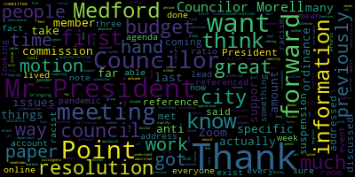
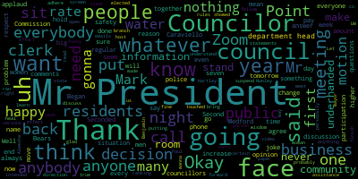
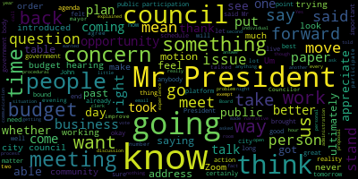
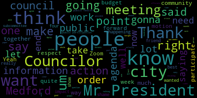
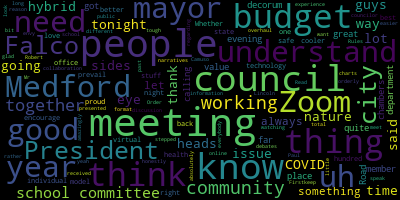

AI-generated transcript of City Council 06-23-20
English | español | português | 中国人 | kreyol ayisyen | tiếng việt | ខ្មែរ | русский | عربي | 한국인
Back to all transcripts
Heatmap of speakers
[Falco]: Clark-Curtabese, are you ready?
[Adam Hurtubise]: I am, Mr. President.
[Falco]: Thank you. 22nd regular meeting of the Medford City Council will now come to order. Clark-Curtabese, please call the roll.
[Adam Hurtubise]: Councilor Bears? Present. Vice President Caraviello? Present. Councilor Knight? Present. Councilor Marks? Present. Councilor Morell?
[Morell]: Present.
[Adam Hurtubise]: Councilor Scarpelli?
[Falco]: Present.
[Adam Hurtubise]: President Falco?
[Falco]: present, all seven members are present. At this point, I would ask everyone to please rise to salute the flag. I pledge allegiance to the flag of the United States of America, and to the Republic for which it stands, one nation, under God, indivisible, with liberty and justice for all. Pursuant to Governor Baker's March 12, 2020, order suspending certain provisions of the Open Meeting Law, General Law, Chapter 30A, Section 18, and the Governor's March 15, 2020, order imposing strict limitation on the number of people that may gather in one place, this meeting of the Medford City Council will be conducted via remote participation to the greatest extent possible. specific information in the general guidelines for remote participation by members of the public and or parties with the right and or requirement to attend this meeting can be found on the City of Medford website at www.medfordma.org. For this meeting, members of the public who wish to listen or watch the meeting may do so by accessing the meeting link contained herein. No in-person attendance of members of the public will be permitted. but every effort will be made to ensure that the public can adequately access the proceedings in real time via technological means. In the event that we aren't able to do so despite best efforts, we will post on the City of Medford or Medford Community Media website an audio or video recording, transcript, or other comprehensive record of proceedings as soon as possible after the meeting. Motions, orders, and resolutions. 20-421 offered by Councilor Knight. Be it resolved that the Medford City Council request that the animals- Mr. President, I'm sorry to interrupt.
[Adam Hurtubise]: I apologize. I needed to let you know at the beginning of the meeting that Councilor Knight has withdrawn paper 20457 from the agenda for this evening. Okay, thank you.
[Caraviello]: Motion to suspend the rules, Mr. President. Second, Mr. President.
[Falco]: I'm sorry, 20457 has been withdrawn by Councilor Knight.
[Knight]: Yes.
[Falco]: Thank you.
[Knight]: Motion to suspend the rules, Mr. President.
[Morell]: Point of information. For what purpose?
[Knight]: Papers under suspension.
[Morell]: On the motion of, I'm sorry, Councilor Morell, I missed what you said, I apologize. I was just seeing if there were specific papers, if they could reference the specific papers they want to take out under suspension.
[Knight]: The only two papers that I filed under suspension this evening, Mr. President. The first being 20461.
[Falco]: Okay, so on the motion to suspend the rules by Councilor Knight, seconded by Vice President Caraviello. Clerk, please call the roll.
[Adam Hurtubise]: Councilor Bears. I'm sorry, I didn't hear you, sir. I was a no. Okay. Vice President Caraviello. Yes. Councilor Knight. Yes. Councilor Marks? Yes. Councilor Morell? No. Councilor Scarpelli? Yes. President Falco?
[Falco]: No. So for the affirmative, three in the negative, the rules are suspended for 20-461. It was offered by Council tonight. And I'm sorry, 20-459, which is offered by consular marks. So those two papers are, they were often under suspension. Technically, due to the open meeting. If I may, Mr. President, before you start. Yes, Councilor Knight.
[Knight]: Thank you very much, Mr. President. I'm sure that this is a topic that's something that could be ruled out of order. I'm sure that you are inclined to do such based upon the late filing of the paper alone. With that being said, Mr. President, this paper does attempt to address a concern that's been raised by the council. And I do think it does warrant further discussion and deliberation. The question remains, Mr. President, is if the paper's ruled out of order, what direction can we go in later on? And if the paper's ruled out of order and that motion stands, then this can't be reintroduced for 90 days. In the interest, Mr. President, I think we're all aware of the situation and the circumstances as to what it is we're looking for here. I'm hoping that we can table this paper until next week, Mr. President. There's a lot of concern about people that haven't had an opportunity to participate, whether it be in the school department meetings or in the city council meetings, and the level of participation and the platform that's being used doesn't work for them. And I can certainly agree that the platform has been difficult. I've had a number of technical difficulties myself with it, and we've talked to a number of people, Mr. President, about this. So with that being said, there is a matter that's before us here, and I think that it's important that it be given the proper consideration. And I'm offering an olive branch here, Mr. President. I'd be willing to table this measure this evening and request that yourself as the Council President, Council Caraviello as the Vice President, meet with representatives from the administration, the Director of the Board of Health, Patrick Gordon, and the mayor, to see if there's a way that we can improve the way that we're doing business here and to improve the virtual platform, the ability for us to have public participation and public input live in some capacity or some way, whether that be a hybrid with Zoom or not, Mr. President. But I'm asking that this matter be tabled this evening with the conditions that, you know, you and Councilor Caraviello meet with those individuals from the administration. You give it one shot, Mr. President. Meet for one hour tomorrow. If we can work something out, that's great. If not, I'd be happy to be bound by the determination that's made by the vice president, the council president, and most parties. But I think, Mr. President, this is a topic that there are a number of people in the community that have expressed a great deal of concern about. There's been a lot of back-and-forth and division in the city of Metro right now about the way that we're conducting business. And I think it warrants another look to see if we can do better. With that being said, Mr. President, I also see that we're under a timeline. There is a crunch that we're facing here. There are a number of procedural concerns that were raised. There are a number of operational concerns that were raised. You know, the Medford City Council is a government body. It's a governmental body, and it has to respect and adhere to certain processes that are going to be in the best interest of the citizenry. That coupled with the fact that, you know, social media isn't a government body. Those platforms do not have to be held to the same criteria and standards when it comes down to us conducting business versus the way that matters are bantered back and forth, Mr. President. I just think that right now it would make more sense for us to put this item on the table, allow the two leaders that we've elected here in the City Council who are on opposite ends of an issue to come together and meet with the administration and try to work out a plan. I'm asking for 60 minutes tomorrow. but the two leaders of this council to meet with those individuals from the administration, Mr. President. And if we can move forward in that fashion and you guys can have one last shot at trying to improve the way that we allow the public to participate, I'll be happy to be bound by any determination or any outcome of that one hour meeting that takes place tomorrow. So, with that being said, Mr. President, I do appreciate you entertaining me with the ability to present my position on this matter and why I brought it forward, ultimately bringing it forward to address some transparency issues that have been brought up, to address some procedural issues that have been brought up, and to allow for a call for more public participation that's live in real time. So with that being said, Mr. President.
[Morell]: Just a point of clarification that the president had previously met and addressed a previously voted on resolution and more than 200 individuals have come out to previously scheduled meetings. So I just want that to be on the record.
[Knight]: Mr. President, I think that that's absolutely great and perfectly clear. And if you had met and talked to people about that, and there was no way that we could conduct this plan, and you brought that back to the body, and we sat down and had a meeting, and that was explained to us, I think that that would be great. But that's not what happened. So with that being said, Mr. President, that this isn't an issue that we're trying to create an internal fight and further divide the community on. And I'm not sitting there saying, Zach and Nicole and John are wrong because they showed up at meetings. That's not what I'm doing, Mr. President. And I'd expect my council colleagues to not do the same. What I am saying is that there's a concern here. This concern was brought up, and it came out rapid, very fast. There wasn't much time to address it. And I took a stand, Mr. President, and I stand by that vote that I took. I felt as though it was important that people be provided an opportunity to present live and talk about the concerns that they have. and they don't have the opportunity to come to a school committee meeting and face the people that laid them off, I think that that's a problem. So with that being said, Mr. President, I've offered this proposal in an effort to try to build a bridge between the two positions of where we're at. And I understand the crunch of time that we're on, so I think that that's a great compromise solution that I'm offering, that you and Council Vice President Caraviello meet with those three individuals tomorrow, sit down, try to hash out a plan where there can be more public participation in a live setting in one fashion or another, and we can move on from there, Mr. President. I'd be happy to be bound by the findings of that committee. However, at this point in time, you know, based upon the series of events and circumstances that arose, I didn't feel as though I was informed, I didn't feel as though there was a great good – there was a good deal of communication, and I took a stand, Mr. President. And, you know, if I feel something – if there's something that I think I should stand up for, I will, and that's what I did. And, you know, and I've got to look in the mirror every morning and shave my face before I, you know, before I leave the House, Mr. President. And that's one of the biggest tests for a politician. Can you look in the mirror every day? And I always have been able to, and I will continue to do so as long as I serve. But with that being said, Mr. President, I offer this proposal that we table this, and the Joint Council of Caraviello Meet, for the purpose of conducting a small meeting, one hour in length, with Marian O'Connor, with Mayor Lungo-Koehn. and with Patrick Gordon, the Director of Community Media, to see if there's ways that we can improve the in-person or real-time public participation of our council meetings, especially relative to the budget hearings, Mr. President. I think that's really what my main focus is on, is the budget hearings. Point of information. Through the rest of it.
[Morell]: Thank you, Councilor. Point of information, Councilor Morell. Thank you, Mr. President. Is the motion to table this resolution, or is the motion to amend this resolution?
[Knight]: The motion is to be tabled under the conditions that the Council President and the Council Vice President agreed to take these steps. And I think that that's a good compromise.
[Falco]: Thank you, Councilor Morell. Thank you, Councilor Bears. Did you have a question?
[Bears]: Yeah, just is this a paper in order, Mr. President?
[Falco]: So the paper, as far as I'm concerned, the paper is not in order. I would ask that it be tabled and put on the agenda next week. As far as Councilor Knight's question about meeting with the administration, I have sent emails off to the Board of Health Director earlier today. I talked to Patrick Gordon earlier today. There were very brief conversations. My opinion is this, I know we need to get this done. We need to pass a budget. We are against really hard time, a tough deadline now. So we need to get this done. We need to work together. But in my eyes, Zoom needs to be a component of this. It absolutely needs to be a component. At the past three budget meetings that we had or attempted to have, this morning I believe, I'm sorry, But an hour ago, we had 189, close to 200 people on the call. Last night, it was close to 90. Saturday morning, 50 people. 50 people jumped on the call on Saturday morning to listen to a budget hearing. I have to be honest with you, in all my years of city government, I've never seen that much interest in the budget. It's nice to see people are involved. They want to be part of the process. That's great. I love it. And I'm happy that everyone attended. It's unfortunate that we couldn't have the meeting, but I'm happy that everyone attended. And so I don't mind personally meeting with Vice President Caraviello, the mayor's office, you know, Marian O'Connor, Patrick Gordon, to see if this is something that can happen. But I will state again, Zoom has to be part of the process. And more than willing to- Councilor Marks, I think I heard your voice.
[Marks]: Thank you, Mr. President. Not to interrupt you, but it's always been the intention of, I believe, all seven councilors to have Zoom part of any process.
[Morell]: Point of information. Point of information, Councilor Morell. The paper that's being discussed does not reference Zoom, and that's why it's coming up.
[Knight]: Point of information, Mr. President.
[Marks]: Mr. President, just if I could finish my point of information. Okay, Councilor Marks. Just if I could, with all due respect. Over the last several days, I've received a number of emails, which I welcome, much of which spoke about us as a council not wanting to have Zoom as an option. which is the furthest from the truth, Mr. President. So I just want to let it be known that I as one member of the council, my council colleagues will speak for themselves, never once mentioned to stop council meetings on Zoom, stop budget meetings, it was to provide an additional avenue to our meetings. So even if we did hold in-council meetings with department heads, those meetings would have been televised. They would have been available to Zoom for comments. They would have been available to Zoom for email. They would have been all open access, Mr. President, as council members. And if I can also mention, Mr. President, this is my 25th budget. That means 25 years. I take my job very serious, Mr. President. And I don't take it lightly. I've never missed a budget in 25 years, Mr. President. And what happened recently, Mr. President, I think was unfortunate. And my concern right now, Mr. President, is moving forward, getting past this, Mr. President, and offering people no one wants to do a wayward zone. Anyone that's telling you that hasn't been true to you. We are not doing a wayward zone. There are, as many business people know, and other people that are in the business world and so forth, there's a lot of complexity to putting together a budget, especially a budget that's 183 million, that deals with potentially hundreds of layoffs. And to work that type of budget over a Zoom meeting, for us to be present with each other- Mr. President, would be-
[Caraviello]: Can we get the screen clear? Thank you. Sorry, Councilor Marks.
[Marks]: Councilor Marks, please continue. Mr. President, this was a point of information, but what I'm saying, Mr. President, there's a lot of things that go on in a budget. There's sidebar conversations that we've had in the council when we discuss issues. There's a lot of things when we sit down and talk to department heads. Now, Mr. President, if one minute someone felt the department head that they were unsafe, Those are the things we'd have to address, Mr. President. And maybe having a meeting is not the greatest idea in public. But I can tell you in the town of Canton and the town of Abington, they just recently, within the last couple of days, have held meetings with their town councils. And they address situations of social distancing, of providing masks, sanitary gloves, and so forth, whatever they needed to do to address. And all I'm saying is, I think we could have tried to accomplish that in the city of Medford, and also keeping Zoom and every other realm of communication. If there's another one out there, that's you, Mr. President. You yourself know we've opened up. We've never had our budget meetings, since I've been on in 24 years, open other than arriving to City Hall. And I realize this is a different time, arriving to City Hall and have people participate in person. Now for the first time, we have cameras in our council room that can capture these meetings. There is no way members of the council want to hide anything from the public, exclude the public, Mr. President. So I just want to put that out there. I know there's been a lot of information back and forth, and it makes for a good story. Certain people don't want to attend meetings. But I can tell you, Mr. President, that's not the case. It's not the case with me, Mr. President. I look forward to moving forward. And as I've told people that contacted me, you can rest assured we're going to have a signed budget. We're going to have open debate, open dialogue, open comments, and we're going to have a signed budget, Mr. President. Thank you for indulging me for those few minutes. I appreciate it. Thank you, Councilor Marks.
[Bears]: Mr. President, point of information.
[Falco]: Point of information, Councilor Bears.
[Bears]: I respect what Councilor Marks said, but the paper in front of us right here doesn't have Zoom in it. It says email and phone only. My understanding, COVID orders, members, department heads, and members of the public need to be able to participate remotely. We're gonna end up after tomorrow's meeting, if there is one, it seems like that's the direction it's going. We're gonna end up after tomorrow's meeting in the place we were last week. But instead of two weeks to debate a budget, we're gonna have one week to debate a budget. So we're gonna end up where we were. You know, I need to be able to participate by Zoom. And quite frankly, hundreds of people have participated and have been very angry that these meetings haven't moved forward. We're just going to be where we were with less time. So I'm very disappointed in the actions that have been taken.
[Marks]: Board of Information Counsel Marks. Thank you. And I know my two colleagues have expressed themselves many times on social media and Twitter and so forth. However, Mr. President, this is the Medford City Council meeting. And I think at the very least, it deserves the opportunity, Mr. President, to explore, which we asked for well over a month ago, to explore what options are out there. And all I'm saying is we need the time to explore it, Mr. President. The mayor has already come out asking us, saying if we're unable to get together on this, she's going to have to do a 1-12 budget. That would be her wishes, not my wish. I think we can resolve this, Mr. President. I think we can get together. And according to what Councilor Knight mentioned, that we're willing to stand by whatever the recommendation is. And that includes the Mayor's recommendation, her Board of Health, the President of the Council, the gentleman from Local Access, and the Vice President. So whatever the recommendations are, Mr. President, that's what we're gonna stand by. And if it includes not having the public meeting at City Hall, then as far as I'm concerned, so be it, Mr. President. So I don't see how this is going to wait another week, Mr. President. And if anything, maybe these public meetings should have been called one after another because you have a 48-hour wait period. So maybe these meetings should have been called so we do have meetings scheduled for the next couple of days. And I would ask, Mr. President, that maybe that's something you look at so we do have meetings set up. Thank you very much.
[Bears]: Mr. President, motion while we're under suspension to take public participation out of order.
[Falco]: We're not we're not done yet council here. So one minute.
[Bears]: Okay.
[Falco]: Um Council vice president cabrio.
[Caraviello]: Thank you. Mr. President. Um, uh, I I thank uh council night for putting this all a branch forward Uh in the effort that we move on. Uh, there's a reason why council mark's been there for 25 years Uh just by his statements, uh, this is this you know He has the wisdom that many other people want on this council. Don't i'm uh, uh I'm the second-ranking person there, but I have nothing in the amount of years that Councilor Mark says. And again, if there isn't anything he said that's not true, and I agree with Paul Hartley, this is a time to learn to heal. I'll be happy to meet tomorrow, whatever time. We'll sit, we'll discuss this, and whatever the decision is, the decision is, and we'll move on from there. So I'm happy to be of assistance to yourself, Mr. President, and everyone else on the council, yeah.
[Falco]: Thank you, Vice President Caraviello. Mr. President, point of information. Point of information, Council of Peers.
[Bears]: Are people shutting off the video? People are saying their video is being shut off. I'm just getting a lot of messages that people's videos are being shut off for holding up messages, so I hope that's not happening.
[Falco]: I haven't touched anything, so I try to keep it simple. Mute, unmute, and that's about it.
[Adam Hurtubise]: Mr. President, I have not shut off any videos either.
[Falco]: Okay, I haven't shut off videos, so.
[Bears]: I'm really disappointed in that action that's happening right now.
[Falco]: I haven't shut off anything, so just to let you know, Council Appears, I haven't touched anybody's video.
[Caraviello]: It's for just for everyone's effect anyone who's a co-host can do it and it seems like some of us aren't doing it Well, I have not I for one other can state that I have not touched anyone's video First of all, because I don't personally I probably don't I don't even know how to do it
[Scarpelli]: Thank you, Mr. President. Ditto, Mr. President. If I can indulge you. Yes, Councilor Scarpelli. Thank you, Mr. President. And I appreciate you entertaining the option of Council night's resolution and tabling. So obviously, this is a lightning rod that we've gotten multiple emails, multiple phone calls. In times of disarray, and we're looking at these times, probably the worst budget in Medford history, we received phone calls from multiple people, emails, I'm sure my colleagues have, about the fear that they would not be heard. And the focus on myself, speaking for myself, was never was never to drown anybody out, to hurt our committee, to not to stop some sort of a process. We were elected as elected officials to make sure every person is heard. And believe me, I appreciate the 200 people to 300 people that are on calls, and we've been on calls together. But the understanding was very simple, just to make sure we can spend some time to make sure that we could find an avenue that everybody is heard. Now, that's no slight to you, Mr. President. I know you've tried very hard. But this is something we have to look at either with the mayor and the city administration, yourself, our Councilors, the four that haven't shown up to the budget. These are issues that we have to address. But I think what's important right now is that we work together to try to get this budget heard with the people in place. And again, I'm going to follow with my colleagues and say, as we move forward, I know the constituents that elected George Scarpelli understand my integrity, my desire, and my love for this community, that I'm going to do what's best for every single person. And to be honest with you, I'm sure that's true with everybody on our council. So to see and hear the negativity, because a group doesn't believe in the same beliefs that you do, that they want to make this a different issue. I've been saying this for weeks, council president. Please, please, to my colleagues in the city council, please, to my colleagues on the school committee, do not divide this community. And what has happened is something simple as a process, a simple process to make sure everybody is heard. has turned into an ugly creature in our community that I've been called, my credibility's thrown out, that this council of four members have been looking to do something underhanded, or that I'm stopping the process of something that a group wants to speak about, or the fact that I'm racist because of this, and the best one ever, my kids love this one, because of my weight. that some reason that I didn't show up to these meetings because of my weight. So it's absolutely comical. I love the city of Medford. I've done everything as a teacher, as a coach, as a volunteer, as a school kid member, as a city council to do what's right for the city of Medford. We've had some divide in this community. A few weeks ago, there were some issues about an issue that came through the school committee. that I will publicly say I don't disagree or I don't agree. But the problem that brought this issue forward was the lack of transparency that people that wanted to be heard couldn't be heard because things were pushed through. So whether you believe in the issue or not, that's not the point. The point is, when I started in this position, When we started together on the school committee, we made sure we were the platform for every single citizen. And what we saw and what we're seeing now is an organization dividing our community. And we need to find a way to fix that. We need to find a way to meet with organization people from that group and sit together. Because I've talked to a few of them just recently. and had great conversation, had to understand, to agree, to disagree. We're all on the same page.
[Morell]: There's just a group and an organization that keeps on being referenced. I'm not sure. I don't understand who's being referenced or being addressed.
[Scarpelli]: When I find out that group, Mr. President, I'm sure I'll share with it because I haven't been directed exactly what that group is. This is what I've been told from phone calls and emails that I've been getting. So when I do find out, I would love to share with everybody in the community. But right now, this committee, our city council, right now, needs to find a way needs to find a way to bring this group together. I've had too many phone calls telling me, what happened to Medford? Why are we so, why are we split? So I think right now, Mr. President, with your leadership, I think moving this forward and people understanding, listen, you don't have to agree with me. That's okay, that's the process. But to understand, to think that I was delinquent in my duties, I applaud my duties because I work for every member, not for people that have their agenda and hope to push that agenda forward, Mr. President. So I thank you for listening to us. I understand this last week has been troublesome for everybody. We've had a lot of sleepless nights, but at the same time, I think we have something on the table that if you can, you and Councilor Caraviello can work the administration, And again, Councilor Knight, Councilor Marks said, I will gladly follow your lead moving forward. The people that have asked to be heard, they know that we put forth that concern, and we have to move on with that. So thank you for your time. Mr. President.
[Falco]: Thank you, Council. Scott Pelle, Council of Peers.
[Bears]: I just think if we're going to be slinging accusations and calling people dividing the city, let's, let's name it. Right. I, I don't know what you're talking about. If you're talking about our revolution, Medford, I think that's an insult to people who are organized. Okay. Well, you're, you're saying that people are dividing the city. You're saying that other Councilors are doing it and where the other Councilors who showed up to the meetings. I'm just saying, I don't want a divided city.
[Scarpelli]: I think that people, I think that point of information, I didn't name a Councilor. I didn't name an organization. If my fellow Councilor feels guilty about something, then he should feel guilty.
[Bears]: Mr. President, I think it's a shame. I think it's a shame that people organizing for their community are, are belittled. I think it's a shame. So I'm going to keep showing up to meetings, Mr. President, and I, I'm sure there'll be on zoom.
[Falco]: Thank you, Mr. President. Thank you, Councilor Bears, Councilor Morell.
[Morell]: I'm glad everybody thinks this is funny. Thank you, Mr. President. I do want to note that I do get frustrated by Zoom sometimes. I've had a few times where I've had my hands up. And I know when we have such high attendance, it's hard to see everyone with their hand up. And it's a little different if we're in the chambers and I were able to push the button and get online. But these are things that have to be done because we are still very much in the middle of a pandemic. I know things are being shared about how many budgets people have done. This is my first budget. But like every other Councilor, this is my first budget during a pandemic. I've only lived in Medford for seven years, but I've lived here long enough to hear the phrase Medford is not XY or Z city. So while I appreciate that the city of Canton met in person, I think we as Medford can identify a way to move forward. One way actually has been previously identified. I have been at the meetings, but I do welcome the president's absolute willingness to work with every Councilor and lead on this. the fact that many members of the public and members of the council and department heads and the administration have been on three budget meetings that did not go on. So thank you.
[Bears]: Mr. President, point of information. It'll be my last one. I just want to also add and inform the public as well that if we're talking about dividing the city, there are elected officials who have had threats made against them in the past two weeks. There are elected officials who have the police watching their house in the past two weeks. So yes, there are people in this community who are making threats because the democratic process isn't sufficient for their beliefs. And I think that's a shame. And I just want people to know that, that's where we are. People are getting threats. So we need to do better.
[Falco]: Thank you, Councilor Bears. So it seems like all the councilors have spoken. So if I may. If I could, Mr. President. Councilor Marks.
[Marks]: I need to say, Mr. President, I remember a day when there used to be some disagreements and Councilors would argue about issues. But what I have to say, Mr. President, is this council is going in a very different direction. It's a little troubling when a member of the council offers a resolution and other Councilors prior to it even being discussed on the agenda, start bashing a member of the council for offering a resolution. Not even listening, like they'll talk a big game saying, I want to hear what people have to say, but they start bashing someone before you have to hear what they say. Point of information got somewhere else.
[Morell]: The resolution being discussed wasn't on the agenda. It was submitted under suspension.
[Marks]: I'm not referring to the resolution, but thank you for your comment. Mr. President, so what I'm saying, Mr. President, is very troubling. Everyone's entitled to their own opinion. But to start this back and forth, Mr. President, without listening, God gave us two ears and one mouth for a reason, Mr. President. And without listening to see what someone else has to say, we're never going to move forward, Mr. President, because we can't debate stuff on Twitter and email and all those other services, Mr. President. That's not how we operate. And I realize these are two new councils, and they're not privy to how maybe the council operates. but just for future, Mr. President, moving forward, have respect for other people. You may not agree what they have to say. You may hate their resolution. You may despise what they're saying, but give them the opportunity to say it and then have your say. That's all I'm saying this morning.
[Falco]: Thank you, Councilor Marks. Can we try to keep this to the budget? Okay, that's the number one focus is the budget. So if we could just try to keep this to the budget, I'd greatly appreciate it. Councilor Marks?
[Morell]: I will stop after this, but I just want to say that I have very much respect to this, this council on this body. And that's why I showed up to the three budget meetings.
[Bears]: Thank you for the last three days. Thank you, Mr. President. Um, I think, I think it's respecting the public and the people of Medford to let them know what's on the agenda or what's being proposed and how Councilors feel about it. I think keeping people in the dark is wrong. So that's why I did what I did. If this had been posted on the agenda, or if we had had the time to put this on the agenda, that's how I would have approached it. I respect the people of Menford knowing what's going on. And this has been a very tense weekend, as we all know. Sleepless nights, I think Councilor Scarpelli said. So people asked what was happening. I told them what was happening to the best of my ability. And to be quite frank, I took special efforts, not to make it personal about other Councilors, not to name other Councilors. Even if people ask me who showed up and who didn't, I didn't answer that question. So I just want to say that to the public of Medford, I did what I did because I think you have a right to know, and I think we need to move forward. And that's why I did it. So respect to the council and respect to the people is behind my actions.
[Falco]: Thank you, Councilor Bears. Vice President Caraviello.
[Caraviello]: Thank you, Mr. President. Mr. President, respect to the people, respect to my fellow Councilors. I think we need to end this discussion at this point because it's a, like you said, we're going in a direction that wasn't intended. So again, I'm open to meeting with you and whatever you want to do tomorrow and we'll adhere to whatever decision. if that's what everybody wants to do, Mr. President. We're going to sit here and call names at each other all night. Again, this isn't the council that I want to be elected to. I mean, I ran to be everybody's councillors, not just certain people's councillors. So, again, I'm here for- So did we all.
[Bears]: So did we all, Mr. President.
[Caraviello]: I'm sure you did. Everybody thinks this is a funny and a joke. It's not a joke. It's serious business.
[Bears]: Yeah, that's why I showed up.
[Caraviello]: That's right. I'm glad you showed up.
[Falco]: Thank you, Vice President Caraviello. Thank you to all the council members. If I may, just a quick, you know, I think a number of council has said sleepless nights, restless nights, the past week has not been easy. You know, making the decision to, you know, have the meetings was made, you know, with the guide to public health. You know, when I talked to Marianne O'Connor that she pleaded with me not to do it. For me, that was it. She's a public health director. When she told me public health, she pleaded with me not to do it. And at that point in time, that's a public health expert. I will be the first to admit, I am not a public health professional, not even close. So I needed to make sure that, for safety's sake, that everybody was safe. I will work my hardest because, to be honest with you, and I've always said this, and I know people laugh at me sometimes, you know, to me it's always like, you know, we need to be one method. We need to come together. We need to work together. And over the years as my elected, as I've been elected official, six years in the school committee, about five now on the council, you know, there's been a lot of teamwork, a lot of working together. And a lot of times, you know what, we would agree to disagree, but you move on to the next issue. I think what we need to do is we need to work together on this. I am more than happy to give this one more shot just to take a look, to see if this is something that we can do. So I will set up a meeting tomorrow with Marianne O'Connor, our public health director, the mayor, or at least a representative from the mayor's office, Patrick Gordon from the cable TV, and vice president Carvial. I will look to see if there's some way to enhance this, I guess. But to me, like I said, Zoom has to be an option, which it seems like everybody's on board with that. Zoom must be an option.
[Marks]: 100%, Mr. President.
[Knight]: Whatever plan that the parties can agree to, Mr. President. I don't think anything, nothing in the proposal that I put forward was to exclude Zoom, Mr. President. It was just to say that that's a platform that might not work and there may be other platforms that are better. Zoom could have been used for the call-in portion of the public participation, for example. So, you know, nothing limited this to Zoom, but my concern was that I wanted to be in the same room with the people that were making the cuts so that I could look them in the eye and ask them the questions that I need to ask, Mr. President. Then there's another layer of concern with the public participation process. It's twofold. But as I've said before, in an effort to move past this issue and to negotiate some sort of compromise that's good for all of us, I offered this compromise proposal. I asked for it to be second so we can move on. Second, Mr. President. Motion to table ends all debate.
[Falco]: I was going to say, so the motion to table was offered by Councilor Knight, seconded by Second, Mr. President.
[Bears]: Point of information, isn't this table because it's out of order? Automatically.
[Falco]: So this is out of order. This is gonna go onto the agenda for next week, okay?
[Knight]: Councilor Ioannoni. The chair never made a ruling on whether or not the paper was out of order. The paper was introduced, a motion was made before there was a request to have the ruling made on the paper. The motion was the table. Then we had a debate on that, then that debate on the table was seconded. That ends all debate on the topic The council wants to go through the exercise of having the paper ruled out of order, having maybe someone call the question of the chair and then going through that whole process again. I don't see where that's going to get us. Ultimately, Mr. President, we're all on the same page here. We're all going down the same track here that I think we can agree on. So let's not put any more obstacles in front of the way and let's get there.
[Unidentified]: Did you say something? No, okay, I'm sorry. On the motion of Council and I to table the seconded by Vice President Caraviello, Clerk Hurtubise, please call the roll. Councilor Bears. Abstain. Call the rolls, Mr. President. I think you have to vote either way, Councilor Bears.
[Bears]: Then no.
[Falco]: So that's no to table.
[Adam Hurtubise]: I don't, I don't feel comfortable voting. Vice-president Caraviello. Yes. Councilor Knight. Yes. Councilor Marks. Yes. Councilor Morell. Yes. Councilor Scarpelli. Yes. President Falco.
[Falco]: Yes, six in the affirmative, one in the negative. The paper is tabled. It's tabled.
[Bears]: Motion to take back the public participation out of order.
[Adam Hurtubise]: Mr. President, I have a question. When Councilor Knight moved to suspend, he also moved to take 459 under suspension.
[Falco]: which is that's offered by Councilor Marks. Can we table this one to next week as well, Councilor Marks?
[Marks]: Mr. President, I would respectfully ask that this be combined with the other paper. They're of similar subject matter, and I feel to do that at the beginning and ask that this be combined to the other paper.
[Falco]: On the motion of Councilor Marks, seconded by Councilor Knight, to combine this with 20-461.
[Marks]: Mr. President, just for the interest of transparency, if you wanna read it, so people know what the resolution was.
[Falco]: Be it resolved in the interest of moving forward, a plan be discussed to address ways to increase community participation during the Medford City Council fiscal year 21 budget meetings.
[Caraviello]: Thank you, Mr. President. Mr. President, I know Councilor Bears has made a motion for public participation, but there's a- Let's finish this motion first, if I may, okay?
[Falco]: The motion is to join this paper with the one that was previously tabled. So I have a motion to join these papers, seconded by Councilor Knight. Clerk Hurtubise, please call the roll.
[Adam Hurtubise]: Councilor Bears. Yes. Vice President carabiello. Yes, Council night. Yes, Council marks. Yes, that's a morale. Yes, that's a scarpelli.
[Falco]: Yes. Yes, I have an affirmative, zero in the negative, the motion passes.
[Caraviello]: Mr. President.
[Falco]: Vice President Caraviello.
[Caraviello]: I understand that Councilor Bears wants to bring the public participation in, and I don't have any problem with that, but we do have Aleesha Nunley-Benjamin for a paper from the mayor, if we could do that first, and then you can do whatever you wanna do, because I'm gonna sit here and read 30 emails. This woman will be up all night. I'm fine with that.
[Falco]: Okay. So on the motion of Vice President Caraviello to take a- 20449. 20449, actually, so, Clerk Hurtubise, we're still under suspension.
[Adam Hurtubise]: We're still under suspension. Okay, thank you.
[Falco]: On the motion of Vice President Caraviello, seconded by Councilor Beard to take communications from the Mayor, 20-449. to the Honorable President and members of the Medford City Council, City Hall, Medford, Massachusetts 02155. Dear Mr. President and City Councilors, I respectfully request and recommend that your honorable body approves the appropriation of retained earnings in the amount of $1,500,000.00. This amount is being requested to subsidize the fiscal 2021 Water and Sewer Enterprise Fund budget due to the health pandemic and current economic conditions. retained earnings and reserves of the Water and Sewer Fund. Reserves can be used for any lawful purpose, but serve primarily to provide financial security in cases of unforeseen events such as COVID-19 or capital replacement. The balance of retained earnings before this vote is $6,433,552. Council. Thank you. Thank you. Thank you. Thank you. Thank you. Thank you. Thank you. Thank you. Thank you. Thank you. Thank you. Thank you. Thank you. Thank you. Thank you. Thank you. Thank you. Thank you. Thank you. Thank you. Thank you. Thank you. Thank you. Thank you. Thank you. Thank you. Thank you. Thank you. Thank you. Thank you. Thank you. Thank you. Thank you.
[Nunley-Benjamin]: Thank you. Thank you. Thank you. Thank you. Thank you. Thank you. Thank you. Thank you. Thank you. Thank you. Thank you. Thank you. Thank you. Thank you. Thank you. Thank you. Thank you. Thank you. Thank you. Thank you. Thank you. Thank you. Thank you. Thank you. Thank you. Thank you. Thank you. Thank you. Thank you. Thank you. Thank you. Thank you. Thank you. Thank you. Thank you. Thank you. Thank you. Thank you. Thank you. Thank you. Thank you. recall your honorable body voted to reprogram $850,000 in capital outlay, which was in the sewer and water budget to a capital project fund, the leak detection fund that wasn't being utilized. And this will be to subsidize as of for the budget that's coming forward.
[Falco]: Any questions from the council?
[Bears]: Council appears. Thank you, Mr. President. Alicia, is there any concern that this will, you know, are we gonna have enough retained earnings going forward if we have any issues?
[Nunley-Benjamin]: Yes, we will. I think this is a proper use of retained earnings. What we're trying to do is, we know costs are going up, we know consumption's going down, and we're just trying to minimize the impact on the rate users during this horrible time of economic decline.
[Bears]: Thank you so much.
[Falco]: Thank you, Councilor Peers. Councilor Knight?
[Knight]: Ms. Dunley-Benjamin, are you aware when the next set of rates are going to be established by the Water Sewer Commission?
[Nunley-Benjamin]: They voted the rates.
[Knight]: Okay. And do you know what they are offhand?
[Nunley-Benjamin]: Not offhand but I know it's a three percent increase overall which is about six dollars and some change to the average residential user.
[Knight]: Okay. And this appropriation is going to be used to offset some of that impact to the residential user by keeping it at the balanced rate and using the reserves to offset it so that we don't have to have a further increase.
[Falco]: Correct.
[Knight]: Thank you very much. I support the paper and move approval, Mr. President.
[Falco]: Thank you, Councilor Knight. We have Councilor Morell.
[Morell]: Thank you, Mr. President. Director Nunley, so I know we've talked in previous meetings just about amounts or ratios for things like free cash that's preferred to have in the account. Does something like this exist in this type of account that's a recommended amount or ratio? I know you said you feel comfortable with this amount, but I don't know if there's anything else.
[Nunley-Benjamin]: Yes, but we make decisions based on the needs. And because COVID-19, which is unprecedented, happened, This is a good use of the funds to kind of prevent a huge rate increase. So we looked at it that way and we wanna minimize as much as we can. We still wanna keep our surplus reserves that we do have in case we need to do capital outlay or something happens, but there's sustainable amount of reserves there that we believe for right now, that's fine to take the 1.5 million. On a percentage basis, I usually like to go anywhere between 5 to 10% is what I like to look at. But it's okay to go below that in cases of need. And this is definitely one of those scenarios with the economic crisis.
[Falco]: Okay, thank you. Thank you, Councilor Morell. Councilor Marks, did I hear you?
[Marks]: Yes, yes. I'm sitting on a low chair today, so. Mr. President, if we could have direct, not only just, maybe I missed it, what the balance is in the account after the 1.5 million is used?
[Nunley-Benjamin]: Yeah, right now we have 6,000,433,552, and then we're gonna take out 1.5 million, so you'll have left in there 4,000,933,552.
[Marks]: The reason why I bring this up, Mr. President, and this may be a discussion we can have during budget debates, is that the mayor already committed, I believe it was a little over $5 million in free cash towards offsetting our deficit here in the community. And I would respectfully request that in addition to the $5 million, that we also look at the water and sewer enterprise account. And I realize under state statute, it only allows us to use that money for certain purposes, and one being to offset a budget deficit. And in the past, I've been on the council for a number of years, we have dipped into that money to use to offset our snow and ice account in the city budget. The reason why I state this, Mr. President, is it's very likely, even with the free cash, that there still is going to be some layoffs, in particular in the school side and some within police and fire and DPW, Mr. President. And I would ask that, respectfully, the city administration look at filing a home rule petition to tap into some of the additional 4 million plus that Director Nunley just mentioned that possibly is available that will keep us still maintaining the money for infrastructure and other emergency purposes, but also making sure, Mr. President, that we as a community don't have to experience the loss of teachers, guidance Councilors, police, fire, and other essential services within our community. So I would just offer that as a B paper, Mr. President, that the city administration explore the option of filing a home rule petition. Thank you, Mr. President.
[Falco]: Thank you, Councilor Marks. Clerk Hurtubise is waving his hand here. Everything okay, Clerk Hurtubise?
[Adam Hurtubise]: Councilor Marks answered my question before I was able to ask it. I was wondering if he was filing an amendment and he said he was filing a B paper. That is a B paper, you are correct. Second, the B paper.
[Falco]: On the motion of Councilor Marks, seconded on the B paper, seconded by Councilor Bears, Vice President Caraviello.
[Caraviello]: Thank you Mr. President. I had the opportunity to speak with some members of the Water and Soil Commission and they explained the situation why this money is being appropriated and I applaud their decision to take the residents of Medford into consideration with the water rates at only 3%. I think they were saying that without this, the rate increase would have been substantially higher. So again, this is something we've done in the past for many years. We've done our best to keep the costs down for the residents. But I think people seem to forget that we get a total bill from the MWRA every year, and we have to sell water. And unfortunately this year, with the COVID and the business shutdown, the commercial use, which pays the higher rate, dropped considerably. And again, this was a big problem, I know, for the commission this year. So again, I applaud them for doing this and making sure that the residents pay the least amount of increase that's possible.
[Falco]: Thank you, Vice President Caraviello. Any other comments for the councilors on this? Oh, Councilor Scarpelli.
[Scarpelli]: Again, thank you, just to reiterate what Councilor Caraviello said, I know the commission works very hard and they keep all of our citizens as a first priority and with the budget and financial impacts to each community member being negatively affected, keeping that at 3% is a blessing. So thank you so much to them and well done with this paper, so thank you.
[Falco]: Thank you, Councilor Scarpelli. Any other questions from the council regarding this particular paper? I don't see any. So do we have any questions from the public about this paper here, this particular paper? Clerk Carnavis, you see anything?
[Adam Hurtubise]: Mr. President, I don't see anything on this particular paper. Okay, thank you.
[Falco]: So we'll take the B paper first. There's a B paper that is offered by Councilor Marks and seconded by Councilor Bears. Clerk Hurtubise, do you have the language to the B paper? You're muted, Councilor. Sorry.
[Adam Hurtubise]: Clerk. Councilor Marks' B paper was to look at the water and sewer enterprise account and for the administration to look into filing a home rule petition to explore additional funding options.
[Marks]: Is that correct, Councilor? If I could just clarify. To look at the Water and Sewer Enterprise account and file a home rule petition and potentially offset any budget deficits that we may have with the Water and Sewer Enterprise account. The remaining, I believe, was $400, $4 million and somewhat change that Director Nunley mentioned. OK. Thank you. Thanks.
[Falco]: I have a motion offered by Councilor Marks and seconded by Councilor Bears. This is the B paper. Clerk, please call the roll.
[Adam Hurtubise]: Councilor Bears? Yes. Vice President Caraviello? Yes. Councilor Knight? Yes. Councilor Marks? Yes. Councilor Morell?
[Unidentified]: Yes.
[Adam Hurtubise]: Councilor Scarpelli? Yes. President Falco?
[Falco]: Yes. Senate affirmative, zero in the negative, the motion passes. On the main motion, let's see, Move to approve by Councilor Knight, seconded by?
[Caraviello]: Seconded, Mr. President.
[Falco]: Seconded by Vice President Caraviello. On that motion, call the roll.
[Adam Hurtubise]: Councilor Bears? Yes. Vice President Caraviello? Yes. Councilor Knight? Yes. Councilor Marks? Yes. Councilor Morell? Yes. Councilor Scarpelli? Yes. President Falco?
[Falco]: Yes. Sending the affirmative zero and the negative, the motion passes.
[Bears]: Motion to take public participation out of order under suspension.
[Falco]: I'll order the suspension. The motion is to take public participation out of order. On that motion, Clerk Hertovich, please call the roll.
[Adam Hurtubise]: Is there a second?
[Unidentified]: I'm sorry, seconded by? Second. Seconded by Councilor Morell. Clerk Hertovich, please call the roll. Councilor Bears? Yes. Councilor Knight? Yes. I'm sorry, Vice President Carabello, I didn't call you.
[Adam Hurtubise]: Yes. Councilor Marks. Yes. Councilor Morell. Yes. President Falco. Yes. Councilor Kelly. Yes. Okay, thank you. Apologies, we're going out of order.
[Falco]: the motion passes and now we are ready for public participation. At this time what I will do is if you put your hand up I will call on you. This is where I have a tough time managing the zoom but I will try to call on everybody that I see that has their hand up. Be patient please.
[Morell]: Mr. President? Yes, Council Member. Are you looking for physical hands, hands in the Zoom, either or?
[Falco]: I guess either or. If you can use the Zoom hands, that's great because it's easy to find, but if you can't and you're not sure, just give me a wave and I'll find you. If I may, I know over the past week there have been There's been a lot of talk about the budget and whatnot. I know a lot of people want to speak on that issue. The only thing that I ask is please be professional and courteous. That's all I ask. And when you're called, if you could please give your name and address for the record. That's part of the process.
[Unidentified]: So let's see. We can please have your name and address for the record.
[SPEAKER_09]: Hi, I'm Laura Deruder and I'm from 190 High Street. Thank you very much for giving me the opportunity to say something. First of all, I want to say that I'm happy to hear that all the councillors agree that Zoom is important. You've seen how many people have shown up here how many people or maybe you've heard of those who weren't there How many people showed up for the budget meeting? And and I have two points. The first one is I don't understand why The Councilors weren't there didn't feel that they could show up and explain why they think that this forum was inappropriate There was no information for anyone in which said that you wouldn't participate, that's how we understood it when it was presented at the meeting. And similarly, now that you were mentioning issues, concerns, but you're keeping things very vague. And I think it would be really good to know what you're referring to, what those concerns are, to spell it out so that the public can understand what your points are. The second point that I want to make is actually a recommendation or a concern that I have if you now start having hybrid meetings. So if you, let's say you are meeting in person, because it's inside, you would still have to wear masks. it would be really hard to understand that unless you have a microphone right next to your mouth. So for people who are then not in the room and for people who are joining via Zoom, they will have a hard time understanding, especially people who are hearing impaired who need to see the mouth to understand what people are saying. And from my own experience of having hybrid meetings in a large organization, even before there were masks, it's very easy to ignore and sideline the people who are not in the room. So my appeal to the council is to keep the meetings Zoom based. If you want to solicit feedback from people, as you said, people are very happy to send emails to you and to the clerk. So that is still an opportunity to do that. So all I want to say is, Please keep the meetings and I caution about a use of hybrid meetings because it's really also an accessibility issue. Thank you.
[Falco]: Thank you. You bring up a lot of good points.
[Unidentified]: Thank you for those comments. Let's see here. Please have your name and address for the record. Hi, my name is Rachel Wolk. I'm at 582 Fulton Street.
[SPEAKER_39]: I just wanted to bring up sort of something that was a point of confusion for me. I think nearly all four of the Councilors who were not in attendance at the budget meeting made some type of comment tonight about how this type of turnout is unprecedented, both for a budget meeting and for a city council meeting. So that we're seeing more than we ever did pre-pandemic. And then in the next breath, you also said that it's an accessibility issue. So to me, those two things sort of seem I think it is important to recognize that both can't exist at the same time. And as a constituent, how it makes me feel to see both of those things is that you are seeing constituents show up, just not the ones that you want. It sort of feels like the access is here, the people are showing up, but it is not the ones who agree with you. And that doesn't feel very good as a constituent.
[Scarpelli]: Thank you, Ms. Donahue, I appreciate your comment, but again... Ms.
[Falco]: Wolk, is it Wolk? I'm sorry.
[Scarpelli]: I'm sorry. I see Donahue, I apologize. But just for clarification for myself, I think that the understanding that we had calls and emails about having the ability to try to do something in person, because we do have, even if it's one person, even if it's one person. This is great. Believe us, we love the idea that we have 246 people on Zoom, but if there's one person that can't access this that wants to be there in person and we can find a way to do both, why is that a concern? Why is that an issue?
[SPEAKER_39]: I work in health care, so the issue to me is that I'm concerned we're going to cause another outbreak in our community. As far as access goes, it's my understanding that you only need access to a telephone to attend this meeting. You don't need to download Zoom, you don't need a computer. So who in our community can't dial a telephone? It's insulting to seniors. So if there is one person
[Scarpelli]: that has contacted us, that feels that they have been constrained because of this, and they feel that being somewhere in person, that they make that choice to be there, using the social distancing format, using that in place for us. Do you think, is that a problem? I don't see that as a problem.
[SPEAKER_39]: I'm just- You have 200 people here tonight who are saying that an in-person meeting would reduce our access, but you don't care about those people.
[Scarpelli]: Absolutely not. I never said to limit that access.
[SPEAKER_39]: I can't tell you that our access would be limited if it was offered in person or as a hybrid.
[Scarpelli]: Mr. President, if I can, I don't know what the confusion is. I think and I support having a Zoom meeting that we're having as part of our deliberation, but adding the piece that those people that that don't want to do it this way, that have the ability, that want to come to a format in person with the council, with the finance team, in a safe format. Why is that an issue?
[SPEAKER_39]: Because the Department of Public Health has said it is not safe. It's you who is saying that it is safe.
[Scarpelli]: No, I'm going to disagree with you. I think that we have shown precedence in our community over the past few weeks. When we need to stand up when seeing injustice and we need to talk about issues, then we do that as a community. And we did that.
[Unidentified]: and he doesn't think it's a good idea.
[Caraviello]: Point of information, Mr. President. Point of information, Councilor Caraviello. Thank you. Mr. President, if anybody could make their comments through the chair, otherwise we're going to have a shouting match going on all night long.
[Falco]: Okay, Ms. Wolk, I'm sorry, do you have any further comments you'd like to make?
[SPEAKER_39]: That's it, but I'm pretty disappointed in all four of these councilors, and you've really lost my faith.
[Falco]: Thank you. Let's see, we have Susan Bivens. If you could please have your name and address for the record.
[Susan Bibbins]: Hi, my name is Susan Bibbins. I'm at 77 Stanley Ave. And I would like to agree with somebody who said before that masks are an accessibility issue. I'm hoping that you'll all be wearing masks if you meet in person. Furthermore, I'd like to add that meetings of 10 people and above are still ill-advised. So how can you put forth a meeting of 10 people or more if it's still ill-advised or prohibited by the health department, I'd like to ask, and I'd like to know. And as a member of the community who's disabled, I'd like to say that having meetings in the chamber is something of an accessibility issue because we don't get to see the public participation because the back is turned. And Zoom is much more accessible, I feel. So, thank you for letting me speak. Thank you very much.
[Falco]: Okay, let's see, we have Kelly Catello. If you could please have your name and address. Name and address for the record, please.
[Kelly Catalo]: Kelly Catalo, 46 Otis Street in Medford. I think that this can really be accomplished. I negotiate for a living. It is extremely hard. People have, they communicate very different ways. Your council has always negotiated in person. We have a budget that there's a lot of people that are gonna get laid off. There's a lot of money that is not there. If you're in person, you're going to be able to get through it and hopefully understand each other's opinions to the point where everybody feels like every department has been served and that it's equal. I don't think that I was part of a couple of hybrid meetings in the last couple of weeks. And it wasn't difficult at all. Um, yes, there was people in the same room that had a mask on the microphones were wired to the mask it can happen Um, we live in 2020 anything can happen right now I don't think that the people the public should feel like they're not going to be a part of it Because it's just like you are right now here on zoom. You are a part of the public meeting um, nobody, I don't think that any of these people are trying to negate that or take people out. They're just trying to have more options. And as somebody that had a sit through that Zoom meeting of that school committee last week, I want meetings in person. I want to be able to speak up in person. There's some city Councilors that are sitting here saying that it's not safe, but they thought it was safe to go to a protest. And there was pictures taken of that Councilor without a mask on. I don't want to argue. I want to see happy Medford again. But I think if everybody works together, this can happen so that you're all comfortable. The public feels that they can be a part of it. And one more thing I'd like to bring up while I'm speaking, Mr. Falco, signs are not allowed inside the council chambers. And I'm finding it very distracting that there's signs all over the screen here. So I don't know what the rule is on that. Thank you.
[Falco]: Thank you. Sean Began, name and address for the record, please.
[Sean Beagan]: Yes, thank you. Sean Began, 362 Lawrence Road, Medford, Massachusetts. I also have an office at Zero Governors Ave, Medford, Massachusetts. So I've been thinking about this issue for the past three days because Frankly, it's been a little bit slow in my office. So I've had a little while to make some notes and jot down some opinions. And this is what I'd like to say on the topic of in-person meetings. The distance and the comfort of a Councilor's home is not where issues of importance should be debated. When there are differing opinions that involve issues regarding the health and safety of the residents of Medford, and I fully expect that there will be differing opinions on certain budget items, then the relative safety provided by one's laptop computer will not be conducive to reaching an accord or understanding on these issues. Nor does it provide a positive environment for actual and focused listening to an opposing point of view. But maybe that is what some politicians prefer these days. It seems to me that recently sowing discord and division is preferred over decorum and spirited debate of the issues. Over the past few months, I've witnessed our elected officials on city council and school committee make declarations like kings and queens from the virtual safety of their bedrooms, issuing edicts, declaring a discussion over before it started, and generally pulling stunts that are too brazen to be attempted in person. It is all in keeping with the toxic social media environment that seems to encourage rude, obnoxious, and bullying behavior. This is not the way to discuss serious issues. As this city is well on its way to reopening, it is time for elected officials to be meeting in person once again, and to have those face-to-face discussions with all of the uncomfortable moments that face-to-face meetings involve when serious issues are debated. The Councilors need to be able to look at each other and at the department heads in the eye and judge the other's credibility and integrity on the issues. The public needs to be able to see their Councilors have those uncomfortable moments that only come from a face-to-face conversation, even if the public is watching remotely. In turn, the public will make their own determination as to the credibility and integrity of their elected officials and department heads. I trust that the council will have this matter resolved by the time that the next meeting agenda is issued by the clerk and that the grandstanding on all sides will come to an immediate end. It is in the best interest of the city that this happens. Social distancing, technology and critical thinking can be combined to reach a solution. I'm confident that the city hall will work with this council to facilitate a resolution. During your discussions, please keep in mind that a settlement means that no one is entirely happy with the outcome. As always, both sides must give a little. Thank you.
[Morell]: Thank you. Point of information, Councilor Raul. I'm actually in my office, not my bedroom. Thank you.
[Falco]: Thank you, Councilor Raul. Let's see. Martha Andres, if you could please have your name and address for the record.
[Martha Ondras]: Yes, my name is Martha Andrus. I live at 45 Kilgore Road in West Medford. I am 71 years old. I am very concerned about the high rate of COVID in Medford. I am extremely grateful that we have a mayor and a public health director who are courageous enough to try to balance the economic concerns and the health concerns and keep us safe. I am very disappointed in Councilors, and I've worked with them all. I know they are well-intentioned people who go against what the public health director and the mayor have decided after looking at all sides of the issue. I know you're meeting tomorrow. I'm glad to hear that the Councilors will go along with what is decided. This budget is tough, it's extremely tough. It's hurting a lot of people. That's somewhat inevitable. We need leadership that shows up and does the job. Thank you.
[Falco]: Thank you. Let's see. Jennifer Sullivan, please have your name and address for the record.
[Jen Sullivan]: Sure, Jennifer Sullivan, Marston Street, Medford, born and raised. Just a quick thing I wanted to mention. I work in online education since 2004. I do about 10 Zoom calls a day. And I've been using Zoom for four years, so I use it multiple times a day. And I just don't understand why it's good enough for everyone to educate their children and to get a college education, but it's not good enough for dialogue about politics. We grant master's degrees online. So I disagree that this is not an adequate solution. And also on every meeting I've attended, I have private messaged various people offering all of my services for troubleshooting or sending you documents. So again, I put my hand out. If there's particular people that are concerned about how to use Zoom, A, I just want to remind you, call in by a telephone. B, I've held presentations with people on mountaintops and in war zones with, you know, maybe not perfect, but it definitely works. Please feel free to reach out to me. I will help people get more comfortable with Zoom. I think a lot of this is anxiety. Thank you.
[Falco]: Okay, we have Dennis. Name and address for the record, please.
[Denis Dettling Kalthofer]: Hi, my name is Dennis Dettling-Kalto from 120 North Street in Medford. And I don't want to get into the politics of this. I understand that there's divisions, but what concerns me is the spending priorities of Medford are very important right now considering the shortfall. And what my input is that I've seen that the mayor and other people are calling for funds for historical site restoration and things that are not essential services at this time. And before we put money into those kinds of things, I'd like to see that we, and doing layoffs and so on, we should try to cut those expenses for things that are not essential, and do things that need to be done, like fixing potholes that are not being fixed in the city. And I'd like these issues to be discussed about the actual, what the budget is going to be, and not go over, well, I said this, and he said that. You know, I really didn't mean that and make a hybrid thing or not a hybrid thing. Those technology things can be worked out, but if we don't meet and don't discuss these issues, and I mean the Councilors, of course, and with input from the public, the budget's just going to fall apart. So I think it's important to discuss the budget itself and what the spending is going to be right now.
[Falco]: Thank you. So we have, oh, I'm sorry, Alyssa.
[SPEAKER_59]: Hi, my name is Alyssa Lodato. I live at 74 Marion Street. I think a lot of this discussion has gotten confused. I think the thing about Zoom or how we're gonna show up for these meetings is a little bit lost in the fact that some of our representatives decided that they weren't going to show up. And then just continued to do that with no messaging for the public. And now that they have, it appears that they're unified in the idea that now that they're here and they're ready, we all need to come together. And I think that the fact that they think they don't have to respect the department of health or the president of the city council's discussion with those people or the mayor's decisions is troubling. And it's not to me about Zoom, although I do think Zoom is a great thing for us to use. And I do think more people have access than ever. I'm concerned that in that we're losing the timeline of people deciding not to show up and how they were gonna unify for that decision. and make sure there wasn't a quorum of people that could go on with these meetings without them. I think that that's very much not transparent. It's underhanded. And although I don't know what your intent is, um... Point of information, Mr. President.
[Caraviello]: Point of information, Councilor Caraviello. I'm offended by that. There was nothing underhanded. I'm allowed to have my stand and my opinion. So again, there was nothing underhanded here.
[SPEAKER_59]: Do you not then feel as if showing up to do your job is- I do my job every day for this city. Thank you, Vice President Caraviello. Well, you don't feel it's underhanded, but too much of the public, it feels as though you have neglected your job to serve us.
[Caraviello]: Mr. President, if I'm going to sit here and be attacked and be called underhanded, I'm not going to stand for that, Mr. President.
[Falco]: Thank you, Vice President Caraviello. If you could make everyone, if you could just, if you make comments through the chair, so if you could just direct the comments to the chair and like I said, just try to keep professional. I understand it's a contentious issue. And we're trying to work towards a solution. And I appreciate it. It's great to see that there are 245 people that are interested in this. And I'm very happy to see everyone online. And I want to make sure we get to everyone. So Alisa, I'm sorry. Are you still here? Yes. Oh, you moved. You moved on my screen. I'm sorry.
[SPEAKER_59]: No problem. I just really think that we should defer to the people who are Schooled and have worked very hard to get to the positions that they're at and know uh, what needs to be done they are paid to do what they do in their field in our government and that It seems everybody feels like they know more about medicine and epidemiology now because they can get their nails done and it's troubling and I think that The discussion about whether or not certain officials have shown up for this is getting lost in all the rhetoric about Zoom. I suppose that's really the crux of the issue. Thank you. Thank you.
[Scarpelli]: Point of information, Mr. President. Point of information, Councilor Scarpelli. So I believe it's Alicia. I heard you speak. I'm sorry, Alicia. I heard you speak, and I appreciate. I know you spoke in the City School Committee meeting, and you're a very educated woman. I believe you're a teacher. And if you were in a situation where you have your classroom of 20 students, and 19 were getting what they wanted, but you had one student that showed an and intention that they weren't being heard. How would you feel about that? Would you be as a teacher? Would you fight? Because I heard you speak. Would you fight and do anything you can to make sure that student is heard? Would you? It's yes or no.
[SPEAKER_58]: How I would ask you.
[Scarpelli]: It's a really simple question, and I'll get to that. I'll get to my, why the reasoning, but would you really fight for that person? I would fight, but I would start with a statement of intention. My response would be, my intention is my intention. It was my, I know we heard what you said, and Councilor Caraviello already stated that, and you said you weren't doing it that way. So I'm gonna take your word for it that it wasn't an action of intent insult. But what I'm saying is, We made decisions, at least I made decisions on my own, because like you said, for that one student, for that one representative of the community that voted for me or didn't vote for me, they want a voice. Not to say that it's not in Zoom, because I think all of us believe that if you feel that you're unsafe, you should be in Zoom. The question we had during this process is giving the voice to that one person that doesn't want or needs to be in that room. That's all. So I appreciate the comment. Thank you.
[SPEAKER_59]: I would like to say, though, that if your intention was to serve the community and any of you, not you specifically, then a statement about the purpose of your absence would have gone a long way. What you did by not saying anything was encourage a bunch of citizens to decide for you what your messaging was and what your intent was, and to argue amongst themselves in the absence of real information. And as a teacher, I can tell you that would not have been my approach.
[Falco]: Thank you. Let's see, we have Brock Walsh. I believe you had your hand up. Brock, if we could please have your name and address for the record.
[SPEAKER_38]: Brock Walsh, 206 Salem Street. President Falco, I just wanted to address to you your thanks for heeding the words of the director of departmental health O'Connor. I was wondering if we could hear from the rest of the Councilors why they felt that they didn't want to heed the expertise that was lent to the committee by our paid city officials.
[Falco]: Not sure if anyone wants to weigh in on that.
[Knight]: Well, that's very disappointing.
[Falco]: I believe Councilor Knight wants to speak. Councilor Knight.
[Knight]: Mr. President, thank you very much. It's my understanding, based upon my most recent conversation with the Director of the Board of Health, that government bodies were deemed exempt from the 10-person gathering rule, which led me to believe that where we have a budget that's $184 million with a $10 million shortfall, if we were going to be discussing issues of that severity, that we should all be in the same room to address it. Um, so when the council took a vote to say that we should all meet non-virtually to address these budget hearings The non-virtual piece was us being in the same room. The virtual component can be there. That is what it is Um, you know, so ultimately my concern was this the council voted one way It was never brought back to the council to say that that can't happen and this is why Okay, so we had a meeting on tuesday night and on tuesday night we were talking about how you know We need to have these budget hearings in person and we need to schedule them in person All the councils spoke on it, and everyone pretty much was in agreement. Yeah, you're right. We do need to meet in person. Then the budget hearing schedule was published on Wednesday. Ultimately, at the end of the day, you have four councillors here that are the four senior members of the council with over 100 years of combined experience in government that felt that something was wrong. We felt something was wrong. We felt something needed to be looked at a little further, so we took a stand. All right? I acted as an individual when I said I'm not coming to this meeting. Who knew what, when, and we could go on and on and go tit-for-tat with that. You know, I think I told John that I wasn't coming to the meeting. John doesn't think I told him clear enough. We're going back and forth about that. That's not going to accomplish anything. That's not going to move us forward. Me calling John a liar, John calling me a liar, you knew, you didn't know. No, that's not going to do anything to move Medford forward. Ultimately, there are four Councilors that are on the board that saw our problem. We saw our problem. We have 100 years of combined experience working in government, not as elected officials. I mean working in government. I've been working in government for a very long time. That's where I was coming from with this. It wasn't about heeding the advice of the director of the Board of Health because she never really gave us a straight answer. My answer was this. My question was this. Does the city council have the ability to meet non-virtually? Her answer was, no. Not a yes or no answer, it was this, that, and the other thing. Ultimately, government bodies are exempt. That was all that I was looking for. When we found out that government bodies were exempt, then there was an opportunity for us to further pursue in-person meetings or an in-person component for people to participate. As I've stated earlier, I'm happy to be bound by the decision that's made by this working group that we've been able to agree upon earlier this evening. And I look forward to sitting down and discussing the budget. I'm a big procedural geek when it comes to this stuff. I'm a student of the government. I've been working in government for a long time. I studied it. You know, I continue to study it. And it's something that I certainly enjoy doing. It's something that I take great pleasure in being able to do. It's something that I certainly am grateful for the opportunity to have. And I'm glad that the people put me here to fight for them. And that's what I was doing. I was fighting for the people that called me and felt like they didn't have a voice, for the little guy. You know, we hear time and time again that people talk about the vulnerable and marginalized populations that don't have anybody that's there to fight for them and there to talk for them. I was contacted by people that said to me, I can't believe that 111 teachers got laid off and they didn't have an opportunity to go to a meeting and talk about it. That's concerning, and I get it. We'll take the appropriate steps to be sure that we're safe, but ultimately, this is an opportunity for us to discuss about whether or not we can do things better. You know, was there a breakdown in communication? Yes, there was a breakdown in communication. Have we been able to get past that and come up with a plan and a course of action to take so that we can move forward? We have. You know, so I don't want anybody to think that, you know, the actions that I took were rooted in any type of malice or any type of, you know, act of disruption. My concerns were brought to me by my constituents, my constituency that asked. I want to have an opportunity. I want to have a voice, and I want to be there. If someone's going to lay me off, I want to have the opportunity to sit in front of them and look them in the eye and ask them why and make sure that they feel the human aspect of it. So, you know, that's where it's coming from. Mr. Walsh, I certainly understand what you're saying. I'm not a dummy. You know, I get it. You know what I mean? Public health professionals and public health professionals, none of us are in. But based upon the phased-in reopening plan, the social distance guidelines, and what we're seeing, you know, in other communities, as well as across the city of Metro with reopening, I thought it was something that needed to be looked at further. So, you know, I can certainly appreciate where you're coming from, and I'm not going to talk any longer than I already have to. You're next, Brock, don't worry, you're on. But, you know, I just want to, I don't want you to think, you know, because my camera's off, I'm not listening. My camera's off because I have some technical problems. When I have my camera off, my audio is better, so that's something that I'm dealing with personally. Over the weekend, I had my friend Paul Hall's dad come over and he looked at everything and he freaking told me what to do and how to do it to improve my signal, and things are working better today. We all have had to go through some growing pains and some learning pains to make this work. It's not a perfect format. It's not something that everybody's used to. It's not something that I'm particularly comfortable with. But, at the same time, if this is the way that we have to do business, this is the way that we have to do business. This is the best alternative. This is the best alternative. But, I don't think we should stop having that discussion about when is it going to be possible for us to get back to work. So, Brock, thank you very much. I appreciate you giving me the opportunity to blabber on and on about this. I really do. I talk far too long. But that's where I was coming from. I know a lot of people are going to say a lot of the same, and I was going to try to wait until the end, but I also don't want you to ask a question and then hear crickets. So I appreciate you entertaining me, and I do welcome further commentary. Thank you.
[Falco]: And if I may, Brock, before you answer, at no point in time did I call Kumpel and I a night a liar. So I just wanted to make that clear.
[Knight]: And I'm not, I'm not, John, I'm not saying you did. And that's not what I'm, you know, I'm saying we could go back and forth and say, who knew what, when, and you told me this and you didn't tell me, what's that going to do? We're not two kids in the school yard. You know what I mean? We've got a $184 million budget to tackle, baby. You know, so, you know, it's just a matter of how we're going to do it. We're going to be comfortable doing it. Correct. We're on the right track.
[SPEAKER_38]: Correct. Yes, thank you, President Falco. The confusion over the meeting that wound up not happening, notwithstanding. I heard both President Falco and Councilor Knight referenced the communications from the Director of the Department of Public Health. Are those communications a matter of public record? And if so, would it be possible for us to hear that communication so we could hear what the answer that Councilor Knight received that confused him about what the recommendation was when it was so clear to President Falco?
[Falco]: I don't have it in front of me right now. Uh, but what I did is I did release a statement to my colleagues, explaining them to them how I came up with my decision. Um, you know, for me, as soon as the public health director said, yeah, she pretty much begged and pleaded, don't do this for me. That was all I needed to hear. And that's why I moved it to zoom. Um, if you want, I can send that to you. I think I put it out on Facebook, uh, the other day, but I can, I can, um, Brock if you want I can maybe get you contact information and I'll be more than happy to send it To you or I can send it to the clerk and he can maybe if you want to contact him he can get it to you as well
[SPEAKER_38]: I appreciate that President Falco, thank you.
[Knight]: No problem. Mr. Walsh, I'm sure you can appreciate, I think I might have a couple of emails in my inbox after the last couple of days. So I'm going to have to dig out that email, but what I will do is forward it to the city clerk as well. I appreciate that. They can get it to you if you provide them with your contact information and do it the way you please, because there's nothing to hide.
[SPEAKER_38]: I appreciate that. Thank you.
[Falco]: Thank you very much. Let's see, we have a number of people here.
[Caraviello]: Thank you, Mr. President. I'll make my opinion known again. I think you and I had had this discussion for many weeks, even before the upcoming budget, and we knew where this was going. All I ever wanted was the seven Councilors to be in a room with the department head, And the clerk could run the Zoom part of the meeting. Again, I think the gentleman who spoke earlier, Mr. Began, said we need that face-to-face dialogue. And that's what I say. The room could have been under 10 people, which would have been well within the realm of the law. That's all there now. And again, my intent was seven Councilors, the clerk, and the department head face-to-face, socially distancing, masks, whatever anybody needed. Again, there's plenty of rooms that we could have went to that are big enough to hold the Mr. President. And that was only my intention, is to have the face-to-face meeting with the department head and have it for less than 10 people. Again, there's no disrespect to anyone else, but again, and have, and no one ever said I, you know, never said I didn't want the Zoom, the Zoom, the clicker, the halo, the calls coming in from Zoom. And that's my only reason. I felt very strongly, again, about the face-to-face meeting. And again, I think Mr. Began put it together, I couldn't have said it any better. Sometimes you need to be face-to-face with somebody. Thank you.
[Falco]: Thank you. Christy Avino, name and address for the record.
[Kristy Avino]: Yeah, thank you very much President Falco. Christy Avino, 24 Carberry Street. I'm a constituent, Medford homeowner, public school parent, and I'm the chair of the Medford Disabilities Commission. Mr. President, I'm very concerned about the failure of the four absentee members to appear for the scheduled committee of the whole meetings over the last five days. I attended all three meetings and was beyond disappointed that the absentee Councilor did not appear. tonight we have not heard any reason or valid excuse except that the determination of the Board of Health was one that they had disagreed with. I am very pleased, however, that all Councilors are now on the record as supporting remote participation via Zoom or another similar platform for these budget meetings going forward. Earlier today, I requested that the city, via President Falco, Mayor Lungo-Koehn, and Diversity and Inclusion Director Neil Osborne, provide American sign language interpretation, as well as closed captioning for these committee of the whole budget meetings and the final city council meeting voting on the budget. I've requested that this be displayed on television and whatever remote platform is used, because there are serious barriers that are elected that are erected to participation by people like myself who are deaf or hard of hearing, people who rely on lip reading and facial expression to understand. In our recent disability commission meetings, which we have held by Zoom, the commission has discussed frequently that the use of remote participation tools has really been a boon to increase participation in government and business and really all aspects of our community by people who are disabled, people who might have mobility issues, unable to get to City Hall, people who might otherwise have communication disabilities. So this remote platform has really been a mechanism for the disability community to increase its participation. I'm concerned that the original proposal that was set forth by Councilor Knight this morning, which did not include a remote platform and required the wearing of masks at any in-person meeting, would erect that barrier to participation. Setting up a microphone next to a mask is no substitute for someone who relies on to understand communication. So I expect that the city will meet its obligations under the Americans with Disabilities Act and will honor my civil rights and all of those who are impacted by reduced accessibility that would potentially accompany these in-person meetings with masks. As a point of information for the public. The mayor noted earlier today that our city has had more than effectively used Zoom for over 500 city meetings, over 10,000 participants, and over half a million minutes of meetings since this pandemic began. As I mentioned, I've chaired multiple of these meetings for the Disabilities Commission here in Medford. We found that it was an effective tool. I understand, of course, that now the council is looking towards a hybrid mechanism, and I think that any solution that is proposed should take into account remote participation. So, at the last three Committee of the Whole budget meetings, hundreds of members of the community appeared, countless city employees came prepared. Thank you to everyone who showed I was really disappointed to see that four councilors coordinated together to prevent the city council from reaching a quorum.
[Scarpelli]: Point of information, Mr. President. Point of information, Councilor Scarpelli. Again, please. We did not. I did not coordinate anything with anybody. Please stop doing that. This is the second time it's been said. We did not, this is something, as a matter of fact, one of the constituents who called me, and I appreciate you bringing it up, is a person with hearing issues that asked for this meeting in person because they felt more comfortable watching the facial reactions because it's not reflected on Zoom sometimes if you're not on the first screen or the second screen. So I applaud that, but please, I made my decision on my own. My fellow Councilors said it again. We did not do anything underlying that has been stated somewhere out there. All we're doing is making sure that everybody's involved. That's it.
[Kristy Avino]: My final remarks are really, I think it's important for everyone to recognize because we have the power to choose who represents us in this government body. We have the power to choose whether we maintain the status quo, and we have the power to choose to whom we give the power of quorum. So to the city councilors who showed up and are advocating for increased community participation, who are showing up to do the work, thank you very much. Please keep it up and your efforts are not going unnoticed by the voters in this city. Thank you.
[Falco]: Thank you. Now let's see, Jean Zotter, can we have your name and address for the record, please? I want to thank everyone for waiting patiently, so thank you.
[Jean Zotter]: I'm Jean Zotter. I live at 36 Saunders Street. I'm someone who's at high risk for COVID. I appreciate that the city councilors are now gonna allow Zoom so that I can have input into the city budget process. I guess I wanna speak up in particular to city staff, other city councilors who may not wanna meet in person. I work in public health. I think that it's really ill-advised to meet in person at this time for a long meeting, especially if you're not going to be wearing your mask and you can't keep six feet of distance. And there may be, I know that you want to meet in person, be able to look people in the eye, but they may not want to be there. But because they're city employees, they may feel like they have to show up. they may have people who are high risk in their families. And there may be city Councilors who are worried about attending because they live with people who are high risk. I think that this is COVID-19 and we have to adapt to the situation that we're in. So if you do go ahead with an in-person meeting, I just encourage you to allow those people who our city staff or city Councilors and have high risk or are concerned about being there that they have another option for participating because they may feel like they have no choice but to show up and you may be putting them in a compromising situation that they're not comfortable with but don't feel like they can speak up.
[Falco]: Thank you so much. Thank you very much. I was actually someone that had expressed that same thought that you just had one of the employees. So that's something that we do need to consider. Thank you for bringing it up. But yes, that is somewhat actually an employee to bring that to my attention. So I agree. Thank you. Let's see. We have Rebecca Schmeling. Name and address for the record, please.
[Unidentified]: And I apologize if I got that wrong. One second, Rebecca.
[Falco]: Okay, you're on.
[Rebecca Schmaeling]: Sorry, I tried to unmute myself. My name is Rebecca Schmeling. I'm at 206 Salem Street in Medford. And I just want to speak a little bit to some of the language that's been kind of thrown around in the past. hour and 43 minutes. I hear a lot of Councilors talking about experience and how long they've been here and I hear this a lot lately and as a young person living in Medford, I'm not alone. I think there's lots of young people here. When you hear things like that and when you hear the two youngest Councilors on the council getting kind of called out and, you know, for their inexperience and their youth and their whatever you want to call it. It just feels a little bit like there is a feeling that, you know, if you've been here longer, if you've done it longer, you know, it's somehow better. And, you know, I mean, I'm hearing these words about not getting into arguments, but Elisa was speaking so kindly and calmly and was basically interrupted and yelled at by a Councilor. you know, there's divisions are sewn when people who feel that they've been here for a long time and know everything don't want to listen to people who have started showing up and I just, you know, I'm sure you'll yell back at me that I have heard things wrong and misinterpreted things, but I want to say that it really It does feel that way for young people. It's not easy to get involved. And when there are people who, as soon as you say, it frustrated me that you did it this way, you say, don't call me this, don't call me that. It doesn't feel like what's the point of showing up and saying your opinion. I just want to ask Councilors to be a little careful about the language and kind of the tone that they're using, because I haven't been to many council meetings, but I'm here now, and I want to feel like I can keep coming, and I want to feel, you know, invited to that table, so. Thank you, Rebecca.
[Falco]: Rebecca, I'm sorry, you all, I just want to make sure you're all set. You're done? Okay, thank you. Let's see, we have Kit Collins. Name and address for the record, please.
[Collins]: Can you hear me? Yeah Great. My name is kip collins. I live at 42 william street in medford. I'm, just holding my mic kind of close because it's kind of bad um, I would just like to make a comment that I think that In this moment as the pandemic as much as we might hate to admit it is still very much ongoing It's going to be going on for a very long time, even though that's a reality that nobody is happy about I think that a really important part of the city council's leadership is to be a leader in how we are modeling behavior for how to act during a pandemic. I think it is, we're not even getting close to the time where we can begin going back to normal safely. And I think that the actions of the city council, not just in how the budget meetings turn out, but in general the tone of what is acceptable, what is enthusiastically participated in, should be considered modeling for the whole Medford community as how we should be conducting ourselves safely during a pandemic. And I bring this up, I think it's most important because it's not just for The health of the people who will literally be in that room and their families I really think that it's important for us all to remember that this pandemic And infectious disease and health health in general is a racial justice issue. It is an economic justice issue We cannot forget just because the pandemic is wearing on It's becoming increasingly inconvenient. It's becoming increasingly tedious That um, you know, they're the most vulnerable members of our community are still being put at the most risk when more people go out Become carriers without knowing it continue to spread this disease We are very far away along from having a vaccine and I think that even though it really stinks. We all need to dial down Remain in the mindset of protecting our communities and I would really love to see the medford city council embody that spirit of protecting the most vulnerable as well through what they are willing to enthusiastically do to support one another and protect each other from this disease. Thanks.
[Falco]: Thank you very much. Eaton Gleiner, name and address for the record, please.
[Eitan Glinert]: Thank you, President Falco. My name is Eitan Gleinert. I live at 374 Winthrop Street. I have two things I want to say. The first is that if I didn't show up for work three times in a row and I didn't offer any explanation and I just went radio silent, I wouldn't have a job anymore. And I think that's something that we should just be aware of. And then the other thing is the excuse that we are being given for why not all the councillors showed up for these meetings is because it was to increase accessibility. It was to increase transparency. Well, I think that's a bit of a contradiction. The issue at hand that needs to be decided by the end of the month is the budget. That is the big, important issue. And here we are a week to go, we're not even talking about the budget. We're talking about whether or not people should show up for meetings and how Zoom works. It's crazy. We've basically reduced the window for how long we have to talk about this. We've reduced the window for how long people have to give input and feedback. And so if anything, this stunt is reducing accessibility. So it just feels contradictory when we get told this is to make sure everybody can join.
[Unidentified]: Thank you. Molly Norton.
[Marlee Norton]: Hi, my name is Marlee Norton. I live at 215 Harvard Street, unit 6. When I first bought my house in Medford two years ago and moved to the area, I asked other people what it would be like in terms of the civic responsibility. I've always tried to be very aware. And what I was told at that time was no one wants to hear what you have to think until you've lived here 10 years. And by the time you have lived here 10 years, they will say they don't care until it's 20 years. The feeling I have gotten in general from a lot of Medford, and honestly from this council meeting, is that seniority is the most important thing. I'm hearing language thrown around like senior and junior council members, which I do not believe is a formal role. That was invented. And while I'm glad to hear there is experience in the room, that does not mean that people who are new to this role have less of a right or less of a voice. The day I moved to Medford my vote was just as valid as anyone else's vote in Medford and the council members who are new to the committee are there because Medford voters put them there and want them there and they reflect our views and I want to thank Rebecca Schmeling for bringing this up. It was bothering me, too. Thanks for the lead in. I want to elevate what she was saying. It makes me feel very unwelcome. This is my first council meeting. And I have to say, I have formed opinions on all of the council members, possibly not the ones you wanted me to. In particular, the absenteeism. I am very disappointed to hear about that, and I will be taking my disappointment to the ballot box next year. Thank you.
[Unidentified]: Let's see, we have Abdias Newton. I apologize if I got that wrong.
[Abdias Malus]: Yeah, that's Abdias Newton. Yeah, that's Abdias Newton.
[Falco]: I'm sorry, we need name and address for the record, please.
[Abdias Malus]: Yeah, add this to an address 214 Middlesex Avenue, Medford. Something that one of the Councilors said actually troubled me because they were going on about this one person and they just said that there's only 10 people that can be inside that room. There is 14 Councilors. So how is that one person going to participate under their COVID-19? It's a contradiction that does not make sense. And it cancels itself out when you really think about it. When it comes to these meetings, when we're meeting together, you've never seen this much people in a budget hearing. The people are interested in the meeting and they're interested in their own community. Now, to put this one person over everyone else, it's like we don't live in a democracy anymore, because you have to understand what a democracy is. A democracy is the majority. We are basically the majority. If one person doesn't vote for you, that doesn't mean you don't win an election. That means that one person didn't vote for you. And you still win if that one person still doesn't vote for you. So it troubles me when they're mentioning this one person. Also, someone also mentioned, what's it called? a rally that happened recently, but when the mayor spoke at a rally and the police, she spoke at a rally and there was people packed in a stadium like sardines. No one said anything about not attending any meetings. It's only when there's another rally that they use that as an excuse. It's subterfuge to the fact that it seems that they don't want people to actually see what's happening in these budget meetings. That's what I'm getting the feeling of. This seniority and all this basically gatekeeping, it really troubles me. And my parents have COVID. So when it comes to going to the meeting, that's not a possibility for me. So it's troubling that people in this day and age don't listen to the health officials. They rather just go on their own agenda and just do whatever they want to do, even though people in Medford voted them in. I want to let everyone who was absent know that we are watching you, and we are also going to take it to the ballot, because this is not acceptable. If I were to not show up at my job for three days in a row, I'd get fired. So it feels like they're taking advantage of the fact that they can't get kicked out of the... of their own seats, because this is unacceptable. You know, I've been living in Medford for 20 years, and when it comes to taking part in government stuff, I just started, you know what I'm saying? So it's crazy. And also, the second wave of corona is about to hit. So when people say that we need to go in public, that's not safe for anybody. And anyone who's saying that, they're not listening to the health officials, and they're not listening to reality. because the second wave of coronavirus is going to be more deadly than the first. And always, one person will always disagree with whatever you say, OK? So you're not going to get everyone on your side. This one person that doesn't agree with the meetings, they're not indicative of the entire effort. One person is always going to disagree. That's not an excuse to not show up to the meetings and do your job. And that's what really got me upset because we are we are out here all doing our jobs to help better this community And these people these people need these these these Councilors. They're not doing their jobs The budget meeting is is now being talked about zoom. No one cares about the zoom people have availability to zoom right now What we care about is the budget meaning and and money that's going into our communities. So it's it's it's it's basically it's it's it's it's it's frustrating to have to go through this again and again and again and and and it's it's it's It's just something that is unacceptable. As a member of the community, I don't see this as productive at all. And the majority of people in this Zoom do not see this as productive at all. That one person who would put people in danger for COVID-19 basically has taken this to a different place, where we're just speaking about the budget. We ain't speaking about the budget no more. We're talking about Zoom. that is self-destructive towards the community. So we need to be more inclusive in our community because I'm Black, so people are marginalized in my community. When it comes to that type of stuff, you guys talk about marginalized voices, guess what? My voice is marginalized. So you're going to silence me and my people because one person? You have to understand that When it comes to COVID rates, our community is decimated by racism. We just said, bro, racism was a health issue. And now people want to go inside public to give people like me COVID when it comes to public meetings. This doesn't make sense. And if those people who were absent voted on that, then I don't believe you when you say racism is a public health issue. when it comes to my people dying from this disease, you're advocating for us to go in public and risk our lives for the budget meeting when it could be said right here, right now.
[Unidentified]: Thank you. Okay, we have, let's see here. John Costas, name and address for the record, please.
[John Costas]: Okay, hi. Hi. John Costas, 56 Hain Street, Medford. I've been listening and listening and keeping quiet, but what I don't understand is why are so many people that are speaking trying to make it sound like the four councillors were opposed to Zoom? Not once did any of the four councillors say Zoom was bad. Zoom is no good. We don't want Zoom. All four councillors had nothing wrong with Zoom. They wanted to do it live as well. And I think it would be great if everybody that is speaking don't try to put words in the councillors' mouths by saying no Zoom. As far as the issue with contamination and COVID-19, I mean, as of Monday, things are open. And if you have a problem or concern about catching COVID-19, you have an option for Zoom. There was never, ever, ever anything said by any Councilor that you couldn't go to Zoom and speak your mind. And you get 263 people on Zoom. Odds are If you had the meetings when you're supposed to have the meetings, you still would have had 263 people on Zoom who had the right to speak their mind as they're doing now. So I think it'd be great if, you know, you stop attacking the Councilors because they wanted to do something live. I mean, it is your choice. This is America. Nobody has the right to tell somebody else what they need to do. And if a bunch of people want to meet in person, follow the rules and regulations set up by the governor of the state using proper distances, it is their right as a citizen and a taxpayer to do what they need to do following all rules and regulations. I think people need to stop hiding behind other factors to get their own personal agenda behind this. They stood their ground. Was it right they stood their ground? Was it wrong where they stood their ground? Well, that's up to the individual Councilors that stood their ground. I'm saying, stop putting words in their mouth. They never said no Zoom. They just preferred to meet what the people wanted. And there was a lot of venues they could have done it in. And everything is open now. So All I can ask everybody to do is follow the proper precautions, follow the local, follow the state guidelines. Life goes on and we're moving on with life. Just obey the rules as established by the governor. Thank you.
[Morell]: Point of information.
[John Costas]: Point of information, Councilor Morell.
[Falco]: Thank you, John.
[Morell]: I just want to clarify that the phases of the reopening are not set by the belief that COVID is no longer a threat. It's based on the fact that there's now room in the hospital should more people get ill to that point. Thank you.
[Falco]: Thank you, Councilor Morell. Let's see, we have... What did you say?
[John Costas]: Just talked about the people still going.
[Falco]: Marshall. Is it not? I'm sorry. I apologize. That was fine. Name and address for the record.
[Marshall Moutenot]: Can you hear me? Yes, I can. We can. Marshal Mouton of 33 Watervale. I agree that perhaps we should move away from the discussion about Zoom versus not Zoom. The point I would like to make and the question I'd like to ask the council is it felt like two council meetings ago, there was a lot of urgency about getting a budget in hand. It was all about, show me the budget, where's the budget? And the budget's there, and it seems as though the urgency has left. there's no more urgency to get this done. To the point where it's being actively delayed. And I think whether or not we're talking about, you know, it'll be a little bit better to hash it out in person or not, like, what I was hearing two budget meetings ago is that it is urgent. And so I don't see why we can't get started as soon as we could have, which was this past weekend. That's the point I would like to make. Where is the urgency now?
[Knight]: Mr. President, if I can respond to that. Yes, Councilor Knight. Mr. President, normal practice has been that the mayor would introduce the budget on the council agenda. And if we look back to past practice, this has happened pretty much every year. Last year, it didn't happen, but it should have. Pursuant to chapter 44, section 32, it says the mayor has to introduce the budget. And the normal practice that the council has always gone through would be that the mayor has introduced their budget and this has shown up on the council agenda. It's been given a council paper number and then the budget proceedings have been scheduled. And the reason that this is important to note is because when the budget is introduced, the council is bound by a certain period of time to act. So when we want to see the budget, we want to see the budget introduced. the budget introduced properly, then we can set up the meetings. Then we have 45 days to act by law. We have to either vote a yes or no within 45 days. That's what the law says. So, Mr. President, I think part of the concern is this. I didn't feel as though the budget was introduced properly because I didn't see it show up on the agenda. Now, we've already gotten concerns and questions about whether or not we violated the open meeting law when we put Adams on under suspension. There's been a lot of talk about whether or not this Zoom platform allows us to communicate effectively between all of us. And I have my doubts. I don't think that this is the best method for me to do my job, as I've said this before. But if it's the best that I got, it's the best that I got. I'd much rather be in the same room looking somebody in the eye and working with them, beside them. We're going to play on the same team. We've got to be on the same court. But, in terms of, you know, where's the budget? Where's the budget? Yeah, I wanted the budget, Mr. President, and I still do. I want it to be introduced. And it's my understanding that, you know, the mayor had dropped the budget off into the clerk's office by 6-18, and, you know, there was an error that occurred. There's no other way to put it. There was an error that occurred, a mistake. And I don't hold the clerk's feet to the fire for it, you know what I mean? It's been very difficult and these have been very trying times trying to live our lives through email and through virtual reality. But with that being said, you know, if the budget were on the agenda this evening, and showed up on the agenda this evening, it was introduced, I'd be at the meetings. The question was, we voted to have meetings one way, the budget was never introduced and then the budget hearings were scheduled. So it became a procedural mess and I got very, very concerned and very confused. Matt, coupled with the fact that I've gotten tons of calls about people that wanted to participate live, put me in a position to say, is there a way that we can address some of these concerns that are out there in the community so that it'll work for everyone? There's no malintent, there's no ill will. We're not trying to delay budget hearings. We're not trying to make it so nobody gets to talk. That's just not a reality. That's not the narrative. That's what's being painted, but it's not the reality. Ultimately, at the end of the day, We all work very well together. We've put out great work products in the past, and we're going to continue to do so. All this is is a scheduling issue. It's something that we had concerns about, you know, me personally and colleagues. And they've all said, you know, where they're coming from. There's no ill will. This wasn't some organized attempt to stall the way the government works. You know, it was four Councilors that had a belief, and their individual beliefs led them to take action. And if individual beliefs lead you to take action, I think that that's one of the foundations that public participation is rooted on. I have individual beliefs. I want to take action. So I'm going to go and participate. And we just wanted to make that easier or better for people. Zoom, no Zoom, it is what it is. I'm not crazy about this platform. I don't like it. I'm a people person. I want to be around people. I don't want to be stuck in my kitchen with my kids locked in the cellar and they can't use the internet because my bandwidth is weak and I'm having technical difficulties. I want to be able to roll up my sleeves and get to work. But, the way to do that, you know, because, you know, the city council is a government body. You know, Facebook isn't a government body. Twitter isn't a government body. The city council is a government body, and we need to respect and adhere to certain principles and processes. And I got a concern. A concern, you know, I think it was a significant concern, and it's something that we've been able to work past and address. And I've talked to the city clerk about it a thousand times, and I've talked to the council president about it. I've talked to past council presidents about it. It's something we're going to overcome. There's a picture being painted that there's four Councilors that are going to have pitchforks in their hands, and they're going to run down to Byrne City Hall. That's not the case at all. And that narrative that's being portrayed is absolutely contrary to reality. Procedural concerns, operational concerns, functional concerns, they were all legitimate, legitimate concerns. You might not agree with the reasoning for the stand that somebody took. But you have to appreciate the fact that we believed in something. Individuals believed in something and took a stand for something. That's all this is about. We're going to get past this. We're going to get a fiscal year budget done. We're going to set up a budget hearing schedule in a fashion that's going to work for us, or at least in a fashion where we take another bite at the apple to see if we can do better. That's where I'm coming from, Mr. President. This wasn't an effort to stop things. This was an effort to improve things, to see if we can do better and to address concerns that we were hearing. So I can certainly appreciate where everybody's coming from. But there was no ill will. The reality of the situation is not that the budget wants to be stopped by these four councilors. We're individuals that are acting. And when I said that the four senior members of the council, that wasn't saying that the other members of the council voice was any less important. What I was saying was that there are people that have experience. Experience is important. Experience does matter. That's what I was getting at. The four senior members of the council, and I said senior members just because we have the most It doesn't mean that we're better or worse than anybody else that serves on the board. It just means that we've experienced these situations more frequently. We've had more life experiences dealing with it. When it doesn't pass the smell test before people, then maybe it is something that warrants another look. We could go on and on all night long, you know what I mean, and throw stones and talk what the narrative is on social media and why we're here today because of it. But at the end of the day, we've been able to work out a solution and a plan to move forward. And I hope that as the night progresses, we can do that.
[Falco]: Thank you, Councilor Knight. Let's see, we have Jessica Schiller. I'm sorry, Jessie. Name and address for the record, please.
[Jessica Schiller]: Hi, my name's Jessie Schiller and I'm at 55 Whitney Road. Thank you so much to everybody who came tonight. This is actually my first meeting and we just moved to the city back in October and had our first child who's now eight months old. Congratulations. Thank you, thank you. And we're really excited to be able to participate from home. I just wanted to address the four Councilors who haven't been able to come to the last couple meetings and I appreciate you speaking up and advocating for constituents. And I just want to call out that I haven't heard you respond to any of the positive and meaningful feedback that the other participants have contributed to this conversation. I've only heard defensive responses. And that's very disappointing to me. I also wanted to echo Rebecca Schmidtling's comment as well as a young person who's coming to our first meeting, who's a homeowner in this city, who's now a resident. I just, I really was looking forward to participating for the first time in my government. And I just have not really felt welcomed at all so far. The divisiveness that I've seen tonight has been really disappointing to me and that I've seen over the last couple of days. I also wanted to address Councilor Knight and just let him know, I heard that he said he has a technical issue in terms of enabling his video, which many people tonight have spoken from a disability standpoint, not being able to see the video is really challenging and to be able to read the voice, see the lips. I just wanted to let you know that the phone number to call in is 669-900-6833. There's participant code is 175-8500. You can call separately from a phone. We'll also still be connected to the video. So you were saying there was a technical issue earlier where you couldn't do both at the same time. So I just wanted that to be known. The other piece is I have an eight month old infant, as I mentioned, and I've been spending my whole day on Zoom. Um and engaging in meetings and I don't I don't stop showing up despite how horrible it is how awful it is to be caring for a child who Literally fell on her face today while I was participating in a meeting and had a bloody nose And I only have a responsibility to my co-workers and I still show up because I feel that responsibility but you guys have a responsibility to the entire population in this city and for you to not show up is just beyond disappointing. I'm happy to have a discussion. I'm a very friendly person, happy to chat about all the different issues. I would also like to know, I believe Councilor Scarpelli earlier brought up that he would fight for any of his constituents. And I'm just wondering, in light of the advance notice that the meeting would be held over Zoom, besides protesting the meetings, what other actions were taken to fight to enable access for your constituents besides boycotting the meeting? Okay, I'll take that as no response and no actions taken. Thank you.
[Falco]: Thank you, Jessie. Let's see, we have Brendan Clune. Name and address for the record, please. Hi, can you hear me? Yes.
[SPEAKER_45]: Hi, thank you. My name is Brendan Kloon. I live at 79 Dexter Street in Medford, South Medford. The points that I wanted to get to actually were already kind of touched upon by Rebecca and Jesse. I thank you guys so much for speaking up, by the way. Rebecca and Jesse, speaking up on the behalf of young people in Medford who are trying to get involved in the Medford political sphere, trying to get involved in I'm getting to the bottom of the information that is very clearly been occluded and why we have not been able to have any of these meetings so far. But in particular, I want to speak to something else about the language of the council members that's been bothering me tonight that I found kind of resentful. And that is when they've been asked for the justifications, for the reasons why they haven't come to the meeting so far, why they just didn't show up. Instead of clear, straightforward answers, like I've heard Councilor Morell, like I've heard Councilor Bears give about their rationale for taking the actions that they've had to over the last week, there has been Discussions at length, excuses made at length, not about the actual information done or said or provided here, but about their experience, their own personal lives, their own reasons why they don't like Zoom as a platform, them specifically. not the people who they are trying to represent in our district. I, you know, I'll keep this short and sweet. I just find that resentful. I find that incredibly distasteful. I think that that is a way to deflect from the questions that were asked, I think that that is a way for them to not really give their full rationale or to just give no rationale whatsoever. And they're speaking to their experience in their positions, I can speak to my experience in response to that. I am an environmental health and safety and building science consultant. If I was asked a question, why a certain situation in a building that I went into or in a hospital that I went into was the way it was, what action should be taken? If I went on at length about myself, my own experience, but not actually give any actual answers, I wouldn't have a job anymore. I think a lot of other people have spoken from a similar perspective from their own positions. So I just want that to be stated for the record that I want, and I'm so glad that other people spoke up as well, because I thought I was the only one that was becoming frustrated with that. And it turns out I'm not. It seems a lot of young people in particular are also very frustrated by that. So I would like, on the part of all the council members involved in tonight's discussion, but in particular the council members who have gone on at length about themselves, to give shorter and concise answers about why they have not have or have not shown up, why they have or have not opposed certain items, and stop involving themselves and their own in all of that.
[Unidentified]: Thank you.
[Falco]: Thank you. Okay, we have Courtney Lynch. Name and address for the record, Courtney, please.
[SPEAKER_62]: Hi, my name is Courtney Lynch. I'm from 69 Clulee Road in West Medford. I think I want to start with kind of putting up the reason why there are so many people here in comparison to past council and budget meetings. We can't ignore that the budget of the city is systematically connected to all of the things that are going on within this current world. COVID, of course, but directly connected to our police and our education. And those are two buzzing things going on right now that need to be addressed. I think the idea that some context behind why people are upset at the floor councilman for not showing up. And it's not a personal thing, but it's just the fact that because this budget is so incredibly important in order to help, you know, help lessen the violence against marginalized communities and people of color and students of color in this city. is by them not showing up to a budget meeting that inherently affects these communities. I'm not saying that that was their intent, but it can, to the public, look that way. At least to me and a lot of the youth of Medford have felt that way. I also just want to say, The idea some language has been brought up that um medford like was once like everyone was happy and everyone was um, like, you know, everything was equal and we were all good like everything just because that there wasn't any pushback towards Any of these Councilors in the past and once again, this isn't personal if councillor bears or council morrell or president falco didn't show up I think we should equally be upset at that, because if you're a person in a public position, you're a public servant. You are subject to comments and to critiques. And I just think it's just interesting seeing how upset and angry people are getting back. Some of these council men are getting at not only other council members on the council, but the public that are critiquing them when that's one of the things of the job. I just kind of, yeah, I just, I think we can't ignore the systematic and intersection of everything that's going on and why people are upset. That's all I have to say.
[Falco]: Thank you, Courtney. Let's see, Natalie Hill. name and address for the record, please.
[Natalie Hill]: Hello, I'm Natalie Hill. I live at 15 Madison Street, Medford, Mass. I just wanted to echo, I think it was Marshall or Alejandra maybe stated that I think approximately there was a lot of pushback around the fact that the budget hadn't been submitted. And I just wanted to echo that. That sentiment was clearly stated. It was a point of tension and minimizing it at this point seems a bit silly. So I just wanted to put that on record.
[Falco]: Thank you. Let's see, we have, I believe it's Erin Farra.
[SPEAKER_14]: Hi, my name's Antonia. I'm seven. I'm Erin Farah.
[SPEAKER_58]: I'm her mom. I've lived at 140 Austin Street. My family moved there 30 years ago. And my daughter wanted to speak first. Her name is Antonia Farah Stein. Hi.
[SPEAKER_14]: I have heard a lot of people speaking, and I've also heard a lot of people saying that they want to see people eye to eye. And I just wanted to say that I can see everybody eye to eye right now. I don't know if anybody has problems with their computer or phone or whatever they're using for Zoom. And if people are like tired of Zoom, I just... I have been doing Zoom a lot for my school and for other events. Since February. Since February. I've had to do one today for a cooking class. And you don't have to be looking at, and sometimes you don't have to be looking at the screen all the time, like in my cooking class, I just had to be focused on the food.
[SPEAKER_58]: But but she's shown up every single time To her school and if she doesn't show up to her school, there's consequences And if I don't show up to my job, there's consequences and Tony. Did you want to continue to speak?
[SPEAKER_14]: Yes I I came into this meeting thinking that we were going to be talking about the budget. But all that I've heard is a lot of argumenting. And I just wanted to say that I wasn't very happy with what I saw. I've been here for a while because I've been very engaged with what's happening. And I did. I have. heart liked what I've heard a little, but, um, not a lot. And, um, I was, um, looking for what people left and I noticed that, um, the vice president left and I, and that is what made me feel, feel really, um, frustrated and mad.
[Falco]: So if I may just, uh, first of all, thank you very much for your comments. Great job. fabulous. You're a great speaker. Thanks. What did you make fun of today? I'm sorry. If I may add. If I may just, one second. I just wanted to mention that Councilor Caraviello is not on camera, but he's on my phone. So I just wanted to mention that. Okay. Thank you. Sorry.
[SPEAKER_58]: Thank you. So as someone who moved to Medford at age 12, about 30 years ago, I'm here to say that it has not been a happy and unified place in my existence, and has been full of racism and division. unfortunately, um, I think that it's No coincidence that as people have been coming together after the death of george floyd and um that people have unified um, uh people of color and their allies That suddenly four people don't show up. Um, and we're talking a lot about zoom and one person on who just doesn't who wants to be there in person meanwhile 251 people are on a zoom call And as a healthcare professional, it's not safe. I know you're gonna call for an intercession, but I'd like to finish, please.
[Scarpelli]: So I know that's been said a few times. The one person is a figure of speech. It was many people. So just make that clear. I apologize if I'm confusing anybody, but this is one is just a figure of speech.
[SPEAKER_58]: Okay. It's a figure of speech. However, you have many people on this call talking about how, um, if it was a hybrid meeting, they would not be able to understand because you'd have to wear a mask. And so they would not be included. You have people who are talking about how their family members of kovat and they are not allowed to go out of their home So they would not be included so we can count all of those people all of those people would not be included so we should go on the record counting each and every one of those people because they all count as well and And we're all talking about this hybrid zoom which I think is a bit of a red herring Because I don't think that's the real issue here I think the real issue here is that everyone is watching and suddenly everyone is interested and everyone wants to be a part of this and that is scary for people who do not want that and want these these meetings to be not as open and as inclusive as the rest of us Do want them to be so I think medford is changing. I don't think everyone wants it to change And I think we're all here to help it change. So that's what i'd like to say. Thank you.
[Falco]: Thank you Let's see we okay, um Sam donahue name and address of the record, please Hi, rachel wolfe from 582 fulton.
[SPEAKER_39]: I wanted to circle back to what brock walsh had said about um The e-mails from Mary Ann O'Connor, the director of public health for Medford, because we had sort of tabled that as we look into those e-mails, but it was my understanding that the councilman thought that her e-mail was ambiguous. President Falco, you were kind to share her emails in a screenshot with a member of the community, and I have it here, and I'd like to state it for the record. She said, these should be remotely held. In-person meetings absolutely defeats what we are trying to promote to the public and makes us look hypocritical. The pandemic is still real. We cannot and should not send conflicting messages as public officials.
[Unidentified]: Mary Ann, is there anything ambiguous about that to you, Councilman?
[Knight]: Councilor Knight. The question that I asked her was whether or not the public body could meet and deliberate in person. Not whether or not the council chambers would be open to the public, not whether or not public participation would be available. The question that I asked her was whether or not, pursuant to the governor's executive order, there were any restrictions on the government body meeting in person. That answer that she gave versus the question that were asked are a little different. Um, I've been able to secure a copy of the email that, uh, Mr. Walsh spoke of, and I have already forwarded it. I do believe to the city clerk's attention, um, for distribution. Um, it's a little likely I'm not going to go through the time of reading it right now. Um, but you know, I do want to make that very clear. That, um, my question was, is there a restriction on the council meeting in the council chambers and doing these budget hearings in person? That was the first thing. If there is, then we can't do it. Then Zoom is the only alternative. If there's no restriction, then we can meet in person.
[SPEAKER_39]: My understanding of the email, her direct quote is, in-person meetings absolutely defeats what we are trying to promote. So it sounds as if she's lumping in all in-person meetings.
[Knight]: That was the ambiguity that I had with it was there was a talk about public participation in the like as well involved in some of that email chain I do believe where it will be open to the general public to come and participate at the meeting in a physical setting, and we know that's not allowed because city halls closed. to the general public, but it's open to city employees. And the members of the Medford City Council are, in fact, city employees. So City Hall is open to us. Now, where we're a government body and we're exempt from the governor's executive order, then the question is, can we meet? And if we can meet, can we do it safely and in a setting where we're all in the same room? I mean, that's the question that was being asked. You know what I mean?
[SPEAKER_39]: It seems like you're splitting hairs to me. Her email is pretty clear.
[Knight]: That's fine. That's fine. You know what I mean? If you feel that way, that's your prerogative. And I can't change the way you feel, just like you can't change the way I feel when I took a stand for something I believed in.
[SPEAKER_39]: We are at an impasse, Councilor Knight.
[Knight]: That's okay, you know what I mean? And we can agree to move on. I think we have a game plan here for us to address some of these concerns and go forward.
[SPEAKER_39]: Well, I hope your game plan includes listening to what the public health officials are saying, because I really hope I'm not inundated at my job in the hospital with sick people, because you would like to look somebody in the eye when, as our seven-year-old member of the community stated really eloquently, we can see you all eye to eye right now. And I will put my video on so that you can see my hazel eyes.
[Knight]: And they're beautiful, let me tell you. But something is to be said when you have the people in the same room working together.
[SPEAKER_39]: I feel as though- But not when there's a deadly disease going on.
[Knight]: Granted, there are safety protocols that need to be taken. There is a criteria and guideline that's been published. If people are going back to work, why aren't we? That's all I'm saying. If people are going back to work and getting phased in to go back to work, then the city council shouldn't be exempt. We should be going back to work too. Time out, time out, time out. Let me finish. And if we look at the governing rules of the city council, the criteria, the Medford City Council shall meet in the council chambers. That's what the rules say. You know what I mean? So, I'm not trying to split hairs here. You know, what I'm saying is that I prefer it there. I took an oath to do this job to the best of my ability. I know I do it better when I'm working with people in person. There are mitigating factors and circumstances, and we've come up with a proposal that I think will appease all the needs of everybody that's having conflicting viewpoints on this. Come tomorrow at 7 o'clock at night, this issue is going to be over. We're either going to have a new game plan or we're not. And, you have a commitment. from the four Councilors who have had concern about this to say, if, in fact, this body that we've talked about can't get together and come up with a solution, then all right. Game over. You win. We're going to move on. We'll be bound by the determination of the vice president, the council president, the health professional, the community media professional, and the administration. This time tomorrow, this issue is going to be over, and we're going to have a schedule.
[SPEAKER_39]: I hope that whatever you decide on tomorrow listens to what public health officials are saying quite clearly without any ambiguity. And I hope that they're also not dependent on, you know, You being in the police union's pocket because it sort of feels like the police unions issued a public statement today supporting you Mr. President, we're an information console box.
[Marks]: We like I said, I just want to make sure that also, Mr. President, there are people that have been waiting to speak. And we have people that have spoken twice. Everyone gets a fair chance to speak Mr. President.
[Falco]: You are correct and I'm trying my best. I believe I believe you're the first one to speak twice I and I know people are going to be here for a second time that haven't spoke yet. Mr. I'm trying my best to get to everyone to make sure that you know, they they speak I want everybody to speak at least once before we go to another round.
[SPEAKER_39]: So I'm trying my best interesting that you cut me off when I was bringing up the police unions.
[Marks]: Oh, interesting. What a conspiracy. What a conspiracy. Please.
[SPEAKER_39]: I'm glad you agree.
[Marks]: What a conspiracy. Correct.
[SPEAKER_39]: Oh, what have we got here?
[Marks]: All right.
[Falco]: So you'll get your personal privilege, Mr. President, personal privilege.
[Knight]: You know, as I explained previously in the meeting, there was no nefarious intentions, no nefarious goals. You know, what we wanted to do was open it up. There was a concern that was brought to me, and I felt as though it was inappropriate. I took a stand on that matter. I'm not in anybody's pocket. All right, I don't want to hear that. Let me finish. You had your opportunity that I don't appreciate. Now, you have the right to say what you want to say and you have the right to your opinion, but what I'm not going to stand for as a public employee is to sit here and have my character and reputation tarnished and criticized, okay? So, ultimately, I came out and I told you guys where I was coming from and I said why I did what I did. That might not be good enough for you, but that's where it is. That's where I'm coming from. That's all that it was. There's no more and no less, alright? The council took a vote. to see if we could have the meetings in person. It never came back around to a point that met the majority of the council's satisfaction. A stand was taken. We've been able to get past this stand, and now we're looking to move forward. I don't think that it's conducive to moving forward if we're going to make accusations like that, quite frankly. big personal umbrage to it because I feel as though you're attacking my character and you're attacking my reputation. I know that that's probably not your intention because emotions are running high. And this is an issue that people are very passionate about and I can appreciate that and I can accept it. However, Mr. President, I think that, you know, as the meeting goes forward, you know, every councilor that has taken a stand on the issue has explained what their intent was and it was not nefarious. And to say that it is, is, you know, concerning to me, you know, I'm a big boy, you know, I know what I signed up for when I ran for elected office and when I chose to live a public life and I can take people throwing rocks at me and I can take the heat and I can take the stones. You know, that's not a problem. But I just don't think if you're going to attack my character and call into question my motivations when I've already explained myself, that that's proper. Now, you know, I know it's not Miss Donahue. I know that that's a miss walk. I can appreciate where you're coming from. I really can, um, you know, and I thank you for your comments and I thank you for your passion and for your involvement. But, you know, as I stated before, there's no, I wasn't trying to run down the city hall with pitchforks and light the place on fire. You know, I was trying to create a process that worked better for people that express concern. And I'm sorry if that's not getting through or if the narrative is getting lost in translation, but this isn't, you know, some police unions got me in the pocket. And you know, we're not going to be able to be heard because quite frankly the budget hearings have to happen before we vote on the budget.
[SPEAKER_39]: Thank you for your response.
[Falco]: So if I may set the record straight, you know, originally we set up with this, you know, the original plan was to develop a safety plan in a non-virtual setting. And just to reiterate, you know, what I did is when I reached out to Mary Ann O'Connor, the director of public health, She said no, thinking that the general public was going to be in. And I said, and then I explained to her, it's just going to be the councilors. And she still said no. So I just want to reiterate that, that she was not, you know, at no point in time did she want really anyone to meet. And for me, that was the, I stopped at that point. I said, it's going to be Zoom. So I just want to clarify that. I know there's a lot going around. I wanted to clarify that.
[Knight]: Councilor Falco, if I may, you know, I'm absolutely positively willing to say that There was a breakdown in communication, and we could have done a better job as a council on this. No doubt in my mind, you know what I mean? There was a breakdown in communication on this. Part of that has to do with the setting of the meetings. But again, I'm bound by whatever it is that this group of people that we've decided can go forward and talk about this comes up with. I'm bound by that. I've already put my – I've already said that. I've given my word to that. You know, so I think that, you know, our intents are our intents. stated out loud in public. It wasn't nefarious. There was no malintent. There was no ill will towards the process, towards our colleagues, or towards anything. It was making sure that we did it right and making sure that the people that had concerns Will listen to and people have concerns right now. I'm listening to you as well. And I I I thank you for that But I think when we're starting to go attack the character of the council is after they've already explained their position and why they did what they did Um is going down a slippery slope with the president.
[Falco]: I'd ask that you reel it in a little bit I want to make sure we get those stories straight. That's all let's see brendan. Shea name and address for the record
[SPEAKER_26]: Hi, yes. Yeah, my name is Brendan Shay address 139 Century Street extension Medford. I've lived in Medford for 18 years so I don't know if that makes me a newcomer or where the threshold is for that. I really wanted to hold up some of the things that Rebecca and Marlee and Abdias had said earlier about the... The way that I feel like people have been dismissed and their concerns have been dismissed in this discussion. I've been to city council meeting before, but this is the first one on Zoom, and this is the first one with this council. And really, frankly, it's been really eye-opening for me, I have to say. you know, like Rebecca had said, there's been a lot that's been talked about, about the number of years of experience that people have had in doing budgets. And, you know, I value everyone's experience. However, I care about what people do now in this moment. This moment is so important right now with what's going on in the world with COVID, with what's going on in the world with Black Lives Matter and marginalized people. And I frankly don't care about, you know, people saying we have seniority or it's really important that people's voices be heard. I also want to echo what people have said about, I feel like there's an avoidance here of talking about what the core issue is, which is, what are the values that we have? Our budget is a reflection of our values as a community. That's what's important right now. That's what we should be talking about, not technicalities, not putting people down, Yeah, this is, it's been eye-opening. I feel like I'm a much more informed voter. So yeah, thank you, thank you again. And thank you, Councilor Falco. It's a very challenging job to organize everything here. So thank you for everything that you're doing.
[Falco]: Brenda, thank you very much. I try my best, but I appreciate your kind words. Thank you. Let's see here. trying hard to call people that have not been called yet. So I just wanna make sure everybody has the opportunity to speak. Let's see, Sophie Ricks, I don't believe you've spoken yet.
[Unidentified]: If you could please have your name and address for the record. Yes, can you hear me?
[Sophie Ricks]: Yes. It's Sophie Ricks, 78 Cotting Street. I just want to echo a lot of what other people were saying about the lack of a statement from the four Councilors. I understand that tonight they're trying to make statements, but I'm still confused as to why there wasn't a statement. Sorry, I'm out of breath. I'm pregnant. I sent a letter to all four Councilors on Saturday. I didn't hear anything back from any of them. I sent them another email earlier today. didn't hear a word back. I do see things posted on social media that they are responding to some people and I'm confused as to if they have the time to respond to one person, why not just put out a statement to everybody? So it does feel like they're sort of picking and choosing. I still don't have a clear sense why they couldn't show up on Saturday morning or in the last few days to explain that. I wanna add a few other things. My father is 86. He teaches at BU. He was able to learn Zoom in like a day in order to teach. And he does that successfully multiple times a week. He's been teaching on Zoom. I use Zoom for telehealth. I appreciate the voices of other people who work in healthcare. I also wanted to come back to the analogy that Councilor Scarpelli offered about if you were a teacher to Elisa, if you had one student who something wasn't working for. And I think the analogy wasn't actually complete because the analogy would be, if you had one student who at the beginning of this pandemic said, online teaching really isn't working for me, can you come into the school? I really need to sit down with you face to face in a small office to work on my long division. You would say, I'm sorry, I have to be, you know, choosing public health over this. Your long division skills might suffer right now. As a therapist, This is something, I'm a therapist, I'm a social worker. I'm in a lot of private practice and therapy online groups. And I see people saying, you know, a lot of my clients want to come back for face-to-face sessions, sort of, what should I do? And the response is, we need to be the responsible ones. We need to be the professionals who say, I would love that too. I get that Zoom isn't great, but that's the better option right now. That's the safe option. Just because someone wants to do it doesn't mean it's the best thing for them. And the city councilors need to be the people who are the adults in the room saying, you know what? Yes, we're listening to the board of health. We're listening to the people who are the professionals, not just because someone is willing to risk their own life. It's not about, I heard someone earlier say something like, this is America and you don't get to decide for other people when it's a pandemic and you're going to affect other people when you're going to be the person ending up in the hospital who's infecting those healthcare workers. Yeah, actually, your responsibility is to more than just yourself. This isn't about whether you decide you want to wear a bike helmet when you're going for a bike ride, because that's only going to impact you. So, you know, the analogy I have for being a therapist is I would also say to clients, you know, if they want to meet in face to face for therapy, unfortunately, this isn't a good idea. If we can do a risk assessment for suicidality over Zoom, I think you can hold a budget meeting. It doesn't seem that challenging. I echo what the seven-year-old said. I think it was Antonia. Antonia, I can see all of you guys perfectly. I don't have any technological issues right now. If any of the Councilors have technology issues, I hope they would take up, I think, President Falco, you offered space in City Hall for anyone who needed it. I hope they would take it up. I don't really see the difference of having the council meeting in person if all of the residents are still gonna be not allowed in there anyway. I would also say as well as what people have mentioned about the ADA and not being able to see lips move. for folks who are hard of hearing. There's also just a lot of body language. So this is one of the reasons that in telehealth for therapy, it's actually more advantageous to be in Zoom where you can see the person's whole face rather than sitting six feet away with a mask on. You can see a lot more of what's going on with somebody's facial expression on Zoom. The last question I had was for Vice President Caraviello. I'd like you to explain your intention in reposting the statement from the Medford Police Patrolmen's Association this morning. I noticed that Harold McGillivray, I think that's his name, is on this call right now. And that that post talked about anti-police rhetoric and calls to cut the budget in the same statement that it talked about thanking you and the three other Councilors for skipping out on the meeting and not attending. I know that post was then taken down, so maybe a lot of people didn't see it. But it seemed pretty clear to me that the intention was we want to have a zoom meeting Or we want to actually avoid a zoom meeting because in person feels like fewer people will attend Who are passionate about this issue? I don't see why um You'd be reposting that unless you agree with that piece about anti-police rhetoric being a problem I don't hear a lot of anti-police rhetoric as about particular policemen. I hear that We're having kind of a reckoning in this country about anti-racism and the importance of, as people have been saying, this is a budget meeting. If we have to choose where our money is going, does it make sense to keep the police funding at the exact same level and cut the schools? So I also wanna echo, I think it was Rebecca and maybe Elisa, who you, Vice President Caraviello, you said you were offended by their comments. I think that being held accountable, again, they were completely polite. That was not somebody disrespecting you. I'm offended by the lack of a statement from all four of you. And I would also just ask that commenting on constituents' physical appearances during this Zoom call, even if it's as a joke, that's probably something we should move away from. So commenting on someone's eyes probably seems silly. It probably seems really PC. I would urge us not to do that too. So that's all I have to say. I'm gonna go to bed soon, but I'd love to hear a response from any of you.
[Scarpelli]: Mr. President.
[Falco]: Councilor Scarpelli. Thank you, Sophie.
[Scarpelli]: Thank you, Sophie, for speaking tonight, but not at one time did I mention Let's make an unhealthy choice and put people in a small room and with COVID being such a dangerous situation. I'm a son of a mother that has diabetes. I'm one of only two caregivers. So I understand fully how to take precautions and be safe so I don't put her in harm's way. Believe me. So I never said that we're going to meet, that we should meet in a small room. That's not an intent. The intent again, because this is what I find a little disheartening. We're trying to not divide and to stay together. But the same thing keeps coming up. We had questions. So during the procedures, I talked about this at the beginning, we a month before the budget, months before the budget, wanted to have something in person. As the process carried on up until this past week, We were hoping something would come out that we could have both a Zoom and an in-person meeting to try to have Councilors in a safe location where they could be social distance away with a mask. We would have the constituent that has a question to approach the rail, which is more than 10 to 15 feet away, where they can take their mask off and interact with the council. And we have plenty of room that if we just that we would move our financial group and our speakers to one side. So the process is just even to evaluate that, to look into that. But personally, I didn't feel like that was heard. So I took the stand that I'm not going to show at a meeting where a person or people, not one person, God forbid I say one person, that people are not heard.
[Sophie Ricks]: Why didn't you just make a statement about that on Saturday morning then because you know what?
[Scarpelli]: I we also have families We also have other things that are going on. I'm also Saturday night Sunday morning Sunday evening if I didn't return your email, I apologize, but I've been listen to the communities, communities applaud. I got a lot of emails. I got a lot of phone calls. I spent a lot of time away from my family. Like I said, I'm one of only two caregivers to my mom. So Saturday and Sunday, my sister's a teacher who just got moved by the way. So my sister's a teacher. So I try to find time that I could spend with my mom. So I tried as much as I could, many times I could to try to
[Sophie Ricks]: But you were planning on attending that meeting initially, so presumably you had carved out time to attend it?
[Scarpelli]: Didn't have like 10 minutes to issue a statement? Again, I'm gonna share this with you, that unfortunately, Councilor Falco and I have worked together for over 11 years. We've worked very well together. But the conversation Councilor Falco and I had, unfortunately, There was a misunderstanding that he asked, George, are you coming to the Zoom? And I said, no. He was meaning my Somerville Zoom meeting in my municipal job that I work in. So that was a clear misunderstanding, something that we both didn't know. I was offended with Councilor Falco. I'm sure he was offended by my actions. But at the same time, these are the things that lost and
[Sophie Ricks]: What about the next two meetings then so you still after the after the Saturday issue? Like the next one was it on Monday? All right Monday and Tuesday, is that correct?
[Scarpelli]: I was on all three I was waiting on all three and again, I wasn't going to go to those meetings I don't understand why you don't understand by going to those meetings. I
[Sophie Ricks]: Issuing a statement. I'm saying if you don't go to the don't go to the meetings Why are you off issuing a statement saying this is why I'm not attending, you know, why Sophie? Why did we get nothing?
[Scarpelli]: There's over 200 calls and emails and phone calls both for and against and there's a lot of people that were for that supported me I am I'm not calling me if I did if I spent all that time doing that it took time away from my family I'm not saying to answer each individual email.
[Sophie Ricks]: I'm saying to issue one statement one I'm used to being interrupted, but I would like you to answer why you couldn't do one at a time please one at a time
[Scarpelli]: So again, so Tuesday night, the meeting Saturday, Monday, today, tonight, I felt it was appeasable for I to make my comment and statement tonight. If that doesn't suit you, Sophie, there's nothing I can do about that. So we can agree to disagree and move on. My statement was made for tonight. That's it. So I can reach all the constituents that are on the call, that are at home watching the video. And if it doesn't suit you, and I don't have your support again, or ever, that's fine. That's life. And we move on. That's what being an elected official is. So we can move.
[Sophie Ricks]: Right. I would hope that next time if there's a situation like this, it might think that it makes sense to issue it at the decision making point.
[Scarpelli]: But I'll tell you what, if I had the same situation like this where constituents that felt that they weren't being treated fairly, then I would do the same exact thing.
[Sophie Ricks]: But thank you. Anybody else who would like to respond? Especially Vice President Caraviello about the police patrolman. I'd love to hear from you about your statement on it. It's Richard Caraviello.
[Unidentified]: Excuse me?
[Falco]: Vice President Caraviello, are you on the call still? Mr. Clerk, do you have Vice President Caraviello?
[Adam Hurtubise]: Yeah, I'm trying to unmute him right now. I'm trying to unmute him.
[Caraviello]: Okay, he's on the phone now. Thank you, Mr. Clerk. Thank you, Mr. Clerk. I apologize. My computer has died, and I do need to buy a new one this week. But again, my comments for the police patrolman. I've always been an advocate of public safety for the policemen, and I'm never going to change that stance. I mean, these are the men and women who protect that community. I have full faith in the chief that he'll put together the proper safeguards that'll make everybody in this community comfortable.
[Sophie Ricks]: I guess- Do you believe then that that means that not a penny should be deducted from a police budget to go toward those- Point of information, Mr. President.
[Falco]: Point of information, Councilor Marks.
[Marks]: Are we debating the budget tonight, mr. President, mr. President Time to debate the budget this is not a night to debate the budget.
[Caraviello]: Okay, just that he reposted something that referenced it And I stand behind the Medford Police Department 100% My public safety is the number one concern in this community always The residents, these men and women go out and put their lives on the line every day. So again, they have my 100% support and I'll never change that. So any other questions you want to ask me, I'm happy to answer.
[Sophie Ricks]: Well, I mean, I guess we're not talking about the budget, but talking about sort of the big scandal last year with overtime and all of those. We got to stop. We got time.
[Caraviello]: I'm not going to participate in this foolishness. I'm trying to talk. Okay. Thank you, Mr. President. Mr. President, there's obviously no appeasing anybody that's on these calls this evening. So again, I'll wait till we get back to the regular audit business. Again, this is just turning into a name calling and catfighting.
[Adam Hurtubise]: I didn't call anyone any names.
[Caraviello]: Okay. I'm not gonna I'm not gonna answer any more questions until we until we get back to the regular order business. These are going nowhere.
[Falco]: If I may, we'll be talking all the budget related questions regarding the police in anything regarding the police that should be held to the budget meeting, which the budget schedule will come out, most likely. Thursday. So okay, thank you. Okay, thank you. So I'm gonna try to call some other people that have not been called on yet. So we have let's see, Jessica has her hand up. Jessica, is it Ravitchio? If you could please have your name and address for the record.
[SPEAKER_20]: Hold on, Mr. President. My address is 622 Boston Ave. My name is Jessica Rivicchio. And I first want to start out by giving my heartfelt thank you to Michael Marks, Rick Caraviello is his name, Adam Knight, and George Scarpelli. I wanna thank these men for making sure that when they brought themselves to the table to have this discussion, that they had all the facts that they wanted. Because there have been previous meetings where it was happened over a weekend and under the table, and most of us didn't even know what hit us. So I wanna thank these four men for appreciating what they do for this city and taking the time to be well-informed. Second of all, I wanna ask, is there a time limit for constituents to speak? Because of the school committee.
[Falco]: No, more than 10 minutes.
[SPEAKER_20]: Oh, the school committee is three. It should be much less than this meeting too.
[Unidentified]: Thank you.
[SPEAKER_20]: Everyone keeps talking about that everyone needs to be heard. This meeting and the previous school committee meeting have probably the same 250 people on it at both meetings. So again, we're still not reaching Medford. And the idea that we are is ludicrous. is absolutely disgusting. There are members of this city that are not being reached in these conversations. So major things happen with the school committee led by Mr. Rousseau and underhanded by Mr. Beers and Mrs. Morell, whatever her name is. But I want to appreciate that these four men have stood up for this city and the time they have put into it. And I want to say that I want to thank personally Mr. McGillivray and every single individual man and woman on that police department that puts themselves on the line for us every single day. Most people on this phone call wouldn't have the nerve to do that, but I'm gonna remind you that our police department is extremely important to this city. I have family members on this police department. And I think all this constant bickering back and forth about why you did this and why you did that, they are the Councilors. They do their jobs. Nobody has to put out a statement. No one has to tuck you in at night and make sure you're well known about what's happening. No one has to do that. And I'm really sick and tired of all the people, part of OR, coming on these calls and beating you guys to heck. So I am going to say my piece and be like, thank you to the four gentlemen. Thank you so much. And to the woman who tried to ask Councilor Scarpelli where he was, and she got no answer. He had stepped away to take care of his dog from barking. So just so you think that these councils are not responding to you, they're human beings. They have lives outside of this. And this whole nonsense is started by Mr. Rousseau, Mrs. Morell, and Mr. Beers. And all I have to say is, I'm disgraced and I'm disgusted at the three of you. Thank you.
[Unidentified]: Point of information, Mr. President.
[Falco]: Oh, here we go. Councilor Bears, point of information.
[Bears]: Were you aware that I had the power to just do whatever I want in the city? Because I certainly wasn't. And I just want to thank, again, the hundreds of people who keep turning out and participating in city government. So thank you very much, Mr. President.
[Falco]: Thank you, Councilor Bears. We have up next. Can I finish? Can I respond to him quickly? Quickly, please.
[SPEAKER_20]: Okay, I promise you. I appreciate that you're trying to show face here and trying to make people believe that you're not something that you are, but those of us who know what you do, it's never gonna be forgotten.
[Bears]: I grew up in the city. I live here. I don't actually care to speak to you. I don't know what you're saying. One at a time.
[SPEAKER_20]: If you want to make accusations, make them. Mr. Marks, I thank Mr. Caraviello. I thank Mr. Scarpelli. And I thank Adam Knight, who I went to high school with. And I thank them very much for their dedication to making sure they have all the facts when they come to the table. Thank you.
[Falco]: Thank you, Jessica. We have Nathan going up next. Nathan. Bye. Mr. President, point of information. Point of information, Councilor Bears.
[Bears]: I just want to say that, you know, if people are going to throw around accusations, they would actually say what they're trying to say, because it just sounds like dog whistling to me. So thank you.
[Falco]: Thank you. Let's see, Nathan Guerin. Name and address for the record, please.
[SPEAKER_56]: My name is Nathan Guerin, and my address is 126 Monument Street in West Bedford. I just wanted to say this is my first council meeting, and I'm really energized by all the other citizens here, and really excited by what I've been hearing. I came into this meeting with an open mind, and I wanted to hear out the four council members who missed the earlier budget meetings. I had read a little bit but of course I wanted to hear their own words and I just want to say that I'm just echo something that I think the majority of the people in this meeting have said, I'm still really disappointed and I'm not satisfied by their statements. councilmembers. At one point, I think, it might have been Councilmember Falco, I might be wrong, I'm sorry, mentioned that when four councilmembers who are very senior have a feeling that something is wrong, all individually without Like that that mean that that means something and that I agree with that But I also think that the majority of this people of the people in this call with these citizens of medford have all felt that Something was wrong with four Councilors missing so many budget meetings Um, and I don't think anybody here that came in with thinking about that or and I think many of us came in with an open mind waiting to be Like, I don't know, I could have been convinced. I don't think anybody has accepted those explanations and I'm really disappointed. And we'll take that decision to the ballot box next year, unless there's a bunch of things that happen in the interim, but who knows? Also, I want to thank councilman's moral bears for just really reasonable, not like being getting really defensive at comments. And finally, thank you so much, President Falco. I know it's really hard to do these kinds of zoom meetings and I really think you're doing a good job.
[Falco]: Thank you. I'm trying my best. Thank you so much. I appreciate it. I didn't make that other comment, though, when you mentioned about the four Councilors. That wasn't me. But thank you for your kind words. I appreciate it. Let's see. Dean Tognarelli, name and address for the record.
[SPEAKER_10]: Hello. This is Dean Tognarelli, 95 North Street, Medford. I just wanted to say a couple things. I really haven't been to the City Council meetings, but in support of everything that's going online, I wanted to say a couple things. The one, I think that experience matters. There is something to be said about knowing the procedures and how they went on and having been in part of successful budget meetings and gotten things through. So I think experience does matter. And in support of the four people that didn't show up for the budget meeting, I'd just like to say that doing what you think is right, even when it's unpopular or difficult, that means something, too. So some people have voiced their opinion that they would not vote because they didn't like that the people didn't show up. Well, I'm one person that did think it's important. And I appreciate that they did vote what was hard, even if they thought it would hurt them. And they haven't lost my vote. So I just wanted to say that. And I thank you all for your hard work.
[Unidentified]: Thank you, Dean. Let's see.
[Falco]: Rachel H. I don't think you've gone yet.
[Unidentified]: Hi, can you hear me?
[Falco]: Can you hear me?
[SPEAKER_60]: Yes. I live at 13 Albion Street. So a lot's been going on, but I just would like to ask the councillors to jointly consider the following questions when you have your meeting tomorrow to talk about the feasibility of hybrid or altering this Zoom meeting plan. So these are the questions that I've thought about and don't necessarily have answers to after our discussion today. And I don't think we can get to answers today. I don't have faith that my questions will be answered clearly and concisely, so I just want to ask them. The first question is, we've talked a lot about having everybody be eye to eye and see each other when having these discussions. And my first question is regarding how many people would that involve? How many people would be involved in such a discussion? And how does that compare to the space available that you have in City Hall or whatever kind of facility you might find for this? I think I heard that all the city Councilors need to join department heads, other city employees, but I'm not sure of the rules on that. The next question that I have is, I hear the point about governments can meet, that the order does not apply to government bodies. I understand that that is possible, but I am curious regarding the rules for non-government officials in those situations. It's understandable if a group of government officials can have a meeting, but I don't think it's clear yet what that means for members of the public. If the goal of this is to have members of the public join in these discussions, I think that needs to be clarified before planning occurs. The next thing is regarding the venue again. which is how many citizens would be allowed to attend such a meeting if that's the point of these negotiations? And then how would those attendees be selected or chosen or how would you be allowed to join that meeting or not? If there is such a process or do people line up outside, how would that logistically work? Because I myself, do not have a high risk situation, I would plan to attend such a meeting in person and I'd be very curious about that process. And then the last question that I have is once you consider all of those factors and all of the other factors, I am not considering as not a public health official, just as a person doing math in their head and thinking about the space available and the goals that are at hand, would be how long would it actually take to come together with such a plan, with all of the logistics that would be involved and all of the coordination, do we have enough time to create such a plan that would be safe and accessible to those that need it? And if that math doesn't work, I think we really need to move quickly and get back to the budget discussions.
[Falco]: And that is all I have to say, thank you. Thank you, Rachel. A lot of great questions you had there. I have some of those same questions. And I think one of the biggest, most important pieces that you mentioned is time. We're at a point now where we are literally running out of time. So if we can't get answers to those questions, if we don't feel confident that a hybrid type of meeting can occur, then it's my opinion that we would have to go with the current system, which would be Zoom meetings, which I know they're not perfect, but we've been doing them now for three, four months. And you know what? I mean, we've had probably more participation than ever before. So like I said, they're not perfect, but whatever solution we come up with, I promise Zoom will be a component of that solution. So you can rest assured of that, okay? Thank you. Let's see, we have Zach Gordon. Name and address for the record, please.
[Hughes]: Yes, hi, I'm Zach Gordon. I'm at 82 Bristol Road in South Medford. I don't want to dig too much into my personal opinions on the matters of the best way to go forward with the meeting. I think a lot of my neighbors have brought up some very excellent points throughout the discussion. Really, I just wanted to echo what people like, I believe, Sophie said, where this whole meeting could have been about the budget if there had been some statements put out ahead of time. I certainly appreciate that the Councilors have families and lives of their own. I don't want to be an undue burden on that in the sake of transparency. But instead of answering 200 emails, you could put out a single statement. And I would encourage the Councilors to make better and stronger use of the city website. I've heard quite a few comments about how social media is not the right platform for some of these discussions. And I would just encourage you to increase transparency through putting out some of these communications on the city website.
[Falco]: Thank you, Zach. Thank you.
[Bears]: Point of information, Mr. President.
[Falco]: Point of information, Councilor Bears.
[Bears]: Just to your point, my fellow, Zach, there's some items on the agenda later in the agenda that I put on that would address how the council is communicating and engaging the public. So thanks for your comments.
[Hughes]: Thank you, Councilor. Thank you. Appreciate the remark there, Zach. good name, but I don't know if I missed it on the website, but I was having trouble finding this agenda. So again, just a point where the city website could be a little fine-tuned. And I know that you've made some efforts to be very transparent on social media, and as a constituent, I certainly appreciate that.
[Bears]: Yeah, if you go to the events calendar, you should be able to get a link. It wasn't posted in the upcoming meeting section this week because our website is, it's, yeah.
[Hughes]: I know it's a work in progress.
[Falco]: Mr. President. Thank you, Zach. Thank you. Did I hear, did I hear Constance Scarpelli? I'm sorry.
[Scarpelli]: Thank you, Mr. President. And Zach, thank you for your question and your concerns. I, whether you, whether you agree or disagree with me, that's, that's, that's democracy. But this is my statement. This evening is where I held for my statement. So that's what I did. And if it's not not to your standard, that's okay, too, because you know what? Whatever we need to do to find a way to break the divide and get everybody back together. This is what I said. Like again, I've been saying this for weeks. Please be careful to our community because what we're hearing what we're seeing was dividing us. So thank you very much. I appreciate it, Mr. President.
[Falco]: I can count on Scarpelli. Let's see. We have, um, uh, let's see. Sonu Malik Lewis. Apologize if I didn't get that right.
[Malik Lewis]: No problem. Thank you.
[Unidentified]: Give me a name and address for the record.
[Malik Lewis]: Yes. Can you hear me?
[Unidentified]: Yes, I can hear you now.
[Malik Lewis]: Hi, yes, it's Malik Lewis from 25 Adams Street on the hillside. Thank you, President Falco, for taking my comment. Thank you, President Falco again, and thank you to all the council members for your time this evening. I am a longtime resident here in Medford, and this is probably my second or third meeting. But I just wanted to raise my hand to weigh in just to say that, you know, I'm not normally involved. I'm here working, working from home and just trying to to become a little bit more involved and to have a little bit more access to what's going on in city government. So I just wanted to thank you, President Falco, for organizing this meeting and to also just say that, you know, I'm really struck by the kind of level of participation that we're seeing over the last couple of days, couple of weeks in this process. And I personally think that that's something that should be encouraged. Obviously, there's a lot going on in the world, but I think that as a citizen, as an attorney, as a taxpayer, as neighbors, I think this is something that we should all be happy about, that we're here at the table to have this discussion. So I'm not here to comment on what may have happened in the past or any of the divisions, but I look forward to continuing to participate and to continuing to have this access, because I think it's important for the community going forward. So thank you, President Falco, again, for the time.
[Falco]: Thank you very much. Mr. President? Let's see. That sounds like Councilor Marks.
[Marks]: I just wanted to personally thank Malik for his comments. And to me, a comment like that goes a long way in putting the divide down and moving forward. And I think that's what we all want right now. And I really appreciate those comments. Absolutely. Thank you.
[Falco]: Thank you, Tom, very much. And thank you, Malik, for those comments as well. Let's see, we have, is it Natalia Reddick? Name and address for the record, please.
[SPEAKER_16]: Hi, my name's Natalia Reddick, and I'm at 52 Canal Street. I would like to continue on the week's words and just pointing out something that I found very concerning was when Councilor Caraviello earlier, kind of in a rush of words, said that he wasn't going to engage, I believe, until things were back to normal and that the people on this call are not to be reasoned with, which I, but I'm very concerning because these are your constituents and- Mr. President, point of information.
[Marks]: Councilor Marks, point of information. I think what Councilor Caraviello said was he was gonna wait till the regular agenda when we get back to the regular agenda to participate. I won't speak for him. But he also mentioned he's having problems with his- Right.
[Falco]: I just want that to be clear. You are correct, Councilor Marks. Thank you for clarifying.
[SPEAKER_16]: I appreciate the clarification, for sure. I think I just want to state that this is the new normal, and that we should all feel welcome in having a voice here on this platform. And just kind of recognizing that when you're shutting people down, especially women, and interrupting people, it doesn't really reflect well on our community. So that's all I wanted to say. Thank you.
[Unidentified]: Teresa, name and address of the record, please.
[Mike Denton]: Hi, it's actually Mike Denton. I live at 1 Bellevue Terrace. I have a few things I'd like to note that, first, the amount of time that I've lived in Medford is irrelevant. that. Second, I would like to highlight that in, and I am by no means an expert in this area, but in social justice work we are often reminded that it is important to own your impact rather than your intention. Impact over intention always. And what has been absent from is any sense of ownership over the impact that you've had. So I just wanted to put that out there as my observation. I would also like to say something very uncomfortable. But I think that because there have been a couple of mentions about how way back at the start of the meeting, it was suggested that a part of the reason that this discussion over access to the meeting came about was because of a school committee meeting and how that and the school committee meeting that was referenced, I'm assuming is the one where the vote was taken to change the name of the Columbus school. And what's really relevant about that is that that meeting happened at a time when in the country, more than ever before, Black people's voices are being listened to, people of color are being listened to, and they are speaking up. And when there are calls that say, suddenly there's all of this discord, suddenly there's all of this divide, it comes across as a little tone deaf to say that suddenly when people of color are raising their voices to be heard and saying that they have had an experience where Medford hasn't always been a happy place for them, and it hasn't always been good, calls to get back to the way things were before, tone-deaf, and more importantly, they invalidate their experiences. So I just wanted to mention that it would be really wise to give a little bit more consideration to the language that you're using and also to the voices that are at the table. I realize that's nothing to do with the budget, but at the same time, everything to do with the budget because context really, really matters. Thank you.
[Falco]: Thank you. Let's see, Eileen Lerner, name and address for the record, please.
[Eileen Lerner]: My name is Eileen Lerner, and I live at 9 Adams Circle in Medford, and I'd just like to say that I think this is the greatest demonstration of democracy that I've seen since I've been in Medford. And I just wanna say, I'm really alarmed by some, the missing Councilors having, kind of alluding, creating innuendo that this group of people are trying to take over Medford and we're trying to, And we are creating this divide. And I just have to say, you guys, you have to understand the divide has always been here between white and people of color. The divide has always been here between men and women. I mean, the way you've treated Nicole this evening is disgraceful as far as I'm concerned, even though you have very beautiful eyes too, Adam. You know, it's just not right. It's just not right. And to say that we're creating the divide. No, we are recognizing the divide. And what we're doing is we're saying we have to do something about this divide. We want to bring people together. People have never been together. For you to say, oh, we've been together. Who has it been that you're talking about that's so happy? You know, since I came to Medford, I've encountered racism and antisemitism on a scale that just floored me. Fortunately, I was protected from it in my previous town, which I won't mention, but don't say that we're trying to divide people. We're trying to bring people together, but we want to address some of the systemic problems that have existed forever in Medford. Thank you.
[Falco]: Let's see, Will Navarre. Name and address for the record, please.
[Wiliam Navarre]: William Navarre, 108 Medford Street, apartment 1B. President Falco, members of the council, I believe strongly in the politics of reason. I believe that most good policies that address root causes ultimately are agreeable to most people once we've addressed people's needs through discussion. You all know that I come before the council on a regular basis to suggest eliminating mandatory parking minimums and moving more of the tax burden onto land so as not to discourage development that would provide housing and jobs. I don't try to summon a massive crowd for that. I don't need to threaten anyone's job to make my points. I don't need to threaten to withhold votes or get others to do so. I worry that when we get to the point where a quorum of members is preventing a meeting happening, that feels like we're going away from the politics of reason, going into the politics of power. And I think the reaction, this mass showing of constituents is really intended to show a show of force, a show of political power. And I ultimately worry this harms our ability to discuss and deliberate and problem solve as a community going forward. I'm very happy to see all these participants and it makes me proud to be an American and proud to live in Medford. But what I hope is that this does not set a precedent that we show up as a show of power. I think that was necessary today. but I hope my fellow Zoom participants will keep showing up. Not to threaten our Councilors at the ballot box, but rather to put our heads together and solve the five emergencies that face the city of Medford. I've spoken before of a trifecta of emergencies that the city faces. I've said we face a housing, traffic, environmental emergency. I gotta now add two more. We face a racism emergency and a COVID-19 emergency. That makes five. Five emergencies we face. Let's not add a dysfunctional city government to the mix. I hope that members and constituents help prevent that by making sure we primarily put our heads together and deliberate rather than try to exert power over one another. Thank you. Thank you, Will.
[Falco]: Let's see. Kelly Cunha, I don't think you've gone yet. Let's see, name and address for the record, Kelly.
[SPEAKER_13]: Hi, my name is Kelly Cunha, and I live at 20 Walter Street. A lot of what I wanted to say has been said, so I'm not gonna repeat, although I do wanna elevate some of the voices I heard. And I just wanted to say that there's a lot of talk about certain groups and things calling discord and I just, you know, want to really call attention to that. Just because somebody's experience has not matched your own lived experience does not invalidate it and I think that that's a really important thing because I think people are calling people are trying to say this is like an us versus them, but in reality, we don't all have the same lived reality. And I think it's really important for the council people to really listen to all the perspectives. And when you're talking about a certain group of people trying to cause discord, I have been on this call for a couple hours, and I have seen nothing but some tone policing by some of the council people. I've seen people trying to ask really respectfully worded questions, really genuine questions and being responded to in a way that, you know, this is my first city council meeting, shame on me for that, but I promise I'll be back. I cannot believe how people are speaking to the constituents. It's actually it's i'm literally this is like reality tv to me Um, so I just wanted to say that we need to really think about how we speak to people Listen to the experiences even if it's not your own lived experience And also really, you know, let's educate ourselves about how you know If you're not sure about something maybe talk to those people instead of talking about them on a on a call like this I've found people are really open to these discussions right now. So educate yourselves and thank you very much.
[Falco]: Thank you, Kelly.
[Unidentified]: Let's see, we have Ari Freitag. Ari, name and address of the record, please.
[Bears]: Hi, everybody, I'm Ari Fritig, 6th Street, apartment 3 in Medford. I just wanted to say, to pipe up to say it's now 10.23 at night, and I love my community so much right now. I've lived in Medford since 2012, although as somebody else said that that shouldn't matter. So many people are coming forward to make their voice heard. Here we are, it's almost 10.30, and there's still, I think, over 220 people on the Zoom. That is really incredible. And in the interest of unity, I want to get at a few points that it sounds like we all agree on. It sounds like we all agree that we want the city council meetings to be as accessible as possible for everyone and as many people as possible. We all want to pass a budget as quickly as possible. We all want to do right by the whole community. But I want to echo the person who said that the four city councilors need to consider their impact of their actions over their intent and want to build on that point. I have no doubt that their intentions are good from their perspective, but the impact of their actions were that hundreds of their fellow citizens were waiting for them to show up, but they did not show up without a statement. The impact was that it delayed the budget process that we all want to pass, and now we're up against a harder deadline. The impact of that was that one person said that tonight was his statement, but that absence let others draw their own conclusions, which added to the divisiveness that he himself railed against. So finally, I just want to echo also what I think it was Sophie Rick said it is up to the city council to be responsible and follow public health guidance and to say, you know, when somebody wants to have a meeting in person, especially if it's going to be over 10 people. that doesn't follow public health, the best public health practices. There's been so many points that have been made that I agree with, that I can't get them all, but I think it is for public officials to do what is in the best interest of the public health and the community as a whole. And that's what I haven't seen from those four city councilors. And I just wanted to let people know that. Thank you.
[Falco]: Thank you. Giles Hall, name and address for the record, please.
[SPEAKER_36]: Hi, my name is Giles Hall. I live at 13 Albion Street in Metro. And I want to thank all the councillors and everybody else who has participated in this meeting tonight. And I think that what I really just wanted to comment about was that I believe and I understand this meeting is recorded and that since Zoom seems to be something that's going to be in our future, that it may benefit the conversation for the Councilors to go back and look at this recording and consider things like, you know, did they, how much time did you spend speaking versus whether you just listened and, you know, whether you interrupted people, first, quite honestly, whether you interrupted people. And also, if there was a gender bias to those interruptions, it all matters. It all matters. And I just, I'm thoughtful that what I'm hearing a lot about is, you know, I know that it has to be a hard job being a city councilor, but at the same time, I'm hearing a lot about personal stories of their experiences in a way that it's just not connecting in my mind with what's going on right now. And so I'm just, I'm thoughtful that there's a lot of subtext and informative lessons in this meeting that are worth going over and thinking about how the person might've felt on the other side of what might've been said. And hopefully that can be a path towards having more productive Zoom meetings going forward. And to the gentleman who spoke who mentioned that his parents have COVID, I really hope for you and your family that you have a safe recovery. And I'm really sorry to hear that. And thank you very much for this opportunity to speak.
[Falco]: Thank you, Giles.
[Unidentified]: Nadine Moretti. Name and address of the record, please.
[Nadeen Moretti]: Hi, President Falgo. Thank you for letting me speak. My name is Nadine Moretti, and I live at 126 Birgit Ave. Can you hear me? Yes, I can. Oh, OK. Sorry, I wasn't sure. I had a little trouble for a minute. I just want to say, I mean, this has been three and a half hours I signed on, as we all have. So thank you, everybody, for all this time. I think that this meeting has been extremely uncomfortable. I mean, the hostility is palpable. I've listened to what everybody said. It's been a lot of reiterating the same points because a lot of people have the same feelings and that's definitely understood. I voted for the four Councilors who chose to you know, not show up for the reasons that they spoke of. And I had no problem with that. I fully supported why they were doing it. I don't think they're trying to put anybody in danger. This COVID-19 is unprecedented and we've all been stuck in the house and everything has changed. I've had an ill parent that we've had to keep isolated the whole time. And that has been really difficult. I think Zoom is, I don't know. I think it's half and half. It's effective and ineffective. It's ineffective for many, many ways. And I'm never comfortable public speaking on here. I'm so uncomfortable, but I figured I had to speak. Um, I just think it's disheartening to see the way people have spoken to the Councilors about the Councilors on both sides. The four and then the other three. I just think it's been. It's been a Thank everybody for their work. I think that the four Councilors are not trying to not do their jobs and they deserve their jobs. I think that speaking, I guess since we're speaking about the police, I fully support the police because they protect us. And if my husband or my brother or my father was a policeman and put their job on the line every day, I would not want to see anything taken away from them in that manner. I just can't understand that, the police being taken out of the schools. And I didn't even want to touch on this. I've been to a couple of council meetings in person and they've been great. I don't think that it would have been this hostile if we were in person. I could be wrong, but I mean, I think that everybody deserves to speak and they did, but I think that the hostility has just been, it's been so, it's just been upsetting. And I just hope that it doesn't continue, especially in the city, because it's completely out of hand. President Falco and all the councilors, thank you for your time sitting here for what will be four and a half, five hours of your night away from your families. And thank you for your patience. You guys and women all conduct yourselves pretty well. And again, I still stand behind my councilors that I voted for, so I just want them to know that. And thank you so much. Thank you, Nadine. You're very welcome.
[Unidentified]: Let's see, we have John D'Orazio. Name and address for the record, John D'Orazio. John, hang on, you're muted. Okay.
[SPEAKER_12]: Thanks, President Falco. John D'Orazio, 10 Headland Way. I just wanted to echo some of what Nadine was saying. I'm extremely proud of the council tonight. I mean, we're 1030 at night, you guys. definitely bit off more than you bargained for in terms of where we're at with COVID and having to deal with that. I think, you know, communication is key. I think one of the Councilors said earlier on, there might have been some communication around you know what you could do virtual versus non-virtual etc I can understand that. I think it's important to have a setting where you do have non-virtual maybe for the council but then also certainly Zoom is very effective although I will say 250 people I think people have been talking about that that's really a small percentage of the city of Medford so I don't know that we've kind of even scraped the surface. I did vote for most of the council. I would say I did vote for the four folks that abstained from the budget meetings. And while it created a bit of controversy, I think in their minds, they had an idea, they shared those. I think people do need to step up their respect game for the council in terms of they donate a lot of time to the city. It's not a wealthy position, I don't think. So, you know, in terms of income. So I think they do it out of the goodness of the city. And I think people, when they have complaints, need to do it in a respectful way. I did hear some rhetoric that probably wasn't appropriate, but given the times we have, I will say I attended the racial uh equality meetings that we had as part of the city that the mayor held and and I was extremely proud of the city um as part of that zoom conference like it was it showed a lot of the diversity of Medford people had a lot of good ideas um you know tonight's meeting kind of probably set us back a little bit with some attitudes but um i'm proud of you guys you know john george Councilor Marks, I think you guys represent the city well. Councilor Knight, and I understand why you took the stance you did. It did create a bit of controversy, but I think we'll work through it and you guys will get the budget in on time. So I appreciate all your efforts.
[Falco]: Thank you, John. Paul Rousseau, name and address for the record, please.
[Ruseau]: Thank you, Paul Rousseau, 22 Orchard Street, Massachusetts. I'm on the Medford School Committee. I'd first like to speak as a father. I don't appreciate the dismissive tone, the threats that I and other school committee members have received over the last 10 days, not to mention the threat to the Columbus School itself. The level of vitriol from some members of our community border on inciting violence, and that includes some comments from people that are on this Zoom meeting right now. Words matter. They are the weapons of a civilized society. And I suggest we keep them to words and not actually requiring the police to be visiting my home several times a day, which they do now, as they do to all the homes of the school committee members. Finally, as a father, I don't appreciate that these threats have forced me to have to have some uncomfortable conversations with my children and my husband. I also, as a Medford resident for 15 years, not that it matters, I agree. I've never really even locked my front door. Now my doors are locked at all times. And I just want to say that is the Medford that I think I actually live in, not the one that I thought I lived in. So now I'm going to speak quickly as a school committee member. And I have a few thoughts about what I've heard here tonight. I find it, first of all, I just want to find it amusing that anybody thinks a three and a half hour meeting is even remotely long. School committee meetings are eight hours on a regular basis. So I just kind of giggle at that. So I'm kind of light. But anyways, when I took office, I had heard from several members of the council, The school committee shouldn't be in the city council's pool and we shouldn't be in yours. And I fully support that. I agree both bodies have enough work to do without also trying to be involved in each other's work. If you look at the budgets for the last decade, you'll see an org chart. The mayor, the city council and the school committee are all on the same level. We don't report to each other. So why am I speaking then at a city council meeting? because I've heard several times tonight about the school committee meeting from Councilors either directly or indirectly. So here's what I have to say on some of those comments. The school committee does not have taxation authority or the ability to decide how much money we are given. That is the job of the city council and the mayor. So when you talk about the layoffs in the school department, I take offense- For your information, Mr. President.
[Marks]: For your information, Councilor Marks. Just for the edification of the gentlemen, the city council does not decide the money that's given to the school committee. Just to, you know, if we're gonna talk facts, let's talk facts.
[Ruseau]: Thank you, so I won't respond to that. Because there is none, Paul.
[Marks]: That's right, you don't have to approve our budget. That's right. You don't approve- That's not what you said, Paul. Let's get the facts, what you're saying, Paul. Facts matter, Paul. You can't just speak and not- One at a time. Councilor Marks has the floor. Councilor Marks has the floor. Mr. President, facts speak for themselves, Mr. President. The gentleman can't accept that that is not the process, Mr. President. And he's been saying a lot of things that aren't processed over the last couple of weeks. He should know what the process is, Mr. President. You are correct.
[Ruseau]: I take offense and disagree that we are laying anyone off. The city is laying staff off. Literally every school committee member, and I would suggest everyone that's ever served, would add dozens of personnel every year. So pinning this on the school committee is unacceptable, in my opinion. Next, I would like to discuss the renaming of the Columbus School directly and the assertion that this has divided this community. I greatly appreciate the quote. Any time anyone says, we've never been more divided about a country that was legally segregated within many of its current citizens' lifetimes, I guess at least They're making it clear who their we is. Medford was redlining not very long ago. The boundaries of neighborhoods were carefully drawn to make sure as few black kids as possible would go to school with white kids. And that is not before I was born. Medford has not been united, never has been. And I think that using that Medford as this united thing, it's just, it's crap, frankly, pardon my language. I also want to say that I look forward to responding to any open meeting law violations that are filed against me. I have attended open meeting law trainings three years in a row as a school committee member during the school committee associations trainings. And I'm pretty confident on my interpretation. If you ask my colleagues on the school committee, they will all tell you that I'm obsessed with the open meeting law and following the process. I've received a call today from a senior member asking me a question about open meeting law. to have this body say anything about transparency when it was normal, if not on every meeting, if it was normal, if not on every meeting for up to 75 years, according to one of the members during their debate on this, that they would just add items to the agenda when they showed up. both in violation of the open meeting law and the opposite of transparency and access that I've heard a few things about tonight. So you just show up, add stuff to the agenda, talk about it, and the public hasn't got a clue. After I filed my open meeting law violation, this body had a meeting to discuss the fact that the city solicitor had agreed that you all cannot do that. And finally, apparently after 75 years, you don't just add stuff to the agenda when you walk in the room or show up to your meetings. I recommend that folks go back and look at that meeting. It was earlier this year. There were some members that were shocked, utterly shocked, and had intense disagreement that this opinion from the city solicitor was accurate. So I will not accept any critiques on transparency, access, or process from this body. Thank you. Thank you.
[Unidentified]: Thank you. Council Knight.
[Knight]: I'd like to speak.
[Falco]: Oh, I'm sorry, Councilor Knight.
[Knight]: Mr. President, I'm going to have to excuse myself for about 10 or 15 minutes because I got to put my kids to bed at this point in time. So I will be back, but I'm not going to be around for the next 10 minutes just so I can take care of this. Councilor Knight, thank you for notifying us. I apologize, but duty calls.
[Falco]: Thank you for notifying us. Jacqueline Furtado, name and address for the record. Actually, I'm sorry, you don't have the hand up. I apologize. Paul Camuso, name and address for the record.
[Camuso]: Thank you, President Falco. I know it's been a long evening for all. Paul Camuso, 114 Lincoln Road here in Medford. But thank you for calling on me, Mr. President Falco. I speak from my experience as a member of the school committee and as a city councilor for about 16 years here in our community. First of all, the budget that we received, I want to thank the mayor. Read it online. It's got a lot of information, a total overhaul of budgets of years past. And I'm glad that it was presented in the format that it was. I think it's a great collaboration from all the department heads. The narratives were great and the charts and things of that nature. But as far as the discussion that's going on regarding meeting in Zoom and meeting in the council chambers, I absolutely understand that there is a lot of value in meeting at the council chambers. You know, yeah, when you have to look people in the eye on tough debates and things of that nature, and quite honestly, after watching this meeting, and some other meetings that are on Zoom, the decorum, the Robert's Rules of Order are in place for a reason. And it's a lot easier to keep an orderly meeting, I think, if you're at a public meeting rather than on Zoom, just because the technology is a little bit different. But like I said, I do not envy any of you guys during this COVID time. This city has stepped up amazingly, the city council, the mayor's office, the school department, everybody, to meet the needs of the people in our community with this COVID-19. It's unprecedented, as we all know. And I think that somewhere along the line, and I really got to credit the entire council tonight for the motion that was made. I believe it's basically for like a mediation with the mayor. I don't know if that's the correct word to use, but Marianne O'Connor, who I've had the privilege of knowing over the years, she is a consummate professional. and as well as the members of the school committee, the council, the mayor's office. If there's a way to do a hybrid model, I think it would be the best. Just because of the fact, like you said, people can have both, you can come down there if your health allows you to, and you can also participate on Zoom. The one good thing that I am encouraged by this evening is the participation, but The name calling and stuff that was allowed to happen tonight on all sides of this issue, it's not Medford that we can be proud of, to be quite frank. We should all be working together to move Medford forward in a way that we all love Medford. Whether you've been here for a hundred years or you've been here for a hundred days, it doesn't matter. You moved here because you like something in this community and it can always be better. It can always be better. I suggest, like I said, I hope tomorrow Vice President Caraviello, President Falco, with the mayor and other people can sit down and let cooler heads prevail. One thing that has been frustrating on Zoom, just when I've watched it, is sometimes they have to call the roll three, four, five times to find out how people are voting and stuff. The technology is iffy. I understand I understand that it's a good tool, but at the same token, it's something that can... whether it's a slow internet connection on a specific night or something. Um, it does, does can get challenging, you know, but, uh, for our community, for the Medford that we all love, let cooler heads prevail and, uh, let's get the budget and do it, uh, do it the right way. And I, and I just would like to, uh, hopefully it's a hybrid if we can do it in a safe manner. And, uh, as far as both sides of the issue, I understand, I understand both sides of the issue, but I cannot state loud enough the value of having a meeting with people once it's safe to do so. So I would encourage you, would strongly encourage you guys to try to do some sort of hybrid model, because this might be another year before we're out of the woods with COVID. The numbers are going up and down as we see all over the country right now. We don't know where we're gonna be. The city has done a tremendous job getting the, the PPE out there and things of that nature, working with the partners in federal and state government. But we don't know where we're going down the road. So people's individual needs can be met. And I've always been a big person for meeting the individual needs of constituents as we all are when we're elected officials. But if we have both, I think it would be the best because I think the decorum, most importantly, would be brought back to a place that we can all be proud of. in a setting less virtual, but also virtual for the people that do have health needs that may need it. So that's all I have tonight. And once again, just good luck with this budget. Budget time is never easy. Back in early 2000, I was around when there was a serious budget crisis when you were on the school committee council, Falco, and we worked together and we did some unique things to make sure that we mitigated some of the funds that weren't there. And we did that by working together. We didn't do that by the school committee and the council, not seeing eye to eye. We did that by working together. And we were able to put out a product that was good. And so that's all. I miss all you guys. And have a good night.
[Falco]: Good to see you, Paul. Thank you very much. Have a good night. OK, let's see. Rick Orlando has his hand up. Rick Orlando, name and address for the record, please.
[Richard Orlando]: Rick Orlando, 13 Winford Way. Some of you know me. Probably most of you don't. over the years I've had and time in Medford, as someone said, is irrelevant. Everybody that comes to the city that I've met enjoys being here, and that's my experience. I'm not disputing that other people have had other experiences. Going back a number of years, and why I'm speaking is not so much about the meeting method, or that's for you folks to figure out, and so on. But what disheartens me is there seems to be a theme of Medford has always been a divided place. I feel badly for what I heard Mr. Rousseau say about how he doesn't feel safe in his home, and I hope that nobody should feel like that. And I feel badly about that. But having had the experience of growing up here, I moved out for a little while, and having had the unique experience and pleasure of working on the New Schools Project back in No Longer New Schools, back about 15 or 20 years ago now, I had the opportunity to meet thousands and thousands of people, probably as many as the Councilors, just because of the nature of the work we did. And that experience I had with those people, it fueled the committee's work on the schools, because the unity in the people for common cause, improving their family's life, and having good experiences in Medford was just so rewarding to listen to. And my experience, yes, it's my past experience, but I trust my instincts. And when I meet people in the city, whether they're here as a new resident, I get and I enjoy learning about them, their parents that might have been here, lived and met for years ago, and even their kids. So I meet the grandparents, the parents, the kids, and I'm constantly making new friendships regardless of whether it's an old friend that I went to kindergarten with or whether it's a person that just moved two blocks away from me a year ago. Uh, and so I won't go on much longer, but my experience, and I think it's experienced for a lot of people in Medford is that it's not a terrible place to live. There have been a lot of good experiences, some amazing relationships, some amazing people that do outstanding work for their community. And I just wish that people would take that into consideration when we hear some of the concerns people have on things we need to improve. Thank you.
[Falco]: Thank you, Rick. Michelle Scott, name and address for the record, please.
[Michelle Scott]: Good evening. My name is Michelle Scott. I live at 28 Essex Street in Ward 6. Hopefully you can hear me. I would like to thank you, Council President Falco and all the councilors tonight for your time and for listening to people's input. I just want to say that whatever format is ultimately decided for the budget hearings going forward, I hope there will be a quick prompt and thorough documentation of whatever protocols will be followed so individuals in the city can have have the information they need to make the choice about what level of participation will work for them. I still have a lot of concerns about attending in-person meetings, information about resources, masks, sanitation, cleaning procedures, separation, and also any way that the comments from people that may be participating virtually will be balanced in terms of time and sequence with the people participating in the room would all be really important to me. And I hope that all members of the council, and I will communicate this to the mayor as well, will be attentive to all input offered through other means, be it email, phone calls that may take place outside of those hearings. Thank you for your time. Thank you.
[Scarpelli]: Mr. President, if I can. Councilor Scarpelli. Thank you, and I appreciate your comments, Michelle. What I'd like to do is make it known that I'm actively securing a disinfectant and cleaning company that works directly with COVID. to work with ever format if we do decide to be in a location that's live, that they will disinfect before and after they will provide PPE for any participant that needs it and at no cost to the city. So I just want you to know if it does happen that I've already made some moves to try to make sure those concerns are covered. So thank you.
[Falco]: Thank you, Dr. Scarapelli. Okay, we have, let's see. Diane Sullivan, name and address for the record, please.
[Diane Sullivan]: Hi. I'm still muted. I'm muted. No, we can hear you. Okay. All right. I'm sorry. It told me that I was still muted. Thank you so much. Um, president Falco. I'm sorry, Diane Sullivan, Jerome street, uh, West Medford, the bill, um, president Falco, I want to thank you for your leadership, um, through this very tense, um, evening. Um, I want to thank all the council members, um, for, uh, for those who are here, um, sticking it out, you know, hearing from the community. Um, and I particularly want to thank the community for showing up. Um this evening Um and to those particularly who have had the courage to speak before me I've testified before congress. Um just before uh, covid and i'm feeling a similar tension, um And anxiousness, uh that I did going, uh, you know to speak before ayana presley and her peers um, and so Again, I just want to acknowledge the courage, those who have come to really speak their truth to power, and just acknowledge what it takes to show up in this space. Whether it's on Zoom, when we're in proximity of power, it can be a very intimidating experience. So I applaud those who have joined us to share here tonight. I have been a racial and social justice advocate for a good 20 years now and that was born out of my own family's experience with poverty and homelessness and hunger. I have very much, and I had to really think last year in 2019, why I haven't engaged on a local level. And that's, I'll tell you why, it's because I share my own experience and I know how people judge. So I've taken my story to the state and the national level, And I'd like to think, and in fact, I can document the impact that those like myself with the lived experience, again, when we put in proximity to those in power, the very positive impacts that we can have that not only impact our own lives directly, but impact our entire community. Um, so I just want to name that um, and I want to actually, uh uplift something that miss eileen Um noted and you know naming these things Um and naming what's happening is not creating the divisiveness What I hope our council hears from us this evening from the community is a call for transparency a call to really just keep us engaged, keep us involved, and to do that in a meaningful way, it takes trust. And, you know, again, I've been at this for a long time, and I've been, you know, in situations where I have facilitated discussions where, you know, a room full of 400 people and half the room are shelter providers, often looked at as extensions of the arms of government, the police at the door trying to keep families out, and 200 families in the room who right in that moment are experiencing homelessness. And together, despite the tension, despite the disagreements on how we might approach policy, we've been able to come to solutions and have impact across the state. And unfortunately, maybe not so much right here in Medford, I wish that we could take advantage more state resources to address our affordable housing crisis. And I think that when we get down to it, it feels like for a lot of us, a line has been drawn in the sand. So let's just name that. I will name how long I've lived in this community, 15 years. I agree that it doesn't matter if you move If you became my neighbor tomorrow, I will welcome you. And I trust that my neighbors here in West Medford do the same because that's just how we do. And so, and there's something certainly to be said and to be learned from that. But I've been here for 15 years and I'll tell you, I've been engaging a lot more locally. And again, this was not, this came pre-COVID when I identified there are issues here in my community that have impacted me that I need to address and speak up on and find that courage to have this conversation with you all. And so, as I think about how we move forward, it really takes this transparency. You all are going to be held accountable. How that makes you feel, I get it. We all make mistakes. It took, I marked the time, it wasn't until I believe 9.35, two hours and 35 minutes into this meeting before, and I just wanna quote Councilor Knight appropriately, Uh, sorry looking through my notes here, but it wasn't until then that I didn't hear an apology Um for what I feel was the divisiveness that was created. Um But it took two hours and 35 minutes. Um For the community to hear even acknowledgement that the council could have done it better Um, and so i'm here to say, you know as a community member i'm looking at the takeaways, you know for the first time living in this community where I have felt so safe and welcomed I don't and Again, having experienced poverty. I'll tell you one thing a lot of us, you know, I'm seeing white allies here Which is fantastic, but you know, we have and if we're feeling uncomfortable with all of our privilege in fact, we're feeling anxious We have to acknowledge how particularly our young black leaders who definitely are showing up and How do we create the space for the for for them to feel comfortable to come and present their issues? In a way that they feel is meaningful and is not just heard but is then digested and acted upon Um, so again i'm trained i'm optimistic and I know campaigns take time and I know that it has taken So long for us to be able to name these issues And to say and to own them and we all need to own it because and you know what i'm going to land on this if How we emerge from this pandemic has always been on my mind from when we first hit it, because I think as we all know, it has revealed the inequities that have lived here. With a 10% poverty rate, let's name these things. And if at the end of the day, because I too trust my instincts, and I've got skin in this game, and I've been doing this for a long time. And if we're not listening and engaging the community, Um on the level and and i'll tell you and if the community stops showing up, um, then All of this for nothing. Um All of this to say we called a few folks out on their wrongdoing i'm telling you We have to be calling ourselves out and looking ourselves in the mirror and saying now this time is different We own this and we're all showing up and we're going to continue to show up and support the leaders who emerge From from these times of tension like this. So again, i'll rest there. Um, but I I encourage us all to take a look in the mirror Um, and i'm so grateful that we're having this conversation. And again, i'm thankful to all of you for hanging in there tonight i'm encouraged. Um And and I look forward to working. Um, even with those with whom i'm just going to disagree politically on a lot of issues. Thank you
[Scarpelli]: Thank you, Diane. Mr. Council President? Yes, Councilor Scarpelli. If I can, Diane, thank you very much. And again, if that's what it takes to heal, I apologize. to all of the community if I offended them in any way by the actions we had. So again, but I hope you understand there was no ill intent, there was no ill will, but I understand the reasons why people that did speak tonight have expressed that. So thank you for coming forward tonight. I appreciate that.
[Adam Hurtubise]: Thank you. Let's see, we have...
[Falco]: Gia, name and address for the record, please, Gia.
[Giovanna Ferrini]: Can you hear me right now?
[Falco]: Yes, we can.
[Giovanna Ferrini]: Cool. Giovanna Paolini-Ferrini, 76 Ashland Street. I just wanted to, I wanted to thank everyone here. Let me see if I can turn my video on real quick. Zoom to be honest, but okay, cool. I wanted to thank all of the council members for being here tonight. And more importantly, I wanted to thank all the community for coming out. I wanted to thank everyone for staying out this late. I think it's really, it's important to be active. I've been wanting to come to council meetings for a while now. And with recent things going on, I think it kind of hit a tipping point. I just wanted to kind of echo what I heard earlier about hearing a lot of dismissiveness from a lot of the council and some of people's experiences, because I think things like that make it difficult for people who are new, who want to get involved, to really participate. I think things like that make it intimidating. You know, I feel like there were constant interruptions. You know, they're even mocking at a few points. But, you know, like, I think it's valid for people to, you know, talk about their experiences and, you know, point out that Medford, you know, isn't united. There were a lot of people who were saying, you know, you're pulling us apart right now. But, you know, Hasn't really always been that way. I've been harassed on the street plenty of times before I've been physically threatened and and you know I'm not even one of the most at-risk types of communities Right now Yeah, I think that was most of what I wanted to point out I hope to in the future see a more I Hope to hear I hope to see more open ears in the future
[Falco]: Thank you very much. Thank you. Thank you. Up next is Gene Nozzo. Gene. Gene Nozzo, name and address for the record, please. Okay, uh, maybe gene stepped away for a minute. So we'll uh, we'll find someone else. Um Jake lee name and address for the record, please Hi jake lee 83 damon road Can you hear me?
[Bill Giglio]: Yes, we can sorry, um My, uh, comment is for, uh, the school committee, uh, member of Jake. I, uh, oh, I'm sorry. His name is Paul Roscoe. I believe his name was. Uh, so, but, um, when we're talking about the school committee tonight or no, I know, but he had, he had a few, he had a few good points, but my point with that is, um, should, should he, uh, he needs to be a little professional. I mean, he needs to make his bed, I think. His bed's unmade.
[Adam Hurtubise]: Okay.
[Bill Giglio]: Excuse me, sir. Please keep it professional. I am. I'm just, I'm trying to look at the thing here and his bed is unmade.
[Falco]: Is there anything you want to add, sir? Next. Let's see here, we got Ginozo. Ginozo?
[Marks]: Mr. President, is she unmuted?
[Falco]: Yeah, she's unmuted, so I'll come back to her. I know there was one other person, I think it's Buck. Here we go. Buck, name and address for the record, please.
[Brian Buck]: Yes, 101 Fells Ave. My name is Brian Buck. I use he, him, his pronouns. I just wanted to reach out. I think I won the award of being the last one. So just wanted to say that to Mr. Scarapelli, I really apologize that there were threats like that sent to you. It's completely inappropriate. also wanted to just say that in taking in the meeting tonight, this is my first meeting that I've sat all the way through. I think there's been a lot in terms of tone that I'm not sure the Councilors are realizing is impact. community is impacting the divide. And it's really hard not to, but I would ask for slightly more professionalism and for people to reflect on that. I also had just one of two questions. If Councilors could address it very quickly, that'd be great for me. One would be our budget is an area where we see a lot of Let's say unconscious bias come out, right? Like a lot of decisions are going to be made about where to spend money. And a lot of unconscious bias comes out in that way, where things we might not even be aware of impacting us. So I'm curious, what, if any, work any of the councillors have done in terms of anti-racism work or recognizing unconscious bias over the last month? And I'm also curious if any of them want to just say something nice about someone. It feels like three against four for whatever reason. I just want to know if any of them wanted to say something nice about someone on the other side.
[Scarpelli]: I don't mind. I don't mind Council Falco.
[Falco]: If I may, first of all, thank you for staying in the meeting as long as you have. I want to thank everyone that stayed the whole time. know I'll be honest I've worked with a number everyone in the city council for a number of years and uh Zach and Nicole um you know I've worked with them the past few months but you know I really feel like and I mean this when I say this this has been a trying time and a trying week but you know I feel you know pretty much do all get along. I mean, we differ on issues and, uh, you know, and that, that's, you know, I mean, we agreed to, I always like to say, you know, at some point, sometimes we agree to disagree, but I think we're all, um, you know, working towards, you know, trying to move method forward in the right direction. Hey, we all have different ways of doing that. We all have different opinions, but I got you.
[Malik Lewis]: All right. Thank you.
[Falco]: But, um, But I genuinely do enjoy working with everyone on the city council. You know, if I may, that's, I just wanted to add that in. So, council.
[Caraviello]: Mr. President?
[Falco]: Yes.
[Caraviello]: Mr. President, I can't see anybody because I'm on the phone. So if you could call me at your convenience.
[Falco]: Vice President Caraviello.
[Caraviello]: Thank you, Mr. President. And again, you know, I enjoy working with all my colleagues. I hold no ill will to anyone on the council. Again, listen, we could all agree to disagree on things. But again, we don't have to have any animosity toward each other. At the end of the day, it's a council meeting, and when it's over, we're back to being friends again. And this situation has put a strain on some friendships that we have amongst the council. And I actually, I feel bad about that, and I hope this is resolved so we can go back to where we were before.
[Falco]: Thank you, Councilor Caraviello. We have Councilor Knight and Councilor Morell. Councilor Knight.
[Knight]: Mr. President, I'll be the first to say, business is business. There's nothing personal about this at all. This is business. It's about advocating for what we think is right. And I would never, ever, ever pass judgment upon any one of my councilors for doing the same. I think it's important to point out, as Councilor Falco said, John, how long do we go back? You were my basketball coach at St. Francis when I played CYO when I was in the 10th grade. I've known you a long time. We've had plenty of disagreements from that day forward, and we've always been able to get past it. It has never been personal. I think that that's what's getting lost in translation here as well, Mr. President. There's a narrative that's going on, but there's also a reality that's going on. The reality is that there's not really much infighting going on between this group. There was a disagreement about a process and a procedure. That was it. That doesn't mean that tomorrow we're not going to go back to work and do the things that we're supposed to do. People tend to disagree all the time. That's okay. It's healthy. I mean, I never met two people that ever agreed on everything all the time, and I certainly never met anybody that's right all the time, and that goes for me, too. But, what I am saying, Mr. President, and I think it's important to point out, is there was nothing ever anything personal about this discussion and this situation. It was a matter of a principle and a procedural defect that people felt existed. And, we did what we thought was right, and we've come up with a solution to that. You know, I think that, you know, for the last four hours and nine minutes, we've sat here and we've listened. to the community. Some of the stuff had more to do with other issues and a little bit less to do about our budget schedule and when we're going to schedule it and how we're going to schedule it. And that's okay. But I think that it's time that we move on past the issue, Mr. President, because I think that all the members of the council are all in agreement that we have a, you know, plan of action to take. And once that process is exhausted, then, you know, we'll be right back to work again. And it's not going to be any beef or any sweat if anybody's back. We're here today at the regular council meeting to take care of the business, and we'll continue to do that. This isn't a personal dispute between anybody on the council. It was something that was a disagreement about policy. That's going to happen from time to time. The narrative that we're all fighting and we can't get along and this and that isn't the truth. That isn't factual. I think that, at the end of the day, When this budget season closes and when this legislative session closes, this council is going to put out a lot of good work product. And constituents here in the community and the residents in this community are going to have something to be proud of. And I'm proud to serve with each and every one of you. And I owe no hostilities or animosity towards any of you for making the decisions that you make for what you feel are in the best interest of the community. So with that being said, I thank It says be buck. I missed your first name when I was writing it down. I apologize. Sorry, it's Brian, Brian, Brian. I thank Brian for giving the opportunity to kind of let this thing speak on this issue so that we can get down to the regular order of business. Here we are at 1111. I'm sitting outside my kid's bedroom right now on zoom and they're yelling at me every 30 seconds. So, with that being said, you know, we have a plan of action, we've explained ourselves, and I think it's time for us to move on.
[Falco]: Thank you, Councilor Knight. We have a couple, I think two more people that want to speak. We also have Councilor Morell that would like to speak. Councilor Morell.
[Morell]: Thank you, Mr. President. I just wanted to address the first question. I mean, it's endless work as far as, and ongoing work as far as bias and anti-racism. So, I mean, I've got books on the bookshelf. You know, I've got the, the new Jim Crow. I've got how to be an anti-racist. And there was a great event from the Boston Globe with the author of how to be an anti-racist last week. That was great. So those are just some highlights. And number two, I'll be specific. When I ran my first sign meeting as chair of the science subcommittee, Councilor Scarpelli was very giving of his knowledge and his time to help me run that meeting. And I'm very appreciative of that. And I continue to be appreciative of that. So thank you.
[Falco]: Thank you, Councilor Morell. Councilor Falco, if I can. Yes, Councilor Scarpelli.
[Scarpelli]: I too, I think that we talk about the new councilors and the older councilors. The truth of the matter is we're all councilors. And I welcome, I've worked with John. I think me and you have been gone through some really tough times, both in the school department and now in the council. And I think that You know, sometimes when a significant other butt heads, I think that, you know, you get angry with each other and I think that we need to mend some fences, I think. But I think that Councilor Morell and Councilor Beaz, you bring a vision that I think that we should be open to listen and I appreciate that. But, you know, for my fellow councilors that took a stand, the truth was, I think Dean, Dean said it right early Dean talking early when you know, sometimes it's tough to make a decision That's not going to be popular, but that's what we do for our job. So Brian just so to the inequities and I've had the fort I'm fortunate to work in a community where I teach kids of color I teach And I work with our multicultural community in Somerville. And we've faced as a soccer coach and head of recreation, we faced a lot of adversity and racism. And to be honest with you, I have a different insight than most. I would, you know, if I had time to read books and and it would help me, but the truth is, I sit down with a lot of kids and parents of color or Latino descent. we talk about different avenues. And I know that that's one of the reasons why I'm pushing for a forum. And I know that Councilor Rao made a comment that it's, you know, at the time that, you know, we don't need our people of color to be teaching us. But I, to be honest with you, I use that as a learning tool to help me understand these difficult times we're going through, and how I can relate as a privileged white man, and how I can help them. So it's been a very eye-opening last few weeks, and like Councilman Knight said, this is our job. We signed on to it. people might not agree with what I do, what I say, but it's what people entrusted me, that voted me in to do so. Thank you very much for bringing that full circle again, so thank you.
[Falco]: Thank you, Councilor Scarpelli. Councilor Bears.
[Bears]: Thank you, Mr. President. I'm gonna try to answer both questions and be relatively quick because I know how late it is, but they also deserve serious thought. In terms of unconscious bias, I don't know if I've talked about it here before, but, um, the year before my senior year of college, my best friend was killed, hit and killed by a car. And, um, you know, I learned a lot that year about what it means to be a product of the circumstances and the systems around you. Um, and to see how I was given a lot of chances that a lot of our friends weren't given to make up the assignment or. make up the test or, um, you know, just live my life and, and be sad and not show up to class for months and still get a good grade because I did the work at the end of the day. Um, and I have friends who were impacted deeply by that, that, that, um, who didn't have the privileges that I had, um, who, who weren't afforded that opportunity. And between that and reading and learning and speaking to friends and speaking to people, um, One of the most I wrote for my college paper and and my senior column was almost entirely about this and and it was a huge learning experience for me and um and You know, i'll end it there. But but that's that's really when I started to really grapple with this in a deep way um and then separately You know in terms of the council Look at our voting record. So much of our votes are 7-0 I sit between Councilor Scarpelli and Councilor Knight. I often lean over and ask them a question, you know, especially the first meeting when I had, you know, quite frankly, not quite the idea of what I was doing. And they've been incredibly helpful in providing information and institutional knowledge of the council. Councilor Marks and Councilor Caraviello, we had a great subcommittee meeting together on housing and housing stability during this crisis. So we do a lot together and we get a lot done. That doesn't mean we don't disagree often and that those disagreements aren't serious. But we work together, we work through it, we're here for the city of Medford. So that's why I show up. Thank you, Mr. President.
[Marks]: Council Marks. Mr. President, I know there's a few people waiting because I received a text, but I'll be brief also in the interest of everyone's time. Regarding the council, I feel like I have a good working relationship with all the council. Do we need to approve upon things? Absolutely, Mr. President. I agree with what was mentioned by my colleagues. I think in the first six months of this year, this has been one of the most productive councils I've ever worked with. The pieces of legislation that we've put forward are amazing. The marijuana ordinance and the list goes on and on, Mr. President. You know, over the last couple of days, when I had people call me up and said, geez, Mike, what the heck's happening? And I say, oh, about the budget? They said, no, you and Adam Knight are voting on the same issue and you're in the same stance together. So, you know, these are things, Mr. President, that we as a council, you know, we work through, we'll get through it, Mr. President, and I look forward to a productive remaining of the year. And I think it's important regarding our own diversity, and so forth, that you always keep an open mind, Mr. President. I approach everything with an open mind. And I always say, as my mother taught me, treat people as you would like to be treated. And that's what I walk through in life. And I try to do the best. I think we all have inherent prejudice that are built into us. And I try to check myself every day regarding that. Am I perfect? No, but it's a work in progress, Mr. President. Thank you.
[Falco]: Thank you, Councilman Marks. Thank you, Brian. Thank you so much, everyone. Thank you. So let's see. We have Jean Nuzzo. We're going to try her again. We tried to get her a couple of times. Not sure if she stepped away. Let's see. Let me just find her. Jean.
[Jean Nuzzo]: Can you hear me? Yes. Sure. It's Jean Nuzzo, Parrish Street in Medford. Thank you. I apologize for not having video. As you can see, there's some technical difficulties. So I'm hoping not having video will help. This is my fifth cycle of budget, and I'm very excited to see that there's a lot of interest in it. I just, I'm going to try to adhere to the rabbits rules, and just have a few points to make about coven. meeting logistics, and I hope you'll give me a little bit of latitude. So, I agree that preventing the spread of COVID is crucial in these unprecedented times. However, it was just announced yesterday across the wire that Massachusetts transmission rate is 0.67. This is 0.33 below the 1.0 rate that is considered significant spread of COVID. So what does that tell us? That tells us that we're doing a really good job of social distancing, wearing our masks, and doing the things that we can to prevent spread. We've just entered in Massachusetts into the phase two, two on Monday. And what that means is that we can have an internal occupancy of 50%. In the city of Medford, we have three large scale spaces that are available for these types of meeting. One is the Alden Chambers, which the city council meets in on Tuesday prior to the COVID crisis. One is the Karen Theater at the high school, and one is the Chevalier. At 50% occupancy, I've seen the Alden Chamber full to approximately 200 to 250 people. So at 50% occupancy, we would be able to house roughly 100 people and maintain the social distancing requirements that are required, bless you, for the COVID-19 pandemic. for the COVID guidelines for the state of Massachusetts. Additionally, in conjunction with the double masking and six foot distance, when you can't keep a six foot distance, it's common practice currently in the industry to install additional clear barriers six feet high and approximately four feet wide that further address the distancing requirement. So there are things that are being done in the industry. We've retrofitted hundreds of thousands of square feet of office and lab space to allow for people to be able to work effectively. And I hope that you'll consider these things. I just want to also touch upon two more things with respect to COVID, because I think it's important that we keep hope. The first is just yesterday it was announced that pharmaceutical companies believe that they are closing in on the potential vaccine and a few, who I won't mention here, have said that they even think they might have something by early to mid-fall. And then the second noteworthy item is that ramivudine, which is being tested as an injectable, has done so well that the manufacturing and pharmaceutical company has announced, I believe it was this morning, that they are investigating an inhalation dose, which means that people will be able to dose themselves under doctor's orders as they would a regular prescription like any other inhaler. So these are wonderful things that we can think of the fact that we're at 0.67 percent, people are doing what needs to be done, and there is a way that we can meet together. I think it's important because people process information differently. People are differently abled, and we need to use every mechanism to provide opportunities for people to be able to participate. I know that we did the housing production webinar earlier in the month. We were able to turn on, through Zoom, a real-time closed caption, which some folks that were in attendance found really helpful. Perhaps we could reach out and share that information so that closed caption would become available to folks attending city council meetings. Saying attendance is increased just because of Zoom is really not an apples to apples comparison. It's great that we have more people attending, but if it's different people and we've excluded people who were previously there, we've done a disservice to those folks while providing an additional service to others. And then even beyond that we have people in our community Who are still on the outskirts for whatever reason and not feeling welcomed into the meanings. So I hope that we'll take these opportunities To consider how we can invite all members of our community into these dialogues in person in video and on the phone as well as watching our pegged channel that has been a lifeline for many people for many years and part of their social interactions on a regular basis. So I do hope we leverage these opportunities to make these things available. I would also suggest that it may be worthwhile to investigate having some Zoom have some information on Robert's rules of order to help some of the folks who are beginning to attend city Council meetings. I can remember when I first started to attend Council meetings. It was very daunting. It was a little scary. And it took me some time to get used to it. And even still now, I don't always get it quite right. But perhaps where we've got so much interest, making some of these rules and regulations available to people so that they can understand point of information and privilege and all of those things that are called in meanings will help them to understand that this is really just the protocol and processes that are used to counter means. The last thing I wondered, and you may not have the answer for me, and it may not be within the realm of questioning. I've been thinking about the commentary that folks made earlier about three days out of work. If folks were out of work for three days, they would have lost their job. And that's true for a lot of people, unless you're providing notice. So what I was wondering, I would hate to have an opinion that you guys just randomly decided not to show. I know we do not always agree but I know you always try to do the very best and I hope that question is not out of line.
[Unidentified]: meeting was posted on Wednesday.
[Adam Hurtubise]: Tuesday meeting was reposted on Thursday.
[Falco]: They supply emails for the emails and text messages for the meetings on Monday and Tuesday, if I'm correct, Clerk Garnabese? Correct.
[Jean Nuzzo]: All right. I just wanted to be sure they weren't no call, no show, because I think that's a narrative that's there. And I don't necessarily think that's fair, because as I said, I don't always agree. But I know that the councillors tend to try to do their very best to represent folks.
[Falco]: OK. Point of information? Thank you. Council member Morell.
[Knight]: I did not know show a meeting, Mr. President. We've had many discussions over this and we've also had a source of disagreement as to whether or not this notification was communicated to you appropriately and clearly. And that's part of this situation that we're in today. So I think that ultimately, we're at a point now where we're all ready to move on. We have a game plan, Mr. President. So let's do that. I'd ask now if there's nobody else that's willing to talk, but we can close this portion of the meeting and I'll make a motion to table everything that I put on the agenda for later on.
[Falco]: If I may, Councilor, one person, Joyce has been waiting patiently. So, Joyce, name and address for the record, please.
[Joyce Paul]: Joyce Paul, 8 Mason Street in Medford. Thank you, Joyce. I've tried to get in, so it's a long way. Anyway, what happened to Mr. Floyd was wrong, illegal, and criminal. It is against the law, and the police officer was arrested and will be tried in a court of law, which should happen. This is the country where we see problems and make laws to correct problems. I do not believe this is a racist country. In fact, the statistics do not support that. With all the people in this country and the number of times the police are involved, it is not a true statement that supports a country of racism. Many of the conversations on TV in the last week have talked about changes that have been made and how we as a country have made things better with the police. There are less murders and a better relationship with police and people in many states across this country, including Mass. We have elected a black president twice, I realize there are some examples of racism, but the facts are more Black people kill Black people than are killed by the police. Most cities like Boston are minority. The job of a police officer can be extremely dangerous, and more police kill themselves than are killed in the line of duty. Police departments throughout this country continue to address racism and focus on relationships with the community.
[Falco]: I apologize for interrupting. Did you want to save this for the police meeting? You seem to be talking about law enforcement, that's why.
[Joyce Paul]: Because I go on to something I'm going to ask. I was personally offended by the statement of systemic racism in Medford without any acknowledgment of these facts. There was looting which destroyed the hopes, dreams, and future of many people in Mass. I do believe that this was against our country and not about the issues. Protesting is legal, but not looting and burning. Now there is talk about changing the money the police receive. The police budget is for salaries. And if there is less money, there'll be less police, which I assume is the goal. We would have more people and less order, which to me sounds dangerous. Police are a basic functioning for society. I do not support taking money from the police budget. Okay, now we are told the Columbus School must change its name because certain people are offended. I know many people in Medford who grew up here and attended that school and are offended at a possible name change. I realized there was a vote, but many people were not aware and had no say in this matter. Again, we want to do, but not that I can see for the better for Medford. We need to continue to work together to stop all racism, sexism, and violence against Jewish people, but not by blaming or punishing the police, or by causing more dissension among Medford residents by changing certain names. Those who are so extreme and want to change Medford into Somersville must be stopped. I ask and hope it is possible to address the name change of the Columbus School again. in a way that allows a broader range of Medford residents to speak. Thank you for listening.
[Falco]: Thank you, Joyce. Councilor Bears.
[Bears]: Thank you, Mr. President. I just wanted to, you know, systemic racism is real. It's a national and a local crisis. And I apologize for the false information that was put out there just a moment ago regarding, you know, these fake ideas of Black-on-Black crime and all of that. You know, that's just ridiculous. The reason that crime is the way it is is that our country is segregated and our city is segregated. So again, systemic racism is a national and local crisis. And for the 146 people who've been here for four and a half hours, sorry that you had to hear that.
[Falco]: Thank you, Kotzebue, for clarifying. Let's see, there was someone, Is that everyone? I apologize. Clerk Hurtubise, did we get everyone?
[Adam Hurtubise]: I think so, Mr. President, but I can't tell. Oh, there's somebody who says Fire Tablet. There's a hand up.
[Falco]: Fire Tablet, name and address for the record, please. Sounds like a personnel decision.
[Knight]: Who's tablet?
[SPEAKER_64]: Hi, folks. It's me. It's Angela Moore at 30 Vine Street. Your child loses your iPad in the middle of a pandemic. Can you all hear me? Yes, we can.
[Falco]: Please continue.
[SPEAKER_64]: So I just wanted to say on a different note that I'm, as someone who has spoken up in Metro politics for a number of years, I'm really happy to see new people and old people older people um speaking up and having a voice And having a way to communicate to maybe come together to find the medford that we all believe we deserve um I don't know what the answer is for the budget. I am afraid that in-person meetings will be dangerous as someone that is at risk. And there's so many components that I think we don't understand as not being healthcare professionals or public health professionals that we haven't even taken into consideration. as much as I recognize why people want to be in person as much as I recognize why I would like to look someone in the eye when I tell them the decision i'm making um I think we just need to take a step back and recognize that We are still in the middle of a pandemic and while some of us feel like we're living more of a normal life Those of us that are still worried about getting sick or making our loved ones sick Or understand that just a simple trip to the grocery store could Bring it home to someone that we live with. Um I just ask you all take that into consideration When the decision comes about how this meeting is going to work in the future since our budget is obviously going to have to be passed at some point So that's it. I appreciate where you're all coming from. I do not think being a politician is easy I do not think what any of you are doing right now is easy And I do appreciate that You're sitting there and you're listening and change is not easy and nobody likes to be made feel uncomfortable um, but it is probably a time of reflection for our city and I as one know that i'm trying to take that into consideration as I talk to my children and the people I meet and the people I know and my understanding of what Medford is. So that's just all I had to say. Thanks to everybody who's hung in there this long. I am really happy to see that this is where Medford is going. And I'm really happy to know that in the future, perhaps people like me won't be the only one sitting alone in city council chambers. So that's it. Thank you.
[Falco]: Okay, we also have Clarke-Curtavis. I'm sure I haven't missed anybody. Well, I'm gonna conclude by just thanking everyone for participating in a public participation portion of our meeting tonight. It's all very valuable. I appreciate everyone's input. I believe the council's probably do as well, but I just wanted to say thank you, especially those who stuck it out to the almost end. It's 1137, I have on my clock here, we began at 7 p.m. So it's been a bit of a marathon, but I wanna thank everyone for your commitment and for really, just for all your comments. So thank you to everyone. Mr. President, if I can.
[Scarpelli]: Councilor Scarpelli. Thank you. I believe there was a in the chat room. Someone was very angry with me shame shame shame I because I guess I was muted when I said thank you council Morell for the kind words But I'll stop committee meeting Most of her back the regular business motion of council tonight to revert back to the regular order business second if I can Second my council appears quicker to be split scuttle
[Marks]: Mr. President, before you call the roll? Yes, Councilor Marks. I believe there were a number of letters submitted to the council on the public participation as well. And I would ask that they be received and placed on file, Mr. President.
[Falco]: Okay, on motion Councilor Marks to receive those letters and placed on file, seconded by? Mr. President.
[Caraviello]: Seconded by Mr. President.
[Falco]: Seconded by Vice President Caraviello, Councilor Bears.
[Bears]: Can I just, this might just be on my account. If we do that, will they be placed into the record, Mr. Clerk? You just muted yourself. You've actually been unmuted.
[Adam Hurtubise]: I apologize. Councilor Knight has raised a concern with some of these written correspondences. And he asked me to, he said that upon review, he feels that there were some portions of these correspondences that call into question both his reputation and his character. And he invokes his right to have these matters reviewed in an executive session accompanied by council prior to any introduction or discussion thereof by the public body.
[Bears]: That's fine with me. I don't want to.
[Falco]: Okay, I have not seen the letters, so I will apologize. But let's see, so the motion was by, was it Councilor Marks to receive a place on file? Yes, Mr. President. Is that seconded by Councilor?
[Adam Hurtubise]: It was Vice President Caraviello seconded first.
[SPEAKER_22]: Thank you, Mr. President.
[Falco]: Seconded by Vice President Caraviello?
[Adam Hurtubise]: Yes. Clerk, please call the roll. Councilor Bears? Yes. Vice President Caraviello? Yes. Thank you, Councilor Knight. Yes. Councilor Marks. Yes. Councilor Morell. Yes. Councilor Scarpelli. Yes. President Falco. Yes. That seven in the affirmative, zero in the negative.
[Falco]: That is correct, that's what I have. The letters are received and placed on file.
[Knight]: Reintroduce the motion to revert back to the regular order of business.
[Falco]: On the motion of Councilor Knight, seconded by... Second. We're gonna make Council obey us to revert to the regular order of business. Clerk, please call the roll.
[Adam Hurtubise]: Councilor Bears? Yes. Vice President Caraviello? Yes. Councilor Knight? Yes. Councilor Marks? Yes. Councilor Morell? Yes. Councilor Scarpelli? Yes. President Falco?
[Falco]: Yes. Seven affirmative, zero negative. The motion passes and we will now revert to the regular order of business. uh motions orders and resolutions 2 0-4 2-1 offered by council on the motion of council tonight to table 2 0-4 2-1 seconded by councilor scott pelley clerk please call the roll uh mr president are you uh actually can i ask council night council are you tabling for one week you're tabling indefinitely
[Knight]: I'll table indefinitely and I can pull it from the agenda if need be, but my intention would be to take it up next week. But if our meeting goes five hours before we start the agenda, then I will not take it up next week. So why don't we just keep it under as unfinished business? So we'll put it on the table and on unfinished business.
[Adam Hurtubise]: Okay. Assuming that that ends up being your vote.
[Unidentified]: Whenever you are.
[Adam Hurtubise]: Councilor Bears. Yes. Vice President Caraviello. Yes. Councilor Knight. Yes. Councilor Marks. Yes. Councilor Morell. Yes. Councilor Scarpelli. Yes. President Falco.
[Falco]: Yes. Seven affirmative, zero negative, the motion passes. I apologize, I'm having volume problems. Let's see, two zero dash four, two, three on the table. Councilor Knight. Councilor Knight has made a motion to table, seconded by.
[Adam Hurtubise]: Councilor Bears, please call the roll. Councilor Knight, are you tabling the same way as the last resolution?
[Knight]: Anything with my name on it, I'm tabling that I haven't already withdrawn.
[Adam Hurtubise]: We can take it up at a later date. To keep it on the table, not to date certain. Got it, thank you. Councilor Bears. Yes. Vice President Caraviello. Yes. Councilor Knight. Yes. Councilor Marks. Yes. Councilor Morell. Yes. Councilor Scarpelli. Yes. President Falco.
[Falco]: Yes. 70 affirmative, zero negative. The resolution is at the table.
[Adam Hurtubise]: Mr. President, can I interrupt before you go to the next resolution? Yes. Councilor Knight has also withdrawn paper 20-450. That's withdrawn.
[Falco]: So 2-0-4-5-0 offered by Councilor Knight has been withdrawn. Can we do 2-0-4-2-5?
[Adam Hurtubise]: No, but I wanted to get to 4-5-0 before you called anything else.
[Falco]: OK. So 2-0-4-2-5 offered by Councilor Knight. Motion to tail. Please motion that to be tabled, seconded by? Second. Second. Councilor Scarapelli, Clerk Hurtubise, please call the roll.
[Adam Hurtubise]: Councilor Bears? Yeah. Vice President Caraviello. Yes. Councilor Knight. Yes. Councilor Marks. Yes. Councilor Morell. Yes. Councilor Scarpelli. Yes. President Falco.
[Falco]: Yes, I have the affirmative, zero in the negative, the motion passes. 2-0-451 offered by Councilor Morell, be it resolved that the City Council advance the ordinance establishing a so named Method Women's Slash Gender Equity Commission. Councilor Morell.
[Morell]: Thank you, Mr. President. So this is just a resolution simply to take this paper back up. It was originally introduced as 19-312 in the last session to establish a women or gender equity commission in the city of Medford by ordinance. So I've gotten much outreach over the past few months about this potential commission. And I think now with so many people looking for ways that they can be involved in what goes on at City Hall and lead Medford forward in these times. I think it's important that we advance it and bring it back to a committee of the whole to work out kind of the final issues around the ordinance. There's, of course, the intersectionality of issues of race, gender, and class that this commission would definitely focus on and advance forward. And I think it's a much needed ordinance at this time, as well as to have these conversations going forward so I it's just a motion to have this taken up at a future committee of the whole console moral Thank you for bringing this forward on this actually is on our list.
[Falco]: It's still in committee to the whole. It has not been forgotten about it just, this has been a busy. We've been kind of meeting non stop since the beginning since the term started so um. Excuse me. So it's still on the list. I promise you that. And I hope that we can bring it up soon. It looks like there's other councils that want to speak on this. Councilor Knight.
[Knight]: I was going to speak on it, but in the interest of time, Mr. President, I'll second the motion. We can deal with it in subcommittee. All right. Or not committee of the whole rather.
[Falco]: OK. On the motion of Councilor Morell, seconded by Councilor Knight.
[Unidentified]: Clerk, please call the roll. Councilor Bears. Yes.
[Adam Hurtubise]: Vice President Caraviello. Yes. Councilor Knight. Yes. Councilor Marks. Yes. Councilor Morell. Yes. Councilor Scarpelli. Yes.
[Falco]: President Falco. Yes, 70 affirmative, zero in the negative, the motion passes. 20-452 offered by Councilor Knight. Motion to table. On the motion of Councilor Knight to table this resolution, seconded by. Second. Councilor Marks, Clerk Renovies, please call the roll.
[Adam Hurtubise]: Councilor Bears. Yes. Vice President Caraviello. Yes. Councilor Knight. Yes. Councilor Marks. Yes. Councilor Morell. Yes. Councilor Scarpelli. Yes. President Falco.
[Falco]: Yes, 70 affirmative, zero in the negative, the motion is tabled. 2-0-453 authorized by Councilor Knight. We resolve that the Medford City Council request a report from the city administration relative to the shooting on Salton Stone Road that occurred on 6-13-2020. Councilor Knight.
[SPEAKER_22]: Move approval.
[Falco]: On the motion of Councilor- Second. Seconded by Councilor Bears. Clerk, please call the roll.
[Adam Hurtubise]: Councilor Bears. Yes. Vice President Caraviello. Yes. Councilor Knight. Yes. Councilor Marks. Yes. Councilor Morell. Yes. Councilor Scarpelli? Yes. President Falco?
[Falco]: Yes. 70 affirmative, zero in the negative, the motion passes. 20-454 by Councilor Knight, be it resolved that the Medford City Council be provided with the city's existing free cash policy. Councilor Knight?
[SPEAKER_22]: Move approval.
[Falco]: Motion of Councilor Knight to approve, seconded by? Second. Councilor Scarpelli, Clerk Urnevis, please call the roll.
[Adam Hurtubise]: Councilor Bears? Yes. Vice President Caraviello? Yes. Councilor Knight. Yes. Councilor Martz. Yes. Councilor Morell. Yes. Councilor Scarpelli. Yes. President Falco.
[Falco]: Yes. 70 affirmative, zero in the negative. The motion passes. 20-455 offered by Council appears be resolved at the Medford City Council, create a subcommittee on communications and public engagement, which will discuss matters relating to how the communication, I'm sorry, how the council communicates with Method residents, updates improvements to council communications procedures, and engaging the public to ensure that public participation with council business occurs in an equitable and inclusive manner for all residents and communities in our city. Councilor Bears.
[Bears]: Thank you, Mr. President. you know, I think it's an apt item to be on the agenda for tonight after four and a half hours of public participation that I think overall went very well. But one of the biggest pieces of feedback I've been hearing in the past couple of weeks at the Human Rights Commission meeting, and just from residents in general is, how can we, and I think we heard it tonight too, right? You know, how can we make it clear and easier and provide guidance and help for people to participate in our meetings and participate in city government and make sure that we're doing that in a way that breaks down barriers that might exist right now. I think that would be the intent of this resolution and the subcommittee is to have a group of us, hopefully of different minds on issues like this to come together and say, here are some ways that we could work together, work with the clerk's office, work with the city administration to make sure that things are posted in a clear and equitable manner on the city website, and that kind of thing. So that is my resolution and the intent of it. Thank you.
[Falco]: Thank you, Councilor Bears. Okay, we have a number of, let's see, Councilor Morell, and then Councilor Knight. Councilor Morell.
[Morell]: Thank you, Mr. President. Yeah, I just want to echo Councilor Bears. For those who were able to attend the conversation on racism event online last week, this is something that came up repeatedly, issues with communication as far as them needing to be more equitable, and just a first step to making sure voices are heard from the community. So if this council is about action, this is a great first action we can take to really address some of the inequities that exist and not to call anyone out, but to the gentleman who struggled to find tonight's council agenda on the website, so did I. So there's obviously a lot of room for improvement. So I look forward to that and I support this. Thank you.
[Falco]: Thank you, Councilor Morell. Councilor Knight.
[Knight]: Motion for a committee of the whole for the discussion, Mr. President.
[Falco]: Okay, on the motion of Councilor Knight to move this to Committee Hall for further discussion, seconded by? Second. Councilor Marks, Clerk, please call the roll.
[Adam Hurtubise]: Councilor Bears. Yes. Vice President Caraviello. Yes. Councilor Knight. Yes. Councilor Marks. Yes. Councilor Morell. Yes. Councilor Scarpelli. Yes. President Falco.
[Falco]: Yes. Seven in the affirmative, zero in the negative, the motion passes. 20-456 offered by Councilor Bears be a result of the Medford City Council. Create a user-friendly... Mr. President, we lost you.
[Adam Hurtubise]: John, we just lost you.
[Falco]: Table it. Okay. Did you get any of that? Okay, 20-456 offered by Councilor Bears. Be it resolved that the Medford City Council create a user-friendly guide for public participation that is translated into multiple languages and is easily accessible on the city website. Be it further resolved that the Medford City Council work with the city clerk to improve the resolution tracking system on the city website. be it further resolved that the Medford City Council work with the city clerk to update the manner in file format in which council meeting agendas are posted to enable copy paste accessibility and ensure access to council meeting agendas for people with disabilities, Council of Mayors.
[Bears]: Thank you, Mr. President. I mean, I think these are actions along the lines of potentially what the subcommittee I proposed would do, but I would just, I think they're good. I think they're clear low-hanging fruit actions that we can take. I would make a motion to send this to committee of the whole as well for the same discussion as the subcommittee.
[Knight]: Second.
[Falco]: I motion to Councilor Bears, seconded by Councilor Knight. Clerk, please call the roll.
[Adam Hurtubise]: Councilor Bears? Yes. Vice President Caraviello? Yes. Councilor Knight? Yes. Councilor Marks? Yes. Councilor Morell? Yes. Felper Scarpelli? Yes. President Falco?
[Falco]: Yes, having affirmative zero and a negative, the motion passes. 20-457 was withdrawn. 20-458 offered by Councilor Marks, be it resolved that the city of Medford apply for the Massachusetts Department of Transportation shared streets in spaces grant. Councilor Marks?
[Marks]: Thank you, Mr. President. I put together an hour presentation for this. So I hope you guys would indulge me.
[SPEAKER_22]: Got the popcorn, hold on.
[Marks]: That was a joke. That was a joke. Mr. President, as we know, over the last month or so, that outdoor dining has opened up in this community. And there's been a lot of interest and suggestions how to use some of our major thoroughfares to assist local businesses and restaurants in using up some of the space in order to put outside dining. The Mass Department of Transportation just released their Shared Streets and Spaces grant. And it's a $300,000, up to $300,000 available. And the COVID-19 has highlighted some existing mobility needs, as well as the need for meaningful commerce to now be safely conducted on sidewalks and streets. The improvements include streets, curbs, sidewalks, on-street parking spaces, and off-street parking lots. Improvements can be intentionally temporary or pilots of potentially permanent change. uh applications and the reason why I brought this up tonight Mr. President applications are being accepted as of June 22nd on a first come first serve basis to September 29th. I would ask Mr. President that we take a vote to ask the city administration to expedite and apply for this particular grant for Shared Streets and Spaces Grant, Mr. President, in the interest of outdoor dining, and also in the interest, Mr. President, in assisting those small establishments that may not have the capacity, Mr. President, to make outdoor dining a reality, and this would definitely help out. Thank you, Councilor.
[Falco]: Approved. Marks. On the motion of Councilor Marks, seconded by? Second. Second, Mr. President. Councilor Knight, we have Nicole, Councilor Morell, and then Councilor Bears, Councilor Morell.
[Morell]: Thank you, Mr. President. Yeah, I just want to thank Councilor Marks for bringing this forward. I think this is a great opportunity to support our local businesses and their efforts for outdoor safe dining, and then also a great way to reimagine Medford and get some ideas to make us a much more multimodal city. So I support this. Thank you.
[Falco]: Thank you, Councilor Morell. Councilor Bears.
[Bears]: I second what both Councilor Marks and Councilor Morell said. And I just wanted to add, this came across, I get the state house news service. It came across my desk. I immediately forwarded it to the mayor's office. And I know that they have been working as well to take advantage of this program in some way. I don't know if they've applied. So that's why I strongly support this, but I at least know they were interested. So I hope that this is just a win-win-win for Medford. Thank you.
[Falco]: Thank you. Okay, I'm in motion of Councilor Mark, seconded by Councilor Bears. Clerk Hurtubise, please call the roll.
[Adam Hurtubise]: Sorry, it would help if I unmuted. Councilor Bears? Yes. Vice President Caraviello? Yes. Councilor Knight? Yes. Councilor Marks? Yes. Councilor Morell? Yes. Councilor Scarpelli? Yes. President Falco?
[Falco]: Yes, I'm in affirmative, zero in the negative, the motion passes.
[SPEAKER_22]: Mr. President, motion to table the committee reports.
[Falco]: The motion of Council Knight to table the committee reports, seconded by... Second. Councilor Scarpelli, please call the roll.
[Adam Hurtubise]: Councilor Bears. Yes. Vice President Caraviello. Yes. Councilor Knight. Yes. Councilor Marks. Yes. Councilor Morell. Yes. Councilor Scarpelli. Yes. Vice President Falco.
[Falco]: Yes. Seven in the affirmative, zero in the negative, the motion passes. I believe records, right? Clerk Hurtubise?
[Adam Hurtubise]: Records, yes.
[Falco]: The table records of the meeting of June 9th, 2020 were passed at Council of Marks. Council of Marks, how did you find those records?
[Marks]: Mr. President, I hate to say during this night that I shirked my duties on these particular records, and I would ask for one more week for review, Mr. President. Motion to table. On the motion to table the records. Second.
[Falco]: Seconded by Councilor Bears. Clerk Hurtubise, please call the roll.
[Adam Hurtubise]: Councilor Bears? Yes. Vice President Caraviello? Yes. Councilor Knight? Yes. Councilor Marks? Yes. Councilor Morell? Yes. Councilor Scarpelli? Yes. President Falco?
[Falco]: Yes, and the affirmative, zero and the negative, the motion passes. The records of the meeting of June 16th were passed to Councilor Morell. Councilor Morell, how did you find those records?
[Morell]: In efforts of working equitably moving forward, I found them stupendous.
[Falco]: Stupendous record. Thank you. I'll be motion of council of morale to approve the records. The stupendous record seconded by. Councilor Scarpelli, Clerk Hurtubise, please call the roll.
[Adam Hurtubise]: Councilor Bears. Affirmative. Vice President Caraviello. Yes. Councilor Knight. Yes. Councilor Marks. Yes. Councilor Morell. Yes. Councilor Scarpelli. Councilor Scarpelli. Sorry, yes. Thanks, President Falco.
[Falco]: Yes, 70 affirmative, zero in the negative. The motion passes.
[SPEAKER_22]: Motion to adjourn.
[Morell]: If I could. Councilor Morell. Mr. President, I just want to note that we're just a few minutes shy of midnight. We've got 93 people on the call. So I want to thank everyone for coming out and sticking with us.
[Falco]: Yes, we thank everyone for staying to the end.
[Bears]: Thank you very much.
[Falco]: Appreciate it. Come back again. the motion to adjourn by Councilor Knight, seconded by? Second. Councilor Morell, please call the roll.
[Adam Hurtubise]: Councilor Bears? Yes. Vice President Caraviello? Yes. Councilor Knight?
[SPEAKER_10]: Lord, yes.
[Adam Hurtubise]: Councilor Marks? Yes. Councilor Morell? Yes. Councilor Scarpelli? Yes.
[Falco]: Yes, 70 affirmative, zero in the negative. The meeting is adjourned. Thank you. Good night.
[Knight]: Good morning. Have a good day, everyone.
[Falco]: Be kind and be safe. Thank you.
Falco
total time: 36.1 minutes
total words: 5730
|
Morell
total time: 5.6 minutes
total words: 1163

|
Caraviello
total time: 8.34 minutes
total words: 1363

|
Knight
total time: 34.19 minutes
total words: 7313

|
Bears
total time: 11.3 minutes
total words: 2300

|
Marks
total time: 15.42 minutes
total words: 2665
|
Scarpelli
total time: 21.13 minutes
total words: 3445
|
Collins
total time: 2.0 minutes
total words: 380

|
Ruseau
total time: 5.52 minutes
total words: 963
|
Camuso
total time: 5.51 minutes
total words: 1007

|
|
|
|
|
|
|
|
Back to all transcripts
{kind=link}
{kind=link}
{kind=link}
{kind=link}
{kind=link}
{kind=link}
{kind=link}
{kind=link}
{kind=link}